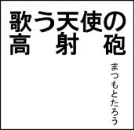

| 歌う天使の高射砲 | |
| まつもとたろう | |
| (2018) | |

俺の名前はフォーリッジ。とある貴族に仕える執事だ。執事と言っても炊事洗濯に日々明け暮れるわけじゃない。どちらかというと主人の仕事を補佐する進行管理者としての役目が大きい。というより、ミカエル様はお世辞にも仕事に熱心とは言えず、彼女の手からこぼれた、いや、彼女が投げ出した業務を完遂するのがもっぱらの役目だった。もちろん一度だって彼女が投げた仕事を取り損ねたことはない。それこそ俺たちが地上の監視を始めてから一度も、彼らを失望させたことがないくらいに完璧にこなしてきた。
だが生きていれば、多かれ少なかれ誰でも失敗はするものだ。失敗を恐れていては前に進めないし、失敗は成功の母だと言うやつもいる。間違えたなら、謝罪し、修正し、次に成功させればいい。そして俺にも、そのときがついにやってきた。しかし世の中には取り返しのつかない過ちというものがある。だから俺はこの件に関して、まだ謝っていない。なぜかって？ 謝って済む問題じゃないからだ。
「なんですって？ もう一度言ってくれるフォーリッジ」
「ですから彼を殺しました」
「嘘嘘嘘！ なんでそうなっちゃうわけ？ そんな命令は出してないはずよ！」
この驚きと怒りをあらわにした彼女はレイチェル。政党の幹部だ。そして俺が仕えている主人の上官でもある。今でこそ目を釣り上げ、眉間にしわを寄せ、すぐにでも俺の首を締め上げたいような表情をしているが、その形はまさに宗教画から抜け出したような天使そのものだった。少しクセ毛がかった金色の髪と、男どもを魅了する豊満な体型。なにより新雪のように白く輝く大きな羽は、まさに上級天使の証だ。
レイチェルは壁も天井も床も、窓にかかったカーテンすらも白いこの部屋で、何度も同じ質問をして俺を責め続けている。どうやら俺の答えがまったく気に入らないらしい。だがいくら質問を繰り返しても、死んだものが生き返らないように、その答えが変わることはない。
「知りませんよ。俺は計画通りにしたまでです。ただミカエル様が今、マフラーを編むのに夢中でして、それで夜更かしを少々」
ミカエル様には困ったものだ。そもそもこうなった原因も彼女にあると言っていい。なにやら最近、ミカエル様は編み物に凝っているようで、夜遅くまでマフラーを編むのに忙しいのだ。おかげでしばしば朝起きられないことがあった。
「それとなんの関係があるのよ？ あなたたちは寝坊の度に人間を殺すつもりなの？」
「そうは言ってません。ただ寝坊したせいで、砲弾を取り違えていることに気づかなかったんです。確認する時間がなくて。それにほら、下の連中は本当に撃っていると思っていますし」
「え？ なに？ 砲弾を確認せずにぶっ放したの？ 飛行船に向かって？ 彼の乗った飛行船に向かって？」
「ええ。ズドンと」
「あなたたち最低ね！ これってすごく最悪な事態よ。どれくらい最悪って、もう......すごく最悪ってことよ！ 人の希望が失われたんですから。でも一番の最低なところはそこじゃないわよ。私たち自身のことよ。いい？ 彼を殺したなんてことが、総統閣下や元老院にバレてみなさい。あなたも、ミカエルも、私も、みんな仲良く堕天使ゲットー行きなんだから。ああもう最低ね！」
レイチェルは、地上から持ち込んだという天鵞絨張りの椅子から立ち上がると、文字通り頭を抱えて、ぐるぐるとその場で弧を描きながら歩き始めた。そしてひとしきり回り終えると、今度はため息を吐いたあと、しばらくむずかしい顔をしていたかと思ったら、おもむろに琥珀色をした猫足机に突っ伏した。それからはしばらく動かないものだから、俺は少し心配になりレイチェルに声をかけた。
「でも、代わりを探せばいいでしょう？」
するとレイチェルはその言葉がカンに触ったらしく、俺をキッと睨むと、大きな声でまくし立てた。どうやら心配する必要はなかったようだ。彼女は嫌になるほど元気だ。
「誰の？ 誰を？ 誰が？ 同じ人間が生き返らなかったら奇跡とは呼べないでしょう！ いい？ これは私たち天使の〈奇跡〉を人間たちに見せるための、いわば自作自演の復活劇なのよ！ 死から再生！ 絶望から希望！ 再誕の喜びが必要なのよ！ それを可能にするのは天使なの！ 天使は人間に奇跡を起こすものなの！ そして人々は、天使に感謝と、喜びと、信仰を約束するの！ だから本当に彼が死んじゃったら意味がないの！ 死んだフリでいいの！ 本当は私たちに死者を蘇らせるチカラなんてないんだから！ それなのに本当に殺害するなんて、あなたたちもう......でもそれって、本当に死んだの？」
叱責の弾丸はやがて勢いが落ち、レイチェルは力なく椅子に腰掛けると、わずかに残された希望を、パンドラの箱に見つけようと、上目遣いで懇願するように俺に問うてきた。しかし残念ながら、俺はパンドラではなくフォーリッジだった。
「死んだと考えて間違いないでしょう」
「......ちょっとも生きてない？」
彼女の言う「ちょっと生きている」というのがどういう状態を指すのか分からないが、少なくとも俺はちょっと生きている人間なんて見たことがない。というより、そんなやつがいたら殆ど死んでるんじゃないか？
「ええ、遺体の確認はしていませんが、飛行船は火を噴きながら砂丘に激突しましたので、あれで生きていたなら、それこそ天使信仰による賜物。奇跡と言っていいでしょう」
その答えを聞くとレイチェルは、金髪を掻き乱し、再び机に顔を伏せた。そしておもむろに抽出のなかをあさると、黒光りする物騒なものを取り出し、俺にそれを向けてきた。
「......絶望的ね。ゲットー行きなんてまっぴらだわ。あんなところに連行されるくらいなら、いっそのこと自殺したほうがマシよ」
レイチェルが愛用しているワルサーＰＰＫだ。党からの支給品で、小さくて使いやすい優等生な銃といえる。俺にも支給されており、今も腰のホルスターに装備しているが、さすがに上官に向かってそれを抜くわけにはいかない。
「なにやってるんですか！ 自殺なんてして、どうなるっていうんです！」
「違うわよ！ 先にあなたを殺すのよ！」
「ちょっと落ち着いて！ こんなところで俺を殺したら、白い床に血溜まりが出来て、掃除が大変なだけですよ。ほら銃を抽出に戻して。はい深呼吸して」
彼女は俺に諭され、ふくれっ面で銃を抽出にしまった。やれやれだ。一度も撃ったことがないのに、すぐ銃を取り出すのが鬱陶しい癖だ。
「本当もう最低。殺すふりだけのはずなのに、本当に死んじゃうなんて。あくまでも自作自演なのよ......さっきも言ったけど、私たちに死者を蘇らせるチカラなんてこれっぽっちも、な・い・の！」
「もちろん知ってます。だから自作自演で死んだふりをさせるんです」
「そうよ！ その通りよ！ それなのにこの醜態！ まずいわよ、他の天使に知られるまえにどうにかしないと......本当にあなたたちを殺して、私も死ななきゃならないわ」
爪を噛みながら、なにやら思案しているようだが、その表情は眉間にしわが寄っているだけで、とくになにかを思いつきそうな様子はない。
陽が傾き始め、床に落ちた窓枠の陰影が東に長く伸び始めた。にもかかわらずレイチェルは、あれきり考え込んだまま固まっている。俺はそのあいだずっと立ちっぱなしだったし、腹も減ってきた。正直、そろそろ家に帰りたかった。
「あの......なにか思いつきましたか？ でも死んだ人間を蘇らせるなんて、神でもなければできませんよ。そういったことは神の領分ですから。あと、そろそろ帰っていいですかね？ ミカエル様の夕食を作らないと」
「......今、なんですって？」
「いや、今晩はヒヨコ豆のスープにしようかと。あ、でもミカエル様の好物とは、ほど遠いですが健康を考えると献立は重要ですから」
「いえそうじゃないわ。べつにあなたのところの夕食なんてどうでもいいわよ。けどデザートは付くのかしら？」
「ええ、近所の人に栗を貰ったので、モンブランでもと考えてますが、ただ今から作るには時間が」
「ちょっと。その微妙に嫌味を言うのをやめなさいよ。っていうか、そんなのいいのよ。それより神しか出来ないってやつよ」
大粒の栗で、食べ応えがありそうだった。しかし渋皮を剥くのが面倒なので、やはり今晩にモンブランを作るのはやめようかと思う。ここはシンプルに茹でるだけにして、スプーンで中身をほじりながら食べるのがいいだろう。これなら茹でて、切るだけですむからな。ああそうしよう。
「ちょっとフォーリッジ聞いてる？」
「え？ ああ、聞いてますよ。でも神は現在不在で、とっくに死んだと噂する連中もいるくらいで、彼に蘇らせて貰うのも無理かと」
「本当に？ でも噂でしょ？ それに神の生存有無は別にいいのよ。むしろ不在なら都合が良いわ」
おっと、嫌な予感がする。レイチェルは先ほどまでとは打って変わって、どこから湧き出てくるのか、自信に満ちた表情を浮かべている。俺を人差し指でさしながら、「いいことを思いついたわ。こうよ」と頼んでもいない作戦会議を始めた。新たな命令の発令だ。
「彼を秘密裏に蘇らせるのよ。幸いにも地上では例年の復活劇だと思っているでしょうし、彼の遺体を見られたところで、数日後に蘇るつもりでいるから問題ないわ。あと他の天使たちも今のところはいつもの演技だと思っているはずよ。まさか本当に殺したとは微塵にも疑ってないでしょう。でもそれだって四日後の再誕日までよ」
「ええ例年ならその日に彼は、嘘の死から見事に復活を遂げますから」
「そうね。だからその日までに彼を私たちで蘇らせるのよ！」
レイチェルは手を打って鳴らすと、興奮気味に続けた。
「魂よ！ 彼の魂を手に入れるの！ そして〈再誕の杯〉で蘇りの儀を執り行うのよ！」
まるで何かの試験に合格したかのように、はしゃいで喜ぶレイチェルだったが、俺は一緒にお手々つないで歓喜する気にはなれなかった。それが「いいこと」なのか？
「でも〈再誕の杯〉は神が......まさか、本当にやるんですか？ でも神から盗むなんて」
神が死者を蘇らせる儀式で使用する杯だ。だが、それを実際にどう使っているのか俺は見たことがない。そもそも神の顔なんて拝んだことすらない。実際に神と対話できる天使など、上級より上の大天使クラスだけだろう。
「違う！ 神が留守にしているときにこっそり借りるだけ」
最悪だ。身を滅ぼすとはこのことだ。彼を、いやこうなったらもう「やつ」で十分だ。やつを蘇らせるために、神から物を盗み出すなんて、それこそ今回の殺人がばれるのとどっちが重罪だろうか？ しかもどちらも内緒のうちにやりきらねばならないのだ。そして、こういう面倒な仕事は、部下に回ってくる。
「確かに杯があれば死んだ人間を蘇らせることができるかもしれませんが、でもそれは神がやるからであって、俺たち天使に真似事ができるんですか？」
「やってみないとわからないじゃないの！ だいいちこうなったのは、あなたたちのせいなのよ！ さっさと魂を抜き取って、神から杯をかっぱらって、内緒で死者を復活させなさいよ！」
まぁ少しは俺たちのせいであることも事実だが。それにレイチェルの言うように、このままではどちらせよゲットー送りになるのは時間の問題だ。嫌でも覚悟を決めなくてならないかもしれない。
「わかりました。やってみましょう」
「では明日早速ミカエルと一緒に、下界に降りなさい。彼の遺体が大聖堂にあるのは分かっているんだから、遺体から魂を抜き取るのは簡単でしょ？ でも急ぎなさいよ。時間はほとんどないわよ」
「ええ心得ています」
「じゃあお願いね。称えよ白き翼の行進を」
「称えよ」
やっと解放された。さっさと帰ってミカエル様の夕食を作ろう。
「待ちなさいフォーリッジ。敬礼はどうしたの？」
「......称えよ我らが楽園を」
ドアノブを回そうとしていた手を止め、俺はレイチェルのほうを振り返ると、右手の平を彼女に見せるように軽く振り上げ答礼とした。
「もう！ あなただって〈我が白き翼〉の党員なんですからね。ちゃんと敬礼くらいしなさいよ。ゲットーに移送されたら、敬礼すら懐かしく思うことになるわよ。あの不良のお嬢さんにも言っておいてね。今度の任務を失敗したら、本当に終わりよ」
「ええミカエル様にも伝えておきます。ですが皮肉ですね。その任務が党ではなく、自分たちの保身のためなんて」
「ちょっと！ もう一度説明しましょうか？ なぜこうなったのか」
「いやもう十分です。すぐに魂を手に入れて見せますよ」
とは言うもののあまり乗り気にはなれない。死体になんて触りたくもないからだ。だが、やるしかない。命令は命令だ。
党本部の建物を出ると、すでに東の空は濃紺に染まっていた。ここ天界でも十二月らしい冷たい風が、天使たちの白い翼をかすめ撫でていく。
俺たちが党、〈我が白き翼〉の本部はロープウェイでしか来ることのできない険しい山の頂にあり、そこはヴァルコイネン・ガーデンと呼ばれている場所だった。
俺はそんな山頂にあるロープウェイの駅舎で、薪ストーヴにあたりながら、下りのロープウェイが到着するのを待った。そのあいだに思うことといえば、やはりモンブランを作った方が、ミカエル様が喜ぶだろうかということと、ついでに昨日の事故のことだ。ちょっとした手違いさえなければと悔やまれる。すべては俺たちが、〈法王〉を殺したのが始まりだった。
寿命が近いのか、それとも接触不良でも起こしているのか、天井から吊された白熱電球がチカチカと目障りに瞬いた。
大人が二人並んで通れるくらいの通路は、党本部の白い部屋とは違い、薄暗く少し黄ばんだ印象だ。消火灯の赤い光が白熱電球に挟まれて、一定間隔で天井から顔を覗かせているが、それがいっそう寂しく感じられたし、不気味にも思えた。
通路には俺とミカエル様のほかは、誰も歩いておらず、これが天界と地上とをつなぐ通路なのかと疑わしくなるくらいだった。しかし天界と下界とのあいだで交易なんて存在しないわけだから、この通路を使う人間たちも存在しないし、天使たちも党の任務の他では、地上マニアか、天界に居場所を見つけられない者でもないかぎり、この渡り廊下を使う者は皆無だ。代わりに一頭の蛾が、しきりに白熱電球に求愛していた。
「ミカエル様、急いでください。もう時間がありません。早くしないと砲撃の時間に間に合わなくなりますよ」
天界でも名の知れた貴族の娘であるミカエル様は、産まれたときから上級天使だ。幼い頃に先代を亡くして、すぐに両親が所有していた魂を相続したからだ。だから本人曰く、先代のことはまったく覚えていないという。だが人間で言うところの思春期まっただなかであるミカエル様には少しずつだが、母親の面影がうっすらと垣間見えるときがあった。両親から受け継いだのは遺産だけでなく、長く伸ばしたシャンパンゴールドの髪や、鼻筋の通った端正な顔立ち。そして貴族らしい気高さと、少しの我が儘さと、常に上からの目線も受け継いだ。ただそうでないものもある。男たちを虜にする胸囲だ。
「ああわかっている。だからこうして急いでいるだろう」
とは言うものの、ミカエル様はいっこうに走る素振りを見せない。それどころか、天井を見上げながら、切れかかった白熱電球の数を数えて歩いている。
「ミカエル様。前を見て歩いて。転んだらどうするんです。買ったばかりの外套が駄目になりますよ」
オペラピンクをしたウールのダブル外套で、黒のファーが襟と袖にあしらわれた外套だ。ショウウィンドウで見かけたとき、誰が買うのかと思っていたが、「いい色だ」と言ってミカエル様が買ってきた。目に痛い色の外套だが、似合ってはいる。
「十三個だ」
「何がです？」
「フィラメントが切れそうな電球の数だ。〈我が白き翼〉の管理は、ここまで行き届いていないようだな。人間たちへの布教活動は熱心だというのに」
天界で最大規模を誇る党で、神が不在となった世界を掌握し、運営しているのが〈我が白き翼〉だ。天使の八割は党員で、その割合が転覆することは考えられない。なぜなら残りの二割は堕天使で、彼らは天界の片隅に作られたゲットー、すなわち隔離された居住区でのみ生活を許されている。
堕天使とはいわば犯罪者たちであり、天界の二等国民だった。そんな彼らを好く天使がいるはずもなく、連中に選挙権が与えられているはずもなかった。だから事実上、〈我が白き翼〉の支持率は一○○パーセントだ。ちなみに堕天使よりも卑しいとされているハーフ天使には、選挙権が与えられていないのはもちろん、彼らは天使の数にも含まれていなかった。犬や鶏と同じ扱いだ。
「ミカエル様がそれを言うんですか？ 編み物に夢中で寝坊したミカエル様が？」
「オペラピンクだぞ。どんなに可愛いマフラーになるか。想像したら早く編み上げたいと思うだろう？」
俺は色に可愛いという感覚を持ったことはないが、ミカエル様には華やかなオペラピンクは可愛いらしい。だから外套もこの色なのだろう。だが彼女が、可愛いマフラーを早く完成させたいばかりに、党の命令を実行する大事な日だというのに、寝坊して遅刻している始末だった。
生まれも育ちも天界である俺やミカエル様が、今さらハーフ天使になることは、その生殖理論上ありえないが、〈我が白き翼〉の党員としてヘマをすれば、堕天使に降格させられる可能性はある。だからこそ、党の命令は絶対だ。ゲットー送りは洒落では済まない。ぼろぼろの狭いアパートで、不衛生に一生を終えるのだ。
「あのミカエル様。そろそろ本当に急いでください。法王が乗った飛行船を撃つ時間が迫っています」
「でも実弾ではないのだろう？」
「もちろんです。実弾なんて使ったら、それこそ法王を殺してしまいますから。あくまで自作自演です」
党の命令というのは、簡単なものだ。法王を殺害すればいいのだ。といっても、本当に殺すわけじゃない。殺すふりだけでいい。
法王は今日、飛行船に乗って街の平穏を上空から願うのだ。それは毎年のことで、一年の終わりが近づいた十二月の下旬にそれは行われる。だがそこで、残念なことに飛行船は毎年、地上からの砲撃で撃墜された。人間たちは毎年、法王の死を悲しみ、そして天使に祈るのだ。彼を復活させて欲しいと。だから天使は十二月二十五日にやつを生き返らせてやる。すると人間たちは天使の奇跡だと喜び、俺たちへの信仰を厚くした。もちろんそれは天使と、人間で唯一、天使の存在を知っている法王との共作による自作自演だった。
天使にとって人間たちの信仰は必要不可欠だ。なぜなら天界での俺たちの地位は、人間たちの魂をいかに多く所有するかで決まる。だが数が多ければ良いというものではない。〈徳〉の高い魂でなければならない。だから聖職者が死んだとき、その魂を狙ってしばしば天使同士の争いが起こった。
一方で法王にも利益はある。毎年、天使の奇跡を授かっている彼のことを、住民たちは称え、尊敬し、ときに金銭的な幸福を彼らから得られたからだ。そんな法王の魂は〈徳〉が高いかと言えば、答えた「正」だ。〈徳〉とは本人のなかにある信仰心の深さだけでなく、周りから向けられる眼差しの輝きも重要なのだ。つまり周囲から「あの人は清廉潔白で、信心深い良い人だ」と思われることが〈徳〉の深さなのだ。すなわち〈徳〉とは他人が下す評価の価値だ。それが高い人間の魂は、光り輝き、所有した天使に幸福をもたらす。だから聖職者の魂は天使に人気がある。かくも〈徳〉とは、俗的なものなのだ。
「......いっそうのこと本当に殺して、その魂を所有するのもアリな話じゃないか？」
確かに法王ほど民衆から尊敬を受けている魂なら、さぞ〈徳〉が高いだろう。やつの魂を所有できれば、それこそ堕天使から天使に、それも上級天使に返り咲くのもわけないだろう。しかし、そんなことが許されるはずがなかった。
「なに言ってるんです。そんなことしたら、天使の奇跡は不発に終わって、俺たちへの信仰心がどうなるか。大天使になるどころから、堕天使に墜ちますよ。どうせ狙うなら、今日ではなく彼の寿命が尽きるのを待ちましょう。そのための天使協定ですから」
法王の魂を所有するのは、ミカエル様が言うように魅力的だ。すでに上級天使である俺たちが所有すれば、あっというまに大天使に格上げされるだろうし、もしかすると〈我が白き翼〉の総統にだって下克上できるかもしれない。しかしそれはもう少し先の話だ、あくまでも寿命が尽きたときを狙わなくてはならない。天界ではそういう取り決めになっている。そうでもしなければ、天使たちは魂欲しさに聖職者を狩りまくるに決まっているからだ。ましてや法王の魂なんて、きっと育つ前に刈り取られ、あっという間に信仰心の不毛な街になってしまう。
「まったく面倒な話だな。天使協定も、今日の命令も」
「ミカエル様。取り決めは重要です。いいですか、万が一にも聖職者を殺そうなんて考えないでください。天使協定を破ったら堕天使に降格ですからね。それに命令違反もです。ですから早く急ぎましょう。ところで、今日の手順は心得ていますか？」
「ああわかっているさ。ちゃんと花火を打ち上げるさ」
天使には死んだ人間を蘇らせるチカラなんてない。だから本当に殺すわけにはいかない。そこで法王が乗った飛行船に向って、実弾のかわりに花火の砲弾を高射砲でぶっ放すのだ。飛行船はさも撃墜されたようすで、砂漠にひっそりと着陸する。そして死んだふりをした法王は、大聖堂の地下に運ばれ、そこで俺たちと落ち合うのだ。あとは適当に呑んで騒いで、再誕の日に華々しく復活すればいい。そうすれば法王は住民から尊敬を、俺たちは信仰を得られる。
「しかし人間たちは、なぜ毎年砲撃されるのを黙って見ているんだ？ 誰か砲撃を阻止しようと考える者はいないのか？ 尊敬する法王様だろ？」
「さあ知りませんよ。蛾が火に飛び込むようなものじゃないですか？」
「なにも考えていないと？」
「いえ、そういうものだと考えているんじゃないですか？ 火に魅せられるのは蛾たちの習性だから仕方ないってことです」
そう仕方がないのだ。俺たちだって誰も神を探そうとしなかったし、堕天使をゲットーに移送した日も覚えていない。人間たちも毎年殺される法王を不審に思わないし、銀貨の枚数によって変わる洗礼式の時間も気に留めない。なぜならそういうものだからだ。世界は暗幕に包まれている。見ずに済むなら、そのほうがラクでいい。まあ、ヘタに人間たちに動かれたら、困るのは俺たちだ。
「そういうものなのか？ むしろバレてるんじゃないか？ ただの花火だって。あ、猫だ」
「ミカエル様。なんて恐ろしいことを考えるんですか。って、何？ 猫？」
確かに猫がいた。真っ黒な猫で、艶のある毛並みをしている。それなりに値の張りそうやつだ。おおかた、小金持ちの家からひとりで散歩に出たあげく、ここに迷い込んだのだろう。
黒猫は俺たちに気がつくと、ひと鳴きすることもなくジッと見つめてきた。耳を垂直に立ててなにやら警戒している。
「うむ。どこの子だ？ 迷ったのか？ ここは地上の生き物は入ってはいけないところだぞ」
「ミカエル様。急がないと」
そこに猫がいたときにマズイとは思ったが、案の定ミカエル様は電球を数えていたときよりもずっと目を輝かせて、猫に小走りに近づくと、そっと抱き寄せようとした。猫は少し驚いたようで、一歩後ずさりしたが、ミカエル様が人差し指を突き出すと、匂いを嗅ごうと歩み寄ってきた。
「良い子だ......ほら！」
可哀相な猫だ。だが少しでも気が緩んだのが悪い。猫なら猫らしく、終始警戒を怠ってはいけないのだ。
ミカエル様は猫が近づいた瞬間、その悪戯心と、今までしまっていた羽を通路いっぱいに広げてみせた。薄暗い廊下にひとつ粒の流星が落ちて、黄ばんだ空気は一瞬で、真っ白な白銀の世界に舞台装置を変えた。見えない旋風が俺と黒猫を包み込み、通路を左右に別れて駆け抜けると、やがて廊下には僅かにミカエル様の香りと、通路を駆ける軽い足音が響いて残った。
「あははは！ 可愛いやつだ。慌てて逃げて行ったぞ！」
「まったくミカエル様。猫が可哀相だ」
「だが、上手く地上のほうへ走って行ったじゃないか」
「ええまぁ。ああほらミカエル様、俺たちも急ぎましょう。それと羽もしまってください。もうすぐ出口ですよ」
「フォーリッジ。おまえはそればっかりだな」
「なに言ってるんです。急がないと命令違反ですよ！」
「違う違う。いつもその黒のロング外套と洋股だな。黒ばっかりだ。たまにはピンクとか着てみたらどうだ？ わたしのを着てみるか？ なぁ？ なぁ聞いているかフォーリッジ？ あ、無視だな？ そうだろうフォーリッジ」
相変わらずのんびりと歩くミカエル様だった。俺は時間に間に合わないのではと、内心焦っていたが、ミカエル様ときたら、俺のファッションセンスを黒猫のようだと揶揄するだけで、彼らのようにすばしっこくは歩いてくれなかった。だが地上への出口はもうすぐそこだ。あのかどを曲がれば人には見えない秘密の扉がある。それにしても、あの猫はどうやって迷い込んだんだ？
◇◇
溜まった埃と、排水溝のカビが混じったような地下独特の匂いが鼻腔を刺激した。人間たちの街に足を踏み入れた証拠だ。この匂いを嫌って下界に降りない天使も多い。
俺たちは秘密の扉を開けて、地上へとやってきた。と言っても、ここは地下鉄の中央駅だ。せっかくの地上への入り口が、地下という冗談が面白い。天使は地上に舞い降りない。地下から這い出てくるのだ。
地上と天界をつなぐ扉は、駅でも一番古い区画の、そのまた端っこにある。そこはセントラルヒーティングからも取り残された場所で、夏は蒸し暑く、冬は地上をゆく冷たい風がどこからともなく吹き込んできた。昔はこの場所に零番ホームがあり、砂漠を越えた隣街まで路線が延びていた。地盤の固いところを通るために、線路は左右に大きくカーブを描きながら人々を運んでいた。しかし進む砂漠化と、同じく進む人口減少で、砂漠の向こうの街は消えてなくなった。この砂塵まみれの大陸で残された唯一の街は、ここだけだった。だから今は、中央駅とは名ばかりの老朽化した小さな地下鉄駅に成り下がっていた。路線も街を南北に通るだけしかない。そんな街を取り巻く状況だからか、ここでは天使がもたらす毎年の奇跡は、人々に希望を与えた。
「相変わらず雑然としているな」
秘密の扉より少し進んだころ、ミカエル様は秘密基地でも見つけた子供のように、無邪気に笑って言った。汚い中央駅にいながら、そう言う原因は、この街の住民たちが弱くないからだ。というかしぶとい。
人々は砂漠の向こうに金貨がないなら、海の向こうに金貨を求めた。地下鉄を降りると、飛行船と船に乗り換え、商売相手を外国に鞍替えた。そのおかげで極東の珍しい烟草やら、パリから高級な革製品が持ち込まれ始めたのだが、そうなると非合法なものも入ってくるものだ。この使われなくなった中央駅の区画では、ちょっとした嗜好品を手に入れることが出来た。そんな騒々しい地下街がミカエル様のお気に入りだった。
「そりゃあ地下バザーですから。あ、勝手に買い食いしないでください。何が入っているかわからないですから。これから仕事だというのに、気持ち良くなられたら困りものです」
「もちろんだ。買うなら帰りにするさ」
「ミカエル様。ここで非合法なものは、天界でも非合法ですよ......見つからないようにしてください」
「当然だ。しかし寒いな。なにか温かい飲み物でも買ってくれないか？ そこにホットウィスキイを売っているぞ」
「駄目です。どう見てもただのホットウィスキイじゃないでしょう。売ってるやつの視線がおかしいですから、きっと一服盛られてますよ。ほら遠足気分になるのは帰りにしてください。さっさと大聖堂に行きますよ、ミカエル様」
違法に占拠されたバザーであっても、すべてが無秩序なわけではない。出所が怪しい商品がありはするものの、それ自体が法的に問題ないものは、バザーの中央で威勢の良い店主がどうどうと売っていたし、なかには誰が利用するのか知らないが、子供が番をしている理髪店だってあった。一方で絶滅危惧種の野鳥や、違法な重火器。それに楽しい気分になれる香草を売る連中は、よりカビ臭く薄暗い場所を好んでたむろしていた。当然ながら、真っ当な住民はこんなところに足を踏み入れない。
バザーの中央付近は肉を焼く匂いや、異様なくらい甘い匂い、それに人々の笑い声や、怒声、ときに何かが壊される音が、嵐に揺れる竹林のざわめきのように騒々しく鳴った。その音の塊は、ドーム状の天蓋に跳ね返ると、四方八方に飛び散りやがて俺の鼓膜を震わせた。こんなところで可笑しな香草でもキメた日には、一発でヘドロのように神経や感覚が溶けてしまうだろう。実際、薄汚れたモルタルの壁に、目つきの危ない連中が寄りかかって意識が半分なくなっていた。こいつらには天使信仰はあまり布教されていないようだ。
俺は人間たちのたくましさと、欲望の合間を縫いながら、すぐに寄り道をしようとするミカエル様の腕を引いて外への階段を目指した。
「フォーリッジ。やはり戻ってホットウィスキイを買わないか？ 風が冷たすぎるぞ」
外に出る階段を、粉雪混じりの風が小走りに駆けてきた。それが頬と髪を撫でる度に、ミカエル様は文句をたれながら、肘で俺を小突いてきた。手をポケットから出したくないからだ。だが文句を言いたいのは俺のほうだ。さっさと高射砲に向わないとならないのに、急ぎやしないのだ。ミカエル様は、冷たい風が吹くとすぐに立ち止まった。
「ミカエル様！ 早く足を動かしてください。わずか数段上がるのにどれだけかかるんですか」
「数段ではない。数十段だ！ これが数段か？ よし数えてみるか？ でもその前にホットウィスキイをだな」
「わかりました。じゃあ大聖堂に向う途中に、ホットレモネェドを売る店があったら、それを買ってあげますから。とにかく今は動いてください」
「うむ。まあいいだろう。それで手を打とう」
まったくミカエル様にも困ったものだ。ホットウィスキイのために命令に違反しては、もともこもない。だがレモネェドの提案は、彼女を上機嫌にさせたようで、さきほどよりも早いペースで階段を上っていく。俺はとりあえず安堵した。
ミカエル様の積極的な協力のおかげで、カビ臭い階段から、冬の匂いのする地上へと足を踏み出した。
冬真っ盛りのこの街は片方を海に、反対側を砂漠に挟まれている。上空から見た景色は、青と橙のコントラストに浮かぶ石造りの美しい街だが、冬は海風が冷たく、ときに嵐が雪と砂を街に降らせた。夏は夏で、砂漠の熱風が街を襲う。海風のせいで鉄塔や、路面電車のような鉄の塊はあまりない。建物の多くは石造りで、淡いピンクや緑、青い色の外壁が魅力的だった。薄汚い中央駅や、同じ石造りでも白ばかりの天界とは違う。
気温は低いものの雪は降っておらず、先ほど階段ですれ違った粉雪は、弟待つ雪が吹き飛ばされたものだとわかった。冬には珍しく晴天で、青い空には雪雲ひとつなかった。しかし海から吹く風は、肌が切れそうなほど冷たく、街路を行く人々はマフラーを口まで巻いたうえ、背を丸めて歩いていた。
その碧空の空に、白い飛行船が一隻、ゆったりと浮かんでいた。進んでいるのか、止まっているのかもわからないくらいの速度で街の上空を旋回している。高度は俺たちが狙いやすいように、比較的低いところを飛んでいた。そう、こいつが法王の乗った飛行船だ。すでに飛行船は街を半周以上しており、早いこと高射砲に辿り着かなければならなかった。その高射砲が設置された大聖堂の屋根が、俺たちの前方に顔を見せている。大聖堂は街で一番の高さを誇る建物で、どこからでもその屋根を眺めることが出来た。コバルトブルーの鱗屋根が特徴的で、他のどの建物にもない珍しい屋根瓦だった。
俺とミカエル様は、大聖堂を視界に捉えながら、しばらくは順調に歩いていた。まぁミカエル様は高射砲に急ぐというよりは、レモネェドを売る店を見つけるのに忙しそうだった。それでも足早に歩いてくれるなら、それで十分だ。
「お。フォーリッジ。急げ」
「見つけましたか？ レモネェド屋」
「ああ、あそこだ」
当然、ミカエル様が仕事に急ぐはずがなかった。通りを挟んだ向かい側にホットレモネェドを売る露店を見つけたのだ。今さらそれを咎める気はない。早く満足して貰って、次に急いだ方が良い。
ミカエル様は白い息を吐きながら、満面の笑みを浮かべて子供のように小走りで道路を渡る。エンジンをリアに積んだ古いクルマが、クラクションを鳴らし急停車した。運転手はハンドルから両手を離して、呆れ気味に抗議をするが彼女はそんなことお構いなしだった。そして道路を渡り終えると、こちらを振り向き「はやく銅貨を持ってきてくれ」と手を振って俺を呼んだ。
俺はしっかりと左右の安全を確認してから、道路を渡り終えた。
「銅貨一枚だな。ほら」
寒さに頬と鼻を紅く染めた男は銅貨を受け取ると、コンロにかけられたポットから、白磁のカップに黄濁色の飲み物を注いだ。柔く白い湯気が立ち上り、甘酸っぱい香りが辺りに満ちる。男はレモンを輪切りにすると、それをレモネェドに浮かべて差し出した。ミカエル様はカップを受け取ると、一、二回冷ますように息を吹きかけてからカップに口を付けた。
「うむ。熱くて美味いな。ところでフォーリッジ。今日もランチボックスを持ってきたのか？ 砲撃するだけだろう？」
カップから立ち上る湯気越しに、ミカエル様は上目遣いでたずねる。
「何があるかわかりませんから。念のためです。それに花火も入ってます。あれは外套のポケットにしまうには大きすぎるので」
花火は天界から持参した。高射砲で使用するくらいだから、その大きさはポケットに収まるようなものじゃない。ミカエル様のためにいつも持参しているランチボックスのなかで、その出番を待っているわけだ。まさか、ランチボックスのなかに花火が入っているとは、街の住民は誰も思うまい。
「仕事熱心なやつだ」
カップを両手に持って暖をとる。その姿を見ると俺も一杯飲もうかという気分になる。だがそれは帰りにしよう。いや帰りに飲むんだったら、やはりホットウィスキイがいい。ホットワインという手もある。とくに紅茶のように甘い赤ワインだ。フルボディの渋みのあるワインはホットに向かないからな。まてよ、地下バザーなら、極東から輸入した熱いセイシュが安く手に入るかもしれない。しかし今はとにかく高射砲に急がねばならない。
「ええ、おかげさまで」
「なんだそれは皮肉か？ それよりもだ。その子供はフォーリッジの知り合いか？」
「はい？ なにがです？」
ミカエル様に言われて初めて気がついた。いつのまに背後に立っていたのか、黒髪を肩まで伸ばした少女が一人、俺の脇からランチボックスを興味深そうに眺めていた。人で言うところのエレメンタリースクールの高学年といった歳だ。確かにこれくらいの年齢の子供は、ちょこまかと動き回るし、まるで猫のように不意に現れる生き物だが、それにしても天使の俺が人間のガキに背後をとられるなんて癪に障る。
「どうした？ なんか用か？」
少し強い口調で言ってみるも、少女はミカエル様のように臆することなく、ニカッと笑ってみせると突然、手をランチボックスに伸ばして引ったくった。
「......おい！」
一瞬のことであっけにとられた。まさか目の前で、それもガキにしてやられるなん上級天使としてなんという体たらくぶりだろうか、だが自分を責めている時間などわずかにもない。あれには花火が入っているのだ。
「ミカエル様！ 先に大聖堂に行っててください！ 俺はあの悪ガキを追いかけます！」
返答を聞くまえに俺はすぐに街路を駆けた。ガキは本当に猫のようにすばしっこい。メインストリートから路地に駆け込むと、十字路や丁字路を右や左に曲がって、俺を振り切ろうとする始末で、素人のやることじゃなかった。どう考えても常習犯だ。そのうえ路地は人が行き違うにも苦労しそうなくらい狭く、さらには葉脈のように幾筋にも枝割れする。乱開発といってもいいくらいの、悪意すら感じる路地裏を必至で走った。
「待てクソガキ！ おまえ！ ただじゃ済まさないぞ！」
アパートの壁に挟まれ、靴音と声が反響してエコーがかかったようになる。
「誰か待つかっての！」
年端のゆかない愛らしい声だ。まったくそれが余計にムカツクガキだぜ。きっとこの界隈を根城にしている少女窃盗犯に違いない。こういうガキには一度痛い目に合わせてやるのが一番だ。俺は猫にするように、やつの首根っこを掴まえてやろうと全力で走るのだが、不意打ちをかけて左右に曲がる子供にやられっぱなしだった。
もし羽を広げて空を飛べれば、あっというまに確保できるはずだ。しかしいかんせん路地が狭すぎる。こんなところで羽を広げた日には、壁に擦れてぼろぼろになるだろうし、何より痛すぎる。どうにか走って追いつこうと思うのだが、やつは辺りに積んである木箱やら、植木やらを倒して、通路をふさごうとまでする悪質ぶりだった。俺は例え子供であろうと、やつをとっ捕まえたら、地面に倒して小さな顔をぶん殴ってやろう思う。いや、腰のホルスターから銃を取り出して、口の中に突っ込んで泣かしてやるのも悪くない。なんていったって、こっちは任務を失敗したときにはゲットー送りだ。必至にもなるというものだ。そうだ絶対にガキを泣かせてやろう。
と、ちょうど十字路を少女が曲がろうとしたときだった。左から馬車が出会い頭に現れた。
馬車もまだ現役のこの街では、それほど珍しい乗り物ではない。馬車はトラックタイプで、荷台には棺桶が積まれていた。男がひとりで馬を操っており、どうやら空の棺を運んでいるだけらしい。
「よし！」
ガキの不幸を願ったわけではないが、思わず期待の声が漏れた。いや嘘だ。かなり願った。馬にはね飛ばされて、路地を遠くに飛んでいけばいいと思った。
だが驚いたことに、少女は人間とは思えない跳躍で、馬車を飛び越えたのだった。目の錯覚かとも思ったが、少女は黒い髪をなびかせながら、波に乗るように風に乗って馬車の向こうに消えた。しかし急に現れた馬車に慌てたのは間違いないらしく、小さな十字路にランチボックスが転がった。
「危ないだろう！ 気をつけろ！ ったくなんてガキだ。あんたの知り合いか？」
無造作に乱れた黒髪の男が、手綱を握りながら抗議してきた。
「いや。そいつを引ったくった悪ガキだ」
ガキの手から離れたランチボックスは丁度、馬の真下に落ちた。それを拾い上げようとすると、馬の腹越しに先ほどの子供が悪びれる様子もなく、平然とランチボックスを盗もうとする姿があった。まったく肝の据わったというか、非常識なガキだ。こういう場合、さっさと路地裏に消えるべきだ。はっきり言って、ランチボックスには金貨も銅貨も入っていない。どうせなら、内ポケットの財布を狙うべきだ。
「おい何やってる！ それは俺のだ！」
「一度あたしの手に触れたものは、あたしのものだね！ っていうかおじさん。食べ物くらいで必死になるなよ！」
殺そうと思った。おじさん呼ばわりだと？ まだ人間で言うところの三十路手前だ。大人をコケにするにもほどがある。
にしても、近くで見た少女は生意気そうな顔をしているが、なかなかの美人で、将来はきっとろくでなしの女ギャングになるにちがいない。それも大衆の人気を得たギャングだ。しかしこの寒空の下、少女は黒いハイネックＴ襯衣と紺地のホットパンツという、雪風が吹き抜ける街には、そぐわない格好だった。それが俺の手をホルスターから遠ざけた。
「ラッキーなガキだ。もうすぐで撃ち殺してるところだぞ」
「ふん！ 冗談！ 出来ないくせに！」
「なんだと？ おまえ、本当に野良犬のエサにしてやろうか？」
俺とガキはランチボックスをつかみ合ったまま、馬の腹の下で綱引きならぬ、ランチボックス引きをするはめになった。なんだってこんなことに巻き込まれる？ これは俺のランチボックスだ。
「おいおいおい！ お二人さん！ 馬の下から出てくれ！ こいつが怖がってる！」
「うるせぇ！」
「うるさい！」
二人同時に叫ぶ。その声に驚いて、馬がいななきを上げて二本足で立ち上がった。これにビビッて手を離すだろうと思ったが、それはガキも同じだったようで、二人とも同時にランチブックを手前に引いた。本当に肝の据わった悪ガキだ。
「おい！ いい加減、手を離せ！ これは俺のだ！」
「違うね！ あたしのだね！」
「やめろって！ こっちは仕事中なんだ！ 大事な棺なんだぞ！」
「うるせぇ！」
「うるさい！」
そしていななく馬。
これではラチがあかない。いつまでも獣の下で、膠着状態でいるなんて精神衛生上よろしくない。馬の底にあるのは腹と筋肉質な足だけじゃない。こいつは牡だった。心の底から気分が悪い。そう考えていたのは、どうやら俺だけじゃなかったようだ。先に耐えられなくなったのはガキんちょのほうだった。
「ああもう！ これはあたしのなんだって！」
そう叫ぶとやっと手を離した。俺はこのとき、きっと勝ち誇った顔をしていたに違いない。ランチボックスの持ち手を握ると、意気揚々と立ち去ろうと思った。しかし事態は悪化した。
ガキはＴ襯衣をめくり上げると、隠し持っていたチーフスを抜いた。
「嘘だろ？ やばい！」
回転式の小さな銃だ。隠し持つには手頃だが、まさか子供が持っているとは思わなかった。しかもやつは躊躇することなく撃ちやがった。頬に熱を感じた。幸い弾は外れ、アパートの鉄門扉に当たった音がしたかと思うと、跳ね返り荷台の棺を貫通した。
「おい！ 商品だぞ！」
棺屋の男には不幸だったが、俺にはもう一つの幸いがおとずれた。ここに馬がいたことだ。馬は銃声に驚き、いななきながら暴れ始めた。後ろ足を強靱な筋肉で蹴り上げる。
「どおどおどお！ 大人しくしろ。さぁいい子だ。ああクソッ！ おまえらどうしてくれるんだ！ 馬が言うことを聞きゃしないだろうが！」
男が必死で馬を操ろうとするものの、牡馬は全く言うことを聞かなかった。狭い路地だ。こんな暴れ馬がいる状況で、銃を撃ち続けられるわけがなかった。俺もガキも馬に蹴り上げられないように気をつけるだけで精一杯だ。
頑丈な蹄が石畳を足蹴にする音と、派手に軋む荷台の音の恐怖感は、そのデカイ図体と一緒になってまるで重戦車のようだ。主砲こそないものの、やつに跳ね上げられた小石や剥がされたタイルが顔に飛んでくる。それが地味に痛かった。とんだ事件に巻き込まれたものだ。やはりレモネェド屋なんかに寄るんじゃなかった。
「ちょっと！ 危ない！ ああもう！」
ガキは銃を振り回しながら取り乱している。まぁ俺も似たような状況だが、しかしチャンスはどこにでも転がっているものだ。運の良いことに暴れまくっているうちに、馬が向きを変えた。その方向はガキがいるほうだ。
「はっはあ！ いいか？ もう一度教えといてやる！ これは俺のランチボックスだ！」
俺はホルスターから銃を抜き取ると、やつの後ろ足に蹴り上げられないうちに、グリップの背で馬の尻を殴った。
「あ！ なんてことしやがる！ 女の子だぞ！」
「何言っている。今度、腹の下に潜ってみろ」
自分の馬が牡か牝かもわからない男は、俺の言うことが理解できなかったらしく怪訝そうな顔をする。そしてその瞬間に隙ができた。馬はゆるんだ手綱を合図に、後ろ足で地面を蹴り上げると、突如として走り出した。荷台は壊れそうな音を立てながら、九○度に曲がると、少女を先頭にして路地を走り出した。
「危ない！ どけどけどけえええ！」
「嘘でしょ！ ちょっとこっちに来るなよ！ 最悪なんだからあああ！」
少女の悲痛な叫び声と、馬のいななきと、男の嘆きが、狭い路地裏にこだまし、やがて遠ざかり風に溶けた。
「いい感じだ」
満足だった。うまく機転を利かせて、見事にランチボックスを取り返した。それにあんな暴れ馬に追いかけられたんじゃ、いくら悪ガキでもしばらくは戻ってこられないだろう。
さて上手くいったことだし、温かい飲み物でも飲んで休もうじゃないか。そうだな。今日は健全にダージリンにしよう。真空管ラジオが温まるあいだに、ゆっくりと淹れるんだ。白湯が紅葉していくように。
そんなふうに優雅な午後を想像しているとき、突然足元が暗くなった。丸みを帯びた大きな影だ。
「なんだ？」
不思議に思いふと空を見上げると、そこには飛行船がいた。ちょうど俺の上を通り過ぎるところだった。エンジン音は聞こえない。優雅なものだ。
「近くで見るとデカイな」
海を渡った先の大陸に行くには、フェリーか飛行船の二択だった。フェリーのほうが安上がりだったが、その分時間がかかったし、冬の海は波が高くて船酔いが酷かった。だからといって飛行船も、冬の嵐のせいでちょくちょく欠航した。しかし今日みたいに晴天の日は飛行船に乗るにはもってこいだ。きっとこの飛行船も大陸に渡る......いや。
「あ、これは......法王の飛行船だ......まずい」
思い出した。俺はなにをやっているんだ！ 雷を受けたような衝撃が全身に走る。
俺はランチボックスを追いかけに地上に降りたんじゃない。そう、高射砲をぶっ放して、法王を殺害するフリをするのが目的だ。ガキを追いかけるのに必至で、すっかり肝心なことが頭から抜け落ちていた。今ここに飛行船が浮かんでいると言うことは、ミカエル様はまだ砲撃していないということだ。
「早く大聖堂に行かなくては」
俺は急いで来た道を戻った。ミカエル様が高射砲に辿り着いていることを願って、葉脈を逆流した。
◇◇
高射砲は大聖堂の中庭にある。白い壁にコバルトブルーの鱗屋根。それに正面には天使を描いたステングラスがはめ込まれていた。晴れた日には、教会のエントランスに赤や緑の華やかな陰影を落とした。日曜の朝には多くの住民たちが集い、ガラスの天使に見守られながらミサに参加する。そうして大聖堂は心の安らぎを住民たちに与えていた。
しかし役目はそれだけではない。人々に刻を知らせる役目も担っていた。大聖堂というのは、その多くが鐘塔を持つものだが、この聖堂にそれはない。代わりにあるのが、ベルリンから遠路はるばる運び込まれた〈八八ミリフラック一八〉だ。灰色に塗装された細くて長い砲身が美しい高射砲だ。こいつが朝昼晩と一日三回、刻を街中に知らせた。それも砲弾込みでだ。実に騒々しい夜明けを迎えられた。住民たちにとっては当たり前の光景だったが、初めて街に来る観光客たちは肝を冷やした。
「ミカエル様！」
それに応える声はない。
「ミカエル様！ まったくどこに行ったんだ？」
「ここだフォーリッジ」
樫の扉が開き、中からミカエル様が現れた。
「どこにいたんです？ 早く高射砲を撃たないと」
「何を言っている。こんな寒いところでおまえを待っていたら、凍えて死んでしまうじゃないか。それよりランチボックスは取り返したのか？」
「このとおりです。でもそんなことはいいですから、はやく飛行船を打ち落としましょう」
本当は、路地裏で出会ったクソガキを上手いことやった話を自慢したいところだが、今はそんなことをしている場合じゃない。一刻も早く命令を実行せねばならなかった。ここに来る途中にある時計台で時刻を確認したときには、すでに砲撃の時間を十分も過ぎていた。俺は発射角度を調整するハンドルを急いで回す。
「ああ。もちろんだとも」
だがミカエル様はぼさっと突っ立っているだけで、なにもしやしなかった。
「ミカエル様。なにやってるんです！ 調整はできましたから、早く撃ってください！」
飛行船は俺たちに砲撃されようと、今か今かと待ちわびている。
「しかしだな本当にいいのか？」
「なにをいまさら言ってるんです。毎年のことじゃないですか。ほら早く！ ファイア！」
「うむ。わかった。いくぞ」
少しの沈黙の後、高射砲は火山が噴火するような音を立てて砲弾を発射した。一瞬の発熱や、地面と空気の振動。それと、大量の静電氣でも浴びたのではと思えるほどの痺れた感覚に襲われた。実際には浴びてはいないが、なにかそういう非現実的な感覚だ。
灰色混じりの白い煙が、砲身の先端で膨らむと、やがて広がり、霧のよう中庭にうすく立ちこめた。それに合わせて火薬の匂いも鼻を刺激する。高射砲の足元には空の薬莢が落ちていた。
「よくやりましたミカエル様。これで今年も無事に任務を達成できましたね。あとは飛行船を砂漠に着陸させるだけです」
ここで俺たちの羽が役に立つ。人間たちに見られないように飛行船に乗り込み、砂漠に墜落したように見せるのだ。そして俺たちは姿を消して、後ほど大聖堂の地下で落ち合えば、自作自演は完了となる。さすがに法王が飛行船を操縦できるわけがなかったし、かといって他の人間を飛行船に乗せることもできないから仕方がない。
「本当か？ それではあれはなんだ？」
ミカエル様が指さした先には、轟々と炎を吹き出しながら墜落する飛行船の姿があった。俺は全身の血が凍っていくのを感じた。これは明らかな失敗だった。
炎は水素のせいで急激に勢いをましていく。羽布張りの外装がみるみる燃え尽き、飛行船の骨格が剥き出しになる。黒く焼けただれ、見るも無惨だ。地上にまでは聞こえてこないが、おそらく船内には警報が鳴り響いているはずだ。燃える飛行船からは、だれもパラシュートで飛び降りる者はいなかった。法王の生命は絶望的だった。ただ唯一の救いがあるとすれば、飛行船には法王しか乗っていないことだろうか。
「どういうことだこれは？」
「そりゃあ実弾だからだろ？」
ミカエル様の言っていることが解せなかった。だが自分が握っているランチボックスの持ち手の感触で気がついた。そうだ俺は、花火を取り出してない。
「......おっと。どうするんですミカエル様？」
「わたしのせいじゃないぞ。フォーリッジに聞いただろう？ 本当にいいのかと」
「だったらもっと詳しく聞いてください！ これじゃあ俺たちは、仲良くゲットー行きですよ。まったく。どうすっかな」
炎を上げながら砂漠に墜落していく飛行船を見ながら、なんだかやけに冷静になってきた。まぁもともと法王なんて住民たちが思うほど健全ではなかったし、それに天使には人間へ対して、それほど思い入れがないからかもしれない。だから俺には法王を殺したことに対する罪悪感はそれほどなかった。むしろ命令違反に対する懲罰が不安にさせた。しかしまぁ、やってしまったものは仕方がない。
「で、どうするんだフォーリッジ？」
「そうですね。とりあえずレイチェルに報告しましょう。ゲットー行きにならなければいいですけど」
「いやなるだろう。見てみろ、砂漠から黒い煙が上がってる」
視界から飛行船は消えて、代わりにもうもうと黒煙が上がっていた。
まったく厄介なことになったものだ。まさか天使自ら、法王を殺害してしまうなんて前代未聞だ。早く天界に戻ることにしよう。これもそれもミカエル様のマフラーと、あのガキのせいだ。そうだあのときに、すべては狂ったのだ......まぁ少しは俺も責任を感じてはいるが......。
「にしても憎たらしい花火だ。なんでこれに気づかなかったんだ？ 俺！」
改めてランチボックスを開けると、花火は来ることのない出番を静かに待っていた。実際の八八ミリ砲弾よりも全長の短い天界特製の弾だ。だがそれも今となっては必要ない。俺は花火を取り出すと、自分の失敗を八つ当たりするように中庭に放り捨てたあと、再びあの地下バザーを抜けて天界に戻ることにした。今度は俺がウィスキイを飲みたい気分だった。
「すなわちそれは、法王の魂を所有すればいいということだな」
「違います。何を聞いてるんです。法王を復活させるんです。昨日、殺したでしょう」
俺たちがちょっとした手違いで殺害してしまった法王を、他の天使や人間たちに知られるまえに蘇らせることになった。天使が法王を殺すなんて天界始まって以来の大失態だ。そんなことをしてただで済むはずがない。堕天使ゲットーに移送されて、他の連中から蔑まれて生きるのだ。それはまさに地獄だ。なにが地獄かって？ その原因が自分たちにあることだ。
「ああそうだった。面倒な話だな。手っ取り早く所有してしまえば、大天使になれるかも知れないのに」
「どうでしょうね。大天使になった瞬間に、堕天使に降格させられるんじゃないですか？ で、結局はゲットー送りでしょう」
蘇らせる手順は簡潔だ。法王の魂を手に入れたら、次は〈蘇りの儀〉を行うために必要な〈再誕の杯〉を手に入れればいいだけだ。ただ、それらはすべて秘密裏に行わなければならない。魂は容易に手に入りそうだったが、杯はそうはいかないだろう。あれはなんといっても神の部屋にあるからだ。きっと簡単には盗み出せないはずだ。だがひとまずは、魂を抜き取るのが先決だ。俺たちが殺した法王は、大聖堂の地下に安置されている。
「ほう。賑やかだな！」
中央駅を抜けて地上に出ると、そこは昨日までの寒々とした装いとは全く違った。凍てつく風が街路を吹き抜けるのは変わらないが、住民たちの熱気と、何より華やかに着飾った街並みは同じ街とは思えない。
法王が死んだ翌日からやつが復活する日までの四日間、街では法王の復活を天使に願う再誕祭が催される。それは住民たちの手によって連日連夜行われた。
メインストリートの車両通行は制限され、通りには多くの露店が軒を並べ、あちらこちらで大道芸や、楽団、幻灯機を使った紙芝居など、子供から大人までが楽しめる昼と夜が続いた。この街では年が変わるときよりもずっと再誕祭のほうが派手だ。住民たちも思い思いの仮装に身を包み、街を闊歩する。だから今夜は俺たちも、羽をしまう必要はなかった。とはいえ、人混みで羽を広げるのは邪魔だし、酔っ払いに傷でも付けられたら厄介だったので、ミカエル様も俺もしまったままだ。この羽は蝋の作り物じゃないからな。
学校も会社も連休になり、子供たちは祭りの本来の意味を忘れて、この四日間を心から楽しむ。彼らは一年間、この日のために小遣いを貯めるのだ。再誕祭の夜だけは朝陽が顔を覗かせるまで起きていたって許されるし、大人びた遊びをしても大概のことは黙認された。
「おいフォーリッジ見てみろ！ 天使だらけだ！」
ミカエル様の言うように、陽の暮れ始めた街には天使たちが溢れていた。白い羽だけじゃない。蛍光ピンクや黄色、なかにはコウモリのような羽をした者もいる。だが連中は本物の天使じゃない。俺たちの仮装をした人間たちだ。
「見てみろフォーリッジ！ 小さくて可愛い天使だな！」
ベビーカーに乗せられた小さな天使が、揃いの仮装に身を包んだ両親とともに街を行く姿があった。ミカエル様は嬉しそうに、でもなんだか寂しそうな表情をして通り過ぎた。記憶にないはずの両親の姿を想像したのだろうか。
「お！ フォーリッジ！ あれは幻灯機じゃないか！」
だがすぐに気を取り直すと、今度は忙しそうに電氣紙芝居へと走っていく。
「ミカエル様！ レイチェルの命令が！ ああもう......まったく」
ガス灯に黄色い燈が点っている。普段なら支柱の陰影が石畳に静かに落ちているだけだが、今日は違う。ガス灯同士は赤や青の電球のリボンで繋がれ、地面にはまさに色とりどりの花か、星かと見間違える光の花畑が広がっている。四方八方から光が溢れるもので、あらゆる陰影が風車の骨組みのように八方に伸びていた。
「まったく......にしても寒いな......」
街中は電飾と人で溢れているとはいえ、その熱が十二月の気温を緩めるわけではない。体が温まるものでも売っていないかと辺りを見回すと、すぐそこに香ばしい匂いを放つ露店があった。俺の足は自然とそちらへ向う。
とうもろこしの甘い匂いだ。この街でも収穫はできるが、時期を考えると輸入物に違いない。スープを売っている露店は他にも多くあり、どの店も繁盛しているようだ。東の空が濃紺に染まり始めており、さらに夜が深まるにつれ寒さは増す。スープはこれから飛ぶように売れるだろう。それに裏通りのパブや、表通りのカフェレストランもかき入れ時だ。
昨日と違って時間に追われているわけではない。もちろん早く法王を蘇らさなければならないが、それでも少しは祭りを楽しむ時間はある。
俺は甘い匂いと、トロっとした黄色いスープに我慢できずに、気づいたときにはすでに注文していた。
「二つくれ」
ポケットから銅貨を二枚取り出す。店主はそれを受け取ると、大きなスプーンで、赤い素焼きの壺から、大粒のとうもろこしをケチることなくスープと一緒にカップに注ぎ入れた。つづいて小さく角切りにしたパンと、乾燥パセリをふりかけた。露店にしてはなかなか手が込んでいる。冬空の下のコーンスープ。それも夕闇のなかで香るそれは、天使の奇跡よりもずっと魅力的だった。
まずその場で一口飲んでみる。焦がしバターが隠し味のようで、よりいっそうスープを濃厚なものにしていた。寒い日にはもってこいだ。俺は満足して、ミカエル様にも飲ませてやろうと、幻灯機に夢中になっている彼女の後ろ姿へ急いだ。と、そのときだ。ふと視界の端を風変わりな仮装の影が二つ横切った。
黒い外套に青緑色のマントを羽織り、そのマントに開けられた穴から黒い羽が突き出ていた。そのうえ顔をネズミの仮面で隠している。コミカルなものではなく、目が小さく、鼻がにゅっと長い仮面で、ペストが大流行したときに医者が付けていた烏の嘴を模したマスクにそっくりだった。その異様さは祭りの夜ですら相応しくなかった。住民たちも彼らを遠巻きに見ている。その視線に気づいたのかわからないが、おかしな仮装の二人は隠れるように裏通りに消えた。
「なんだ今の、まるで......」
そう、まるで堕天使のようだ。堕天使は羽をコールタールで黒く染められ、そしてネズミの仮面を付けることを義務づけられる。だが、堕天使がゲットーから出られるとは聞いていない。おそらくは人間によるただの趣味の悪い仮装に違いない。少し気にはなるものの、スープが冷めてしまうことの方が気がかりだった俺は、それ以上彼らを視線で追うのをやめた。
「ミカエル様」
「ん？ おおフォーリッジか」
「スープをどうぞ」
「気が利くな......んー。甘くて美味しいな。あ、ほら見てみろフォーリッジ。ちょうどクライマックスだ」
紙芝居屋のオヤジはアパートの壁をスクリーン代わりにしている。上手いこと考えたものだ。オヤジは手のひらサイズの小さな映写機を地面に置いて、活弁士の要領で物語を読んでいく。
小さな電球の弱い光に映し出された電氣紙芝居は、イソップ物語の「オオカミ少年」だった。子供たちなら誰もが知っている寓話だが、絵本で読むものとは違い、フィルムで見る物語はまたひと味違って子供らを夢中にさせた。それに屋外でフィルムを見るのは、夏の夜の野外上映会を彷彿とさせて、よけいに特別なものに感じるのだろう。地べたに座る子供たちは、ソーダ水の代わりに、俺やミカエル様同様、手に手にスープを持っている。冬の夜の小さな上映会もおつなものだ。
フィルムが巻き取られ、映写機はカラカラと乾いた音を立てた。今日のイソップ物語の少年もやはり因果応報に終わった。やはり嘘はよくない。ああまったく、今の俺の状況を考えるとなんとも言い難い。本当にオオカミが出ないことを願うばかりだ。
「フォーリッジ。この寓話はその通りかもしれないな」
「だとしたら困ります」
「なら遅いんじゃないか？ すでにオオカミが出た後じゃないか」
「......」
ああそうだった。確かにミカエル様の言うとおりだ。本当に法王は死んだのだった。オオカミは出た後だ。こうなったら誰でもいいからオオカミの腹を割いて、俺たちを助けて欲しいものだ。本当に腹から出られるんだろうな？
「うむ。次はなんだろうな」
ミカエル様は子供たちと一緒になって、オヤジが鞄から取り出す次のフィルムを期待に満ちた目で見つめた。
「お。ピノキオだ。フォーリッジ。ピノキオだぞ」
誰もオオカミの腹なんて割くはずがない。獣に近づくなんて危険な真似を犯すやつがどこにいる？ そうだとも、内側から開かなければならない。そのために地上に降りたのだ。そのうえ鼻まで伸びてはたまったもんじゃない。
「ミカエル様。そろそろ行きましょう」
「なせだ？ これを見てからにしようじゃないか」
おかげさまで死体は逃げない。冷たくなった法王は、今ごろ大聖堂の地下で、街の賑わいに聞き耳を立てながら静かに横たわっているはずだ。復活の日は四日後だし、それほど急がなくてもいいとは思うが、しかしそう悠長にもしていられない。死体が臭い始めてからでは遅いのだ。天使がゾンビを作り出しては目も当てられない。
「いえ、そうもいきません。防腐剤の必要な法王なんて洒落にならないですから。ほら早く行きましょう」
「こらフォーリッジ。主人を押すんじゃない！」
名残惜しむミカエル様の肩を押しながら、幻灯機の前から遠ざかる。だが大聖堂への道のりは長く険しいもので、多くの誘惑がミカエル様を手招いた。その度に素直に手をとるものだから、思うように前に進まない。それでもどうにか祭りの夜の妨害をかいくぐり、ミカエル様を伴って路地裏へと入った。表通りよりは誘惑が少ないと踏んだからだ。もちろん普段の夜よりは賑わっているものの、俺の読みは当たっていたようで、狭い路地にはパブやノミ屋の燈りが漏れているだけだった。まぁそれも十分な誘惑ではあるが。正直、俺もパブで一杯やりたいという思いが、嫌というほど過ぎっている。濃厚なコーンスープは確かに美味かったが、喉が渇いた。
「ところでフォーリッジ」
「なんですミカエル様。パブは帰りにしましょう」
「何を言っている？ それはおまえが入りたいんだろ？ それよりもあそこ」
まったく変なところで勘がいいものだ。
「何がです？」
ミカエル様の指さした先に、あの堕天使のような仮装をした二人がいた。そこはちょうど大聖堂の裏手あたりだった。仮装をした二人はあからさまに怪しく、辺りや大聖堂の様子をうかがっている。
「まったく邪魔な連中だ。祭りに乗じた泥棒ですかね」
「フォーリッジ。行って確かめたらどうだ？」
「ええもちろんです。あいつらがいたら侵入の邪魔ですから」
これから大聖堂に忍び込むというのに、まったく余計な奴らだ。少し脅してやれば逃げていくだろうと思っていた矢先、連中のほうでも俺たちに気づいた。二人は顔を見合わせ、どちらともなく、そそくさと夕闇に消えた。まぁ奴らの目的が何なのかはわからないが、とりあえずこれで俺たちの任務には支障がないだろう。
「さぁ行きましょう。ミカエル様」
◇◇
大聖堂の中は冬山のように静まりかえっている。銀世界にこだまするのが木の枝に乗った雪が落ちる音だけだとすると、暗い廊下には俺たちの靴音だけが響いていた。祭りの喧噪がまったく聞こえない。だが、外の燈りは窓を通して聖堂内に漏れてくる。おそらくガラスの表面が波を打っているせいだろうが、ガス灯の燈がステンドグラスを通して、床に怪しげな光の沼地を作った。ミカエル様もそう感じたのか、俺たちは二人してまるで本当にそこに沼があるかのように、赤や緑の光の縁に立って、幻の水面を覗き込んだ。
「夜に見るステンドグラスの光は、昼間と違ってなんとも妖しいな」
「ええ。この大聖堂が建造されたのは中世ですから、おそらくその頃の技術ではガラスの表面を滑らかにできなかったのでしょう」
「なるほど。それで水みたい見えるのか」
「それにその頃のガラスには、気泡も多く含まれているでしょうから、よけにそう錯覚するんでしょう」
そんなたわいもない解説をしているときだった。ふと、水面をなにかが通り過ぎた。
「ん？ おいフォーリッジ。なにかいるぞ」
「なに言ってるんです。ただの床ですよ。とは言うものの......確かになにか動きましたね」
黒い蛇のような影だった。赤、緑、青に輝く沼の底を、ヌッと動くものがあった。つづいてポツポツと気泡が沸いて出た。だがそんなはずはない。ここは森の中でも、夢の中でもない。大聖堂の床が突然、沼に変わるわけがない。しかし、現実は小説よりも奇なりだ。そんなおかしなことが起こっても不思議ではないのかも知れない。本当に法王が殺される世の中だからな。そんなことを考えていると、ふとその不思議な沼に足を踏み入れたくなった。
「おい。フォーリッジ大丈夫か？」
「ええ......」
つま先がステンドグラスの緑に染まる。もう少しで水面につきそうになったときだ。再び蛇が姿を現した。太くて黒い影を左右にくねらせて、俺を挑発しているのか、それともただ泳いでいるだけなのかわからないが、気味の悪さから、思わず足を引き上げた。しかし、すぐに背後から大きな力で押された。
「動いた！」
「危ない！ ミカエル様！ なんで押すんです！」
「しかたないだろう。今、黒い影が見えたんだ！」
「どうするんです！ 噛みつかれでもしたら！」
「何を言っている。無事じゃないか」
ミカエル様の言うとおりだった。思わず踏み出した沼地だったが、やはりというか当然だが、そこはただの大聖堂の床でしかなかった。硬く冷たい大理石だ。沼のように見えたのが、ガラスの表面が精巧でないせいだとしたら、さきほどの黒い蛇はなんだったのか。ただの目の錯覚かもしれない。だがミカエル様も目撃している。半分くらい自分を疑いながら、ふとステンドグラスを見上げたときだ。
「ああ。なんだ犯人はあいつですよ。ミカエル様」
いとも簡単に、真犯人を見つけることができた。光が床に落ちたのなら、影もまた床に落ちていたのだ。
「まったく......悪い子だ」
ミカエル様はステンドグラスの向こうに隠れる犯人を指さして言う。
猫だった。ガラス越しで毛色ははっきりしないが、おそらくは黒猫だろう。そいつの尻尾が影になって幻の沼に投影されていたのだ。気泡はただのホコリが反射しただけに違いない。こういうものは、そのときの心理状態で勝手に自分で騙されるものだ。まったくなにが「危ない」だ。我ながら恥ずかしすぎる。まったくとんだ悪猫だ。
「フォーリッジ。大丈夫か？ 猫の尻尾に噛みつかれやしなかったか？」
自分も光の幻に騙されたくせに、そのことは棚に上げて、ミカエル様は面白いものでも見つけたように、意地悪い質問を投げてくる。
「......帰りにホットウィスキイをご馳走しますよ」
俺は不満を表すために、わざとため息を吐きながら答える。
「うむ。レイチェルには黙っておいてやろう」
ミカエル様にそんな無言の抗議が伝わるわけもなく、彼女は満足そうに微笑んだ。まったくかなわない。
「さぁフォーリッジ。悪猫のことは放っておいて、さっさと地下へ行こうじゃないか。さっきのスープの効力は切れてしまったぞ」
早いこと魂を抜き取って、「ホットウィスキイを飲みに行こう」ということらしい。まぁ、その意見に異を唱えるつもりは俺にもない。さっさと一杯引っかけて、恥ずかしい記憶は消し去りたいものだ。ついでにスモークドチーズも注文しよう。それとパストラミビーフも忘れちゃいけない。ここに来る途中に何軒かのパブに目を付けておいたし、準備は万全だ。
俺とミカエル様は、こうなった原因をすっかりどこかに追いやって、帰りの楽しみに頭をいっぱいにしながら地下室への階段を下りた。
「オリーブオイルを、たっぷりかけた焼きトマトもいいな」
「ええそれは魅力的ですね。では、そこにチーズも加わったらどうです？」
「もっと最高だな。そして最後にバジルをふりかけようじゃないか」
「ミカエル様。それは名案ですね。では来る途中によさげなパブがありましたから、そこに寄ってみましょう。っと、見つけましたよスイッチ」
地下室にまでは祭りの燈りは届かず、階段を一段下る度に闇が広がっていった。どうにか手探りで、壁に埋め込まれた白熱電球のスイッチを見つけた。しばらく暗闇に目が慣れていたせいで、橙色の燈りでも太陽のように眩しく感じられ、思わず目を細める。
地下室の壁にはぐるりと葡萄酒色の暗幕が下げられており、部屋の真正面には祭壇と、〈称えよ白き翼の行進を〉と天使信仰を煽る文句が書かれていた。そして部屋の中央には石造りの小さな舞台があり、その上に棺が静かに鎮座していた。
「ああ、これですよミカエル様。本当なら、法王が生きて出迎えてくれるはずなんですけどね」
木製の棺で、白い塗装がされている。木製だとわかったのは、どういうわけか棺に穴が開いており、その断面で棺が木だとわかった。
「なんだこの穴......まあいい。ミカエル様。開けますよ」
例年なら法王は棺のうえに腰掛けて、俺たちを出迎えていた。それが今年は、穴の開いた棺桶のなかで冷たくなっているのだ。それもこれも、あのときのガキのせいだ。あいつが俺のランチボックスを引ったくりさえしなければ......まったく嫌になる。
まぁいつまでも愚痴っていてもしかたがない。棺の上の悔やみの花を取り去ると、力を込めて棺のふたを開けた。
「おっと......ひどい遺体だな。ミカエル様。見ない方がいいかと」
「どれ？ おっと......」
思わず二人して目をそらした。遺体は綺麗に縫合されているものの、顔にはいくつもの傷が付いており、なかでも一番大きな傷は、瞼から顎にかけてぱっくりと、うっかり地面に落としたトマトのように、もしくは熟れた安石榴のように赤く裂けていた。髪や腕には焼け爛れた跡もあり、事故の悲惨さが伝わってくる。だがむしろこれほどの傷で済んでいるのは、それこそ天使信仰の賜物かもしれない。高射砲で撃墜された飛行船に乗っていたのだ、普通なら考えられないくらいグチャグチャになっているはずだ。腕や足がちぎれ飛んで、今頃は冷たい砂丘に転がって、ハゲワシの餌になっていてもおかしくない。
「なぁフォーリッジ。レイチェルの命令を覚えているか？」
「ええもちろん。彼を蘇らせるんです」
「わたしは蘇りの儀がどんなものか詳しくないが、法王はこの状態のまま蘇ったりしないよな？ 身体の傷はしっかりふさがるんだろうな？」
「ミカエル様！ なんて不吉なことを言うんです。万が一でもそんなことになったら......」
考えたくもない。こんな状態で生き返ろうものなら、次の瞬間ショック死するだろう。もちろん俺がだ。
「まぁとにかく。それはあとで考えるとして、早いこと魂を抜き取りましょう」
「ああそうだな。早くパブに行こう。だが、今晩は焼きトマトは遠慮するとしよう」
俺も同感だった。こんな法王を見た後で、焼きトマトなんて口に運べるわけがない。
ミカエル様は腕まくりをすると、法王の焼けた前髪をかき分けて、額にそっと指先で触れた。
「いくぞ」
力を込めて指を額に押しつける。人の魂を抜き取るには、頭のなかに手を突っ込まなければならない。魂というのは心臓ではなく、脳にあるのだ。脳は無限に広がる宇宙だ。ときに肩まで突っ込んでも、なかなか魂を探り当てられないこともあるくらいだ。
人間の頭に手を挿入するというのは、多かれ少なかれ抵抗のあるものだ。精神的にもだが、実際に頭蓋骨を突き抜く感覚は、硬めのマシュマロを奥歯で噛む感覚に似ている。そんなちょっとクセになる抵抗を感じた後、今度は青リンゴを噛み砕くような軽い破裂感を感じる。それが頭蓋骨を通り抜けた瞬間だ。次にやってくるのは手全体が熟れた白桃に浸かっているような、甘い快感と甘すぎる不快感のあいだに似た感触で、そのうちに手が痒くなってくる。
「んーどこだ？ どこにある？ よし見つけたぞ」
「ではゆっくり引き抜いてください」
そのうちに、熟れた果実のなかの種のように、硬いものが指先に触れる。それが人の魂だ。ミカエル様は手が痒くなる前に魂を見つけることに成功した。俺に言われたとおり、ゆっくりと手を引き抜く。腕、手首、手の甲、指先が近づくにつれ、眩しい光が手と額の隙間から差し込んでくる。
「おお！ 見ろフォーリッジ！ さすが法王の魂だな！」
「ええ。これだけの魂なら、あっという間に大天使になれるでしょうね。所有すればですが」
徳の高い魂ほど白く輝く。さすがは法王の魂だけあって、一等星のように眩しい輝きを放っている。これほどの魂など一度も見たことがなかった。これを所有できれば、おそらく〈我が白き翼〉の総統にだって成り上がれるはずだ。
「やりましたねミカエル様。あとは神の部屋から杯を拝借すれば完了です」
「ああ......しかし、これをこのまま手放すのは惜しいな」
魂をつまみ上げながら、彼女なら本当にやりかねないことを口にする。
「なに言っているんです。総統になったとしてもすぐにゲットーに堕とされるに決まってますから。ほら、帰りにパブに寄るんじゃないんですか？」
「ああそうだった。温かいウィスキイを飲むんだったな」
「ええそうです。馬鹿なことは考えないでください。それと魂を落とさないようにしてください。あと他の天使に気づかれないように」
「わかっているさ。まったく母親みたいな注意をするんじゃない」
ミカエル様は法王の魂を無造作に外套のポケットにしまった。再び地下室は白熱電球の燈りだけになる。
「では、棺の蓋を戻しましょう」
殺されたうえに、魂まで抜き取られて、文句の一つでも言いたいだろう法王を横目に、棺の蓋を閉めることにした。そのときだ。上階から下りてくる声が聞こえた。
「ああひとりで大丈夫だ！ 法王様を運び入れたときに落としたらしい。ちょっと探してすぐに帰るさ！」
男の声と足音が近づいてくる。慌てて棺の蓋を閉めると、俺とミカエル様は隠れるところを探した。夜の大聖堂に忍び込んでいることにたいして、あまり有効な言い訳を考えつかないからだ。
「フォーリッジ。ほかにもっと隠れるところはなかったのか？」
「死体と添い寝するよりマシでしょう」
地下室にこれといって身を潜ませる場所など見当たらなかった。唯一あったのは棺が乗っている石舞台の裏だった。回り込まれないかぎりはバレないはずだ。
しかし、なんだってこんな夜中に大聖堂の、それも地下に用があるというのだ。本来なら、大聖堂は何人たりとも立ち入り禁止のはずだ。もし立ち入るとしたら、俺たちのように人に隠れてこっそり侵入した天使か、もしくは金目当てにこっそり侵入した夜盗かだ。はたまたその両方か。どうしたってロクなことじゃないに決まっている。
「ん？ なんで電氣が点いてる？」
そりゃそうだ。誰もいないはずの地下室に勝手に燈りが点っているんだ。警戒して当然だ。だがどうやら男は、あまり注意深い性格ではないようだ。
「ま、いいか。さてと、さっさと仕事を始めるか。落とし物はどこかしらと。ってそこに決まってるか。天空からの落しもの。いや天空からの墜としものちゃん」
いったいどんな間抜けが忍び込んできたのかと、顔を拝んでやろうと思ったときだ。ちょうど目の前の棺に、覗き穴が開いていることを思い出した。
男は年の頃なら四十手前といった形だ。俺よりも年上なのは間違いない。しかし、その瞼や口元にはピアスをはめていて、見るからに軽薄そうだ。真っ当な職業に就いているとは到底思えない。傷だらけのジーンズに、黒いロング外套。そして無造作に乱れた黒い長髪。だがその格好には覚えがあった。それにその声にも。だがそれが誰だったかを思い出そうとしているうちに、男が棺に近づいてきた。俺は頭を低くして息を潜めた。
「では、さっそく」
棺の蓋がズレる音が頭上でする。俺とミカエル様は息を殺しながらも、男のやることに興味津々だった。
「あ～あ！ 相変わらずひどすぎる！ 陽の下で見るよりエグイな！」
男が法王の死体と対面するのは、これが初めてではないようだ。となると、こいつが誰かは限られてくる。墜落した飛行船から遺体を回収するのは、人間の教会関係者と葬儀屋だ。でもなぜもう一度、遺体と対面する必要があるのだろうか。
「最悪だな。ま、これも借金のためだ。うう、あぁあああ、気持ぢ悪いぃ」
いったいなにをやってるんだ？ 男は気色の悪い喘ぎ声とも、嗚咽ともつかない悲鳴をあげた。俺とミカエル様は顔を見合わせて、無言のまま男の行為に不信感を表した。そして興味も表した。ミカエル様は男の顔をはっきり拝もうと、石舞台の裏から出ようとする。だが、まだそれには早い気がして、俺はミカエル様を止めた。
「うあぁああ......あれ？ どこだ？ おかしいな、あるはずだろ......おいおいおい。なんでないんだよ？ 嘘だろう？ まだ魂は天に召されてないはずだろう？ ふざけんなよ！ どこだよ法王の魂！」
やっぱり少し待ってみて良かった。どうやら男は同類のようだ。俺はミカエル様に合図を送り、二人して同時に顔を出した。
「おいおまえ！ こんなところでなにやってる！」
「な！ なんだおまえらこそ！ ここは一般人の立ち入りは禁止なんだぞ！」
男は激しく狼狽した。まぁ突然、棺の裏から二人の人間（天使）が現れたんだ。驚くに決まっている。その様子にミカエル様は満足げだ。
「じゃあおまえはどうなんだ？」
俺の問いに、男は息を整えながら答えた。
「俺は葬儀屋だ。法王様の葬儀を取り仕切るな！ それがここにいる正当な理由だ。さぁ次はおまえらの番だ。なにをやってるこんなところで？ ん？」
あほなやつだ。男は俺たちが同類であることに気づいていない。一方で俺たちは、やつが法王の遺体に何をやっていたのか、わかりすぎるくらいわかっていた。
「葬儀屋ってのは忙しいんだな。夜中に死体の脳みそをかき回すは、残業手当が出るのか？ ミカエル様。見せてあげたらどうです？ こいつの言う落とし物を」
「ああそうだなフォーリッジ。よく見ろ。これが残業手当だ」
ミカエル様はポケットから光り輝く法王の魂を取り出した。魂は人間には見えない。これに反応すれば、やつが天使であることは確実だ。
「な！ それは法王の魂じゃねえか！ ちくしょう！ おまえら同族かよ！」
男は先ほどよりもさらに狼狽して、天井を仰ぎながら頭を掻いた。そして俺はやっとやつのことを思い出した。あの悪ガキからランチボックスを取り返そうと追いかけていたときに出会った男だ。そう、あのときやつは馬車の荷台に棺を乗せていた。
「おい落ち着いたらどうだ？ そんなんだから、穴の開いた商品を納品するんだぞ」
「なにを言っている？ あ......そうだ。おまえあのときの！ おまえ天使だったのかよ！ 弁償しろよな！ 俺の店で一番高い棺なんだぞ！」
ふざけやがって。こんなケチな棺が高級なわけがない。
「だまれ葬儀屋。こんなものが一番高いわけがないだろう？ それよりここに何しに来た？ 上層部の指示か？ それとも〈我が白き翼〉の邪魔をしようって魂胆か？」
こういう場合、どちらの立場が上なのかはっきりさせる必要がある。とくに知られたくない秘密があるときはだ。
「馬鹿なことを言うんじゃない。党に逆らうはずがないだろう？ これは幹部からの直々の命令だ。死んだ法王の魂を保護するのさ」
「なるほど。それは誰の指示だ？ ファウスト様か？ ヴェロニカ様か？」
「あ？ あぁ......ファ、ファウスト様だ」
やれやれだ。法王が死んだ事実は、レイチェル以外の幹部の耳には届いていないはずだ。どうやら我欲に負けて、法王の魂を手に入れようと考えたらしい。ましてやファウスト様だと？ 彼はミカエル様の気に入りの玩具だ。
「間抜けな野郎だ......ファウスト様なんて幹部がいるかよ」
俺は立場をはっきりさせるために、男に羽を見せてやることにした。と同時にホルスターから銃を抜いて、やつに突きつけた。
「おいおいおい！ やめろ！ クソッ！ 上級天使かよ。しかもワルサーＰＰＫを支給されてるってことは党の上層部か。ついてねぇな俺も」
「うむフォーリッジ。相変わらず張り艶のいい羽だな。だが、わたしも負けてはいないぞ」
こんなときに対抗心を燃やさなくてもいいものをと思ったが、男には効果的だったようだ。
天界というのは、明確なカーストが存在する。神を除けば最上級は大天使で、総統閣下や元老院がこれにあたる。つづいて上級天使だ。〈我が白き翼〉の上層部やエリートがそれだ。自慢じゃないが、俺やミカエル様、レイチェルがそうだ。次にもっとも一般的で数の多い中級天使。そして下級天使、堕天使、ハーフ天使の順だ。まぁ下級天使はギリ天使扱いされるが、堕天使以下、ましてやハーフ天使などは家畜と変わらない。
「クソ......上級天使が二人。それもひとりは貴族かよ......」
男はミカエル様の立派な羽を見て、うなだれ膝を床に着いた。やつの嘘は露呈し、しかも相手は俺たち上級だ。そのうちひとりは、羽の輝きを見ればすぐに貴族だとわかる。男は法王の魂を奪おうとした罪で裁判にかけられ、堕天使ゲットーに移送されることを覚悟したに違いない。しかし、俺たちが男を法廷に突き出せるはずがなかった。そんなことをしては、藪をつついて蛇を出すようなものだからだ。
「羽を見せてみろ」
丸腰の相手を銃で脅すのは実に簡単だ。男は諦めた様子で、素直に指示に従った。
ミカエル様のとは比べものにならないくらい、みすぼらしい羽だ。とても純白とは言えないし、艶もない。中級どころか、下級天使だ。ま、これなら党の重要任務だとかなんとか言って、やつをさっさと追い返せばいいだろう。しかし下級天使が、法王の葬儀屋とは少々問題がある。
「ところでおまえ。葬儀屋だって言ったな？ 法王の葬儀を取り仕切るのか？ 通常なら教会お抱えの葬儀屋が取り仕切るはずだろう？」
「ああそのことか。それなら葬儀代を節約したい法王が、街で一番安い俺の葬儀屋に注文を出したんだよ。節約されたお布施が、どこに行ったのかは知らないがな」
「とんでもないやつだな。で、おまえは自分が下級だと明かしたのか？」
「いや。わざわざ名乗るメリットはないからな。それどころかデメリットしかないぜ。俺が葬儀屋をやってるのは、魂が欲しいからだ。下界でこの商売をやっているとな、たまに敬虔な信者の魂が手に入るんだ。けど法王の葬儀なんて、面倒な上に、自作自演で魂も手に入らないときた。しかもこの狸オヤジ。すげぇ値切りやがんの。ま、でもこれで法王の葬儀をしたって宣伝にはなるかもな」
「なるほど。そしたら本当に法王が死んでいることを知って、ここに魂を抜き取りに来たわけか。だが、そんなことをしてただで済むと思ったのか？」
「俺はチャンスを逃さない主義なんだ。それに、考えるより先に行動するタイプだからな。けど、誰だか知らないが、今年の担当者は間抜けだぜ。本当に法王を殺しちまうんだからな。あれは誰がどう見ても失敗だ。おまえたちも見たか？」
「まぁな」
ったく、よく喋る男だ。しかも俺たちが間抜けだと？ あれはミカエル様の寝坊が原因だ。
「ま、責任者は今頃ゲットーか、もしくは下界に逃げて来てるかもな。あ、もしかしてあんたら、そいつを追いかけてここに来たんじゃないか？」
「ん？ ああ、まぁそんなところだ」
そろそろこいつを追い出すか、この場を去った方がいいだろう。本当は今すぐ男を射殺したいところだが、さすがに大聖堂にもう一つ死体を作るのはマズイ。
「どんな間抜けだ？ 上級か？ もしかして大天使か？ なぁ教えろよ。俺も手伝ってやるから、もちろんお駄賃はいただくぜ。なぁどんなやつだよ？ きっとこんな大失態をするやつだから、いつも寝坊しているような仕事の出来ない間抜け野郎、」
ここで、男の言葉を遮ってミカエル様がついに声を荒げた。だが、それは絶対に言ってはならない言葉だった。俺は眩暈を起こしそうになった。
「あれはちょっとした手違いだ！ そんなにフォーリッジを責めてやるんじゃない！」
ミカエル様は勇ましく、たかが執事をかばってくれた。両足を広げて立ち、腕を真っ直ぐ伸ばすと、人差し指で俺の顔を差した。そして続けるのだ。「彼は優秀な執事だが、たまにポカをやらかすのだ。だが、大抵は優秀だ」と。これほど嬉しいことはないだろう。我が主は俺を日頃から優秀だと認めてくれたのだ。そのうえ、責めないでやって欲しいとまで言う。感動の余り涙が出そうになるのを俺はこらえた。だがなぜか、まったく納得いかない心理状態にあった。このおかしな感情を、フロイトならどう解釈するだろうか。
「なに？ おまえらか？ おまえらが殺ったのか？ はっ！ 未来の堕天使様かよ！」
男は声を立てて笑い出した。俺はこのとき、とある殺人犯の言葉を思い出した。一人殺すのも二人殺すのも同じだ。
「ミカエル様。わざわざ自分たちの罪をバラすのはどうかと思いますよ。しかもこんな下級に」
「しかしフォーリッジがバカにされては、主人として黙っておくわけにはいかないだろう」
どうやらミカエル様は、法王の件に関して自分には全く非がないという考えらしい。だが今それを議論している場合ではない。今の問題はこの男だ。やつはあろうことか、俺たちを脅迫してきた。
「魂を寄越せ。おまえらの羽が白いということは、まだ元老院に報告がいっていないってことだろ？ もしくは逃走中かだ。どちらにしても、俺が上層部にたれ込めば、大変なことになるんじゃないか？ ほら、通報されたくなかっ」
「うるさい！」
ミカエル様の拳が、見事に男の顔面をとらえた。男は鼻を押さえてもだえる。その目には涙が浮かんでいる。
「なんてことすんだよ！ いきなり殴ることはないだろう？ 魂を寄越せって」
「黙れ！」
今度は拳が頬を打つ。男は再びもだえて床に倒れた。そして泣きそうな顔でミカエル様に抗議した。
「おい！ おまえらの弱みを握っているのは、」
立場の逆転を狙ったのかも知れないが、それを言うよりミカエル様の手のほうが早かった。やつが可哀相に思えるくらいだ。
「言っておくが、ミカエル様は簡単に手をあげるぞ」
「わかった！ わかった！ わかったからやめてくれ！ 三度も殴るなよ！」
「ふむ。いいだろう。もうわたしの執事を馬鹿にするんじゃないぞ。よし、言っておいたからフォーリッジ」
へたり込む男と対照的に、ミカエル様はなにかを達成したような満ち足りた表情で俺をふり返った。とりあえずミカエルが満足そうなのでよかった。
「クソ、なんてやつらだ......だが、こっちだって引き下がれないぜ！」
へたり込んでいたはずの男は、なかなかの根性としぶとさを兼ね備えており、やつは立ち上がると、素早くミカエル様の背後に駆け寄った。そして、手から法王の魂を奪おうと試みた。が、そうは上手くいかなかった。
「えへへ。じゃあねおじさんたち！」
「あっ、おい！」
だがそれは男にとっても、俺とミカエル様にとっても災難の始まりだった。
どこから入り込んだのか、一人の少女がひょっこり現れたかと思うと、ガキんちょはあろうことか、ミカエル様の手から法王の魂を奪い、走り去った。それは真冬だというのに、ハイネックＴ襯衣一枚の、あの忘れもしないクソガキだった。
「なぁ、追いかけなくていいのか？」
「うるせぇ下級！ 追いかけるに決まってるだろが！ 行きますよミカエル様！」
少女を追いかけるものの、相変わらずガキは猫のようにすばしっこい。少しでもよそ見しようものなら、あっというまに見失うだろう。だが今度は大聖堂のなかだ。そう簡単にまかれはしなかった。
礼拝堂や懺悔室やらを全速力で走る。あとすこしで追いつきそうだと思っても、すぐに方向転換をしたり、狭い扉をくぐったりと思うように追いつけなかった。しかしこちらは大人が三人だ。時間はかかったが、少女を着実に追い込んでいった。俺たちはやがて、狭い螺旋階段へとガキを追い詰めた。
「それを返せ人の子！ それはおまえには必要のないものだ！」
「ふん！ 馬鹿にするな！ あたしはこれでも天使なんだから！」
ガキは立ち止まりふり返ると、ミカエル様に反発した。だがそれはガキの言うとおりだった。魂は人には見えないし、触れられない。だからそれを持って逃げる少女が、人間でないことは確かだ。
少女は俺たちが立ち止まったのを見ると、再び背を向けた。しかし今度は逃げなかった。代わりに服をめくり上げて、色気のない背中を俺たちに見せつけた。
「プッ！ なんだそのちっこいのは？ 羽か？」
葬儀屋の男が笑うのも無理はなかった。少女の背中にあったのは、それは小さな白い羽だった。まるで砂糖細工の羽のようだ。そんな小さな羽を持つ天使は、ひとつしかない。
「うむ。確かに小ぶりだったな。だがまだ膨らみかけだ。もしかすると数年後にはレイチェルみたいになっているかもしれないぞ」
「ミカエル様。胸じゃなくて、羽の話です。しかしハーフ天使だったとはな」
「うるさい！ ハーフ天使って言うな！ それに胸はこれから成長するんだ！」
ハーフ天使を見る機会はあまりない。数が少ないこともあるが、連中の居場所が天界にないからだ。少女のように人に紛れてひっそりと下界で暮らしている。
「あたしはこの魂で、上級天使になってやるんだから！ 見ててね、お婆ちゃん......」
「あっ！ おい待て！」
追いかけっこが再開された。しかし今度はすぐに終わるだろう。螺旋階段の終点は地上でも路地裏でもない。白い花片が舞う袋小路だ。
風の音がする。半開きになった扉を押し開くと、粉雪混じりの冷たい風が髪をなびかせた。眼下には赤や緑や橙色をした光の絨毯が広がっており、風に乗って賑やかな祭の音が届いた。一方で海と砂漠には洋墨をこぼしたような、漆黒の闇が広がっているだけだった。
俺たちが少女を追って出た先は、鱗屋根の上だった。一歩間違えば転落は免れない。もっとも俺たちは羽があるおかげで、転落死することはない。だが小さな羽では、それは無理だろう。
「魂を渡すんだ。怪我ではすまないぞ」
ミカエル様は手を少女に差し出しながら、小さく歩み出た。その手が掴もうとしているのが、法王の魂なのか、ガキの手かはわからない。しかし少女がその手を掴まないことに変わりはない。少女は俺たちから逃れようと、屋根の端へとゆっくりと下がっていく。
「おい。本当に怪我では済まなくなるぞ」
「うるさい！ あんたたち純粋天使の言いなりになんかなるもんか！ きゃっ！」
ガキが一歩後退したときだった。突然、雷鳴のような爆発音が聞こえたかと思うと、空気が揺れた瞬間、夜空が明るく照らされた。一発の打ち上げ花火が、大聖堂の真上で開花した。それは本来なら、法王が乗った飛行船を撃墜する演技で使用する花火だった。
「きゃっ！」
少女が花火の衝撃で屋根から足を踏み外した。
「あぶない！」
俺もそう思ったが、ミカエル様は思うよりもさきに身体が動いたようだ。羽を広げ、花火を背にしながら、落ちる少女の手を空中で掴んだ。真っ白な羽に花火の光が反射して、まるで人間たちが仮装した蝋の羽のように見えた。
「まったく。死んだらどうする」
まるで姫でも抱っこするかのように、ミカエル様は少女を抱えて宙を飛ぶと、ゆっくりと鱗屋根に着地した。
「お姉さん......ううん。お姉様！」
なんだそれは。少女は目を輝かせながら、救われた命を感謝した。そしてどうやら拾った野良猫のように、ミカエル様に懐いたようだ。まぁそれはそれとしてだ。肝心なのは法王の魂だ。
「おい。魂はどうした？」
「え？ あ......」
まったくなんてことだ。ガキは今まで魂を握っていたはずの手を見つめると、空の手のひらを俺に見せた。
「フォーリッジ、下を見てみろ」
ふざけたガキをどう懲らしめてやろうかと思ったときだ、ミカエル様が大聖堂の庭になにかを見つけた。ちょうどそこは高射砲のある場所で、フラックの他にひとつの人影があった。人影は眩しく輝く光の中にあり、こちらに向って手を振っているように見えた。そして光と共に路地裏へと消えた。
「......葬儀屋はどうした？」
「どこにもいないぞ。それがどうかしたかフォーリッジ？」
「漁夫の理よろしく、法王の魂を横取りした葬儀屋ですよ！ 追いますよミカエル様！」
◇◇
追いかけっこじゃないんだぞ。寒空の下で、いつまでこんなことをしなくちゃいけないんだ。まったく冗談じゃない。住民たちは楽しそうに酒を呑んで騒いでいるというのに、俺もパブに駆け込みたいものだ。
「お姉様。路地裏のことはあたしに任せて。この辺りはあたしの庭のようなものだから」
「うむ。では安くて美味い店はどこだ？」
「ミカエル様。今は魂に集中してください。あの葬儀屋を見つけないと、取り返しのつかないことになりますよ」
「ちょっと！ フォーリッジ！ お姉様はあたしとお話してるんだから！」
ムカツクガキだぜ。生意気盛りの少女というのは、口が達者でいけ好かない。
「何を言っている。大好きなお姉様が、ゲットーに移送されてもいいのか？ ったく口の悪いガキだ」
「ふん。どうせ葬儀屋なんて、あの角を曲がったところにでもいるんじゃないの？ それとガキじゃなくて、あたしはリーリだ！」
そんなところにいたら苦労はしない。俺たちはパブに入りたい思いを殺して、粉雪が舞う路地裏を、葬儀屋を探して歩いた。行き違う人間たちは皆、顔を赤らめて上機嫌で通り過ぎて行く。パブやカフェからは、美味しそうな焦がしガーリックやオリーブオイルの香りが漂ってくる。いっそうのこと命令など放り出して、一時の欲望に忠実に行動してやろうかと思う。
「こんなところにいたら苦労しないぜ、っておい！ なにしてやがる！」
偶然とはいえ、リーリの言うとおり角を曲がったところで、走ってきた葬儀屋とぶつかった。男は情けなく地面に転がった。俺は逃げ出さないように、やつの腕を踏んでおくことにした。
「よう久しぶりだな。葬儀屋。いや今晩は花火師だったかな？」
「でもちゃんとずらして打ち上げただろう？ いたたたたっ。分かった分かった。悪かったよ。ちょうど花火が落ちてたからついな」
「うむ。それでわたしの魂はどこだ？」
「ああ魂な。信じないだろうが、あれは猫に盗まれた。黒い悪猫だ」
「ふざけやがって殺してやる！」
「フォーリッジ。リーリが見てる前で暴力はよくないぞ」
「すいません。つい」
ミカエル様の指示で、俺は手にした銃をホルスターにしまった。確かに子供が見ているまえでの射殺は教育上よろしくない。しかし当のリーリは、その気遣いが必要ないとばかりに蹴りを葬儀屋に決めた。
「おらぁ！ お姉様は魂をどこにやったかって聞いてるんだ！」
末恐ろしいガキだ。リーリは片手で顔を庇う葬儀屋を、容赦なく足蹴にする。最近の女どもは暴力的でよろしくない。
「こらリーリ。やりすぎだぞ。それではやつが喋れないだろ」
「はいお姉様」
だが、今回ばかりはリーリのほうが正しかったかも知れない。少女が最後に一発、強く男の腹を足蹴にしたときだ。葬儀屋の内ポケットから光る魂がこぼれ落ちた。もちろんやつの魂じゃない。やつが横取りした法王の魂だ。
「よしリーリ。やっていいぞ」
「はい！ お姉様！」
今さら止めるつもりもない。こんなふざけた野郎は、ボコボコにされて当然だ。俺はやつの腕から足をのけると、地面に落ちた魂を拾い上げようとした。そのときだ。何度か目にしている黒い影が、目の前を横切ったかと思うと、すでに地面に魂はなかった。
「ほら。言っただろう。猫に奪われたって」
「うるせぇ！ クソッ！ 今度は猫かよ！ ああもう！ 追いますよミカエル様！」
信じられないことに一匹の黒猫が、俺たちの魂を横取りしたのだ。
「わかった。しかし猫には魂が見えるのか？」
「ああ。動物にはそういうのが見えるものもいるっていうからな。とくに猫は下界と天界のあいだの住人と言っても過言じゃないくらい、感度の強いアンテナを持っているんだ」
葬儀屋に反省の色は全くない。それどころか、立ち上がり洋股の埃を払うと、ミカエル様に猫の説明までし始めた。それは俺の役目だって言うのに。
「ほらいいから走りますよ！ おまえも来い！ 猫を捕まえるのを手伝え！」
俺たちはふざけた猫を追って路地を駆けた。どれくらいふざけているかというと、やつはどうやら俺たちとの距離を測っているようで、わざと一定の距離を保って逃げているように見えた。
もうどれくらい走っただろうか、いいかげん飽きてきたし、それに身体も火照ってきた。真冬に汗をかくくらいに走らされるなんて思ってもみなかった。ホットウィスキイから冷たいビールに変更しよう。ああそうだとも、猫を捕まえて魂を奪い返したら、やつを踏んづけてやろう。それからパブに直行だ！
「お姉様！ あの店に入った！」
「追うぞ！」
運が向いてきたと考えていいのか、猫は一軒のパブへと逃げ込んだ。これならビール片手にやつを踏めそうだ。
「猫はどこに行った！」
店内は暖かく、走ってばかりいた俺にはむしろ暑いくらいだ。幾つかの円卓席と、カウンターがあり、お世辞にも紳士とは言えない野郎共で溢れていた。表通りのパブならもう少しマシな客層だろうが、路地裏のパブとなれば話は別だ。合法的ではない賭博や烟草も手に入るくらいだから、そういう客層になってもしかたがない。小さな中央駅と思っていいだろう。だが天使の一部には、天界にはないこういった店を好むやつもいた。
「おい。この猫はおまえらのクソ猫か？ こいつが俺様の外套に小便をひっかけやがった。さてどうやって償ってくれるんだ？」
こういう店につきものなのは酒と烟草と違法賭博だけじゃなかった。頭が悪く、粗暴な輩もいるのを忘れていた。案の定、そういう連中が俺たちに因縁を付けてきた。男は黒猫の首を掴み上げ、俺の前に突き出した。その猫の口にはしっかりと魂が咥えられていた。男たちは輝きに気づいていない。
「ああ俺の猫だ。いい猫だろう？ あんたのおふくろより高いぜ？」
「なんだと？」
この手の類は、金よりもただ喧嘩がしたいだけのやつも多い。だから話し合いなんて無意味だ。俺はミカエル様が葬儀屋にやったように、男の鼻を殴った。そしてやつが怯んだ隙に猫を取り返すと、魂をミカエル様に投げた。
「よし。よくやったなフォーリッジ」
「ええ。そのための執事ですから。では約束のウィスキイにしますか？ それともビールに？」
もちろんそれで許されるはずがない。店内にいた男の仲間が、声を荒げながら手にビール瓶や、椅子を持って襲いかかってきた。まったく頭の悪い連中だ。
「お姉様に手を出すな！」
小さなハーフ天使が、ミカエル様に殴りかかった男の股間を蹴り上げた。
「女の子だろう？ もっと綺麗に殴れないのか？」
「なんだよフォーリッジ。これが一番効果的だろう？」
まったくその通りだが、同じ男として痛々しい。それにしてもさすがは引ったくりをするだけあって、ガキといえども根性が据わっている。ちょこまかと円卓の下を動き回っては、つぎつぎに男たちの膝を床に着かせた。なかには泡まで噴いている者もいる。これなら俺が手を出す必要もなさそうだ。
「クソ。コケにしやがって、このガキがぁあああ！」
リーリに股間を蹴られた男が、脂汗を垂らしながら少女を後ろから抱え上げた。玉をつぶされても立ち上がるだけの闘志があったとは驚きだ。
「離せ！ 離せよ！ クソ野郎！」
「うるせぇ！ クソガキ！ ぶっ、ぶっ殺してやる！ お、おい！ 暴れるんじゃねぇ！」
リーリは水から上げられた魚のように、激しく手足をばたつかせた。なかなか見応えがある喜劇だが、ふと少女のホットパンツに結ばれていた巾着袋から輝く魂が落ちた。
「リーリを離せ！」
さすがミカエル様だ。リーリよりもずっと重い蹴りを、男の股間に食らわせた。
「ううっ......」
やつは短く唸り声を上げると、泡を吹いて前屈みに倒れ込んだ。思わず俺も腰が引ける。
倒れる男から逃れたリーリは、床に落ちた輝く物を拾い上げ、大事そうに巾着袋にしまった。「ミカエル様。法王の魂は？」
「ここだ」
外套のポケットにそれはしっかりと納められていた。どうやらリーリのそれは別物のようだ。今度こそ、法王の魂は俺たちのものだ。そして喧嘩は俺たちの勝ちだった。店員が気を失った男たちを表口から放り出す。
実に気分がいい。暖かなパブで、大好きなウィスキイを飲みながら、スモークドチーズに舌鼓を打つ。やはり仕事を成功させたあとの一杯は美味い。
「ところでおまえ。どこに隠れてやがった？」
「トイレさ。俺は武闘派じゃないんだ。それとおまえって言うな。俺にもリストマッティって立派な名前があるんだ。簡単にリストでいいぜ」
とことんふざけた野郎だ。こんなやつ葬儀屋で十分だ。
「で、リスト。なぜ法王の魂を盗もうとしたのだ？」
確かにミカエル様の言うとおりだ。いったいなぜこいつは、わざわざ危険を犯してまで法王の魂を狙ったのか。
「単純明快さ。自慢じゃないが俺には莫大な借金があるんだ。そいつを返すために一発逆転を狙わなけりゃならなかった。そこで思いついたのさ。法王の魂を手にいれて、金の代わりにしようってね。天界ではときに金よりも、魂のほうが価値があるだろう。ま、そんなところだ。で、お嬢ちゃんはどうなんだい？ その歳で夜盗なんてどういう事情だ？」
「成り上がるんだ。法王の魂を所有できれば、大天使にだってなれるんだろ？ だから成り上がって、純粋天使たちを見返してやろうと思ったのさ。お婆ちゃんはいつも言っていたんだ。あんたもハーフ天使じゃなかったらこんなに苦労しなかったのにって」
「両親はどうした？」
「知らない。あたしがまだ小さかった頃に死んじゃった。だからお婆ちゃんが親代わりだったわけ。お婆ちゃんは言っていたから。ごめんねって。お母さんを許してあげてねって。たぶん、あたしがハーフ天使で産まれたことを言っていたんだと思う。だからお婆ちゃんには、あたしが立派になった姿を見せてあげるつもりなんだ」
そう言ってリーリは巾着袋から輝く魂を取り出した。その輝きは法王の魂にだって負けないくらいに輝いていた。
「リーリの婆さんは、シスターか何かか？」
「ううん。スリだよ。よろめいたフリしてぶつかって、財布をいただくんだよ。すごい腕なんだから」
なるほど。このガキの成長の具合は、全てそのババアのせいってわけか。感動も何もあったもんじゃない。
「でもすごい輝きじゃないか？」
「それはあたしが一生懸命研いたから。お姉様。あとで教えてあげる」
「ほう。それは俺にも教えて欲しいな」
リストマッティは、よからぬ考えでも浮かんだような顔をする。どうせ中級天使あたりに、徳の高い魂だとか言って売りつけるつもりなのだろう。
「はぁ？ 誰があんたなんかに。それよりもお姉様。お姉様はどうして魂が必要なんだ？」
それはもう事細かく、ときに冗談を交えながら法王をうっかり殺害してしまった話を、二人にしてやった。普段なら絶対に極秘命令を漏らすなんてことはない。それはリーリやリストマッティだってそうだろう。わざわざ自分が莫大な借金を抱えているとか、自分の両親や祖母の話なんて知り合ったばかりのやつに打ち明けるはずがない。
じゃあなぜそんなことになったかって？ そりゃあ香草烟草をやったせいだ。下界でも天界でも違法なその烟草は、とても気分がよくなって、ふわふわした夢心地になれる。そのせいで俺たちは言わなくてもいいことをペラペラと喋ってしまった。そのうえ酒まで手伝って、しまいには眠くなってきた。それに例の悪猫が俺の膝の上で、丸くなって眠っている。ああ、なんて温かいのだろう。でもそろそろ天界に戻らなくてならない。そう思い、ミカエル様を見ると、彼女はすでに円卓に顔を伏せて眠っていた。俺の意識はそこで途切れた。
なんだか身体が重い。昼過ぎまで寝てしまったようなだるさを覚えて、俺は目を覚ました。時計の針は夜明け前を指している。
「......ここは？ ああそうか、あのまま寝てしまったのか。ミカエル様ほら起きてください。風邪を引きますよ。ほらリーリも起きるんだ」
二人は目をこすりながら、気だるそうに目を覚ました。
「フォーリッジ......ここは？」
「お姉様......なんだか頭がボーっとする」
「うむ。わたしもだ。ここは迎え酒で」
「はいお姉様」
「こら何やってる。だから子供には、まだ香草烟草は早いって言ったんだまったく」
円卓の上には、空のグラスや酒瓶が転がっており、火の消えた香草烟草が灰皿に山盛りになっていた。どうやらハメを外しすぎたようだ。はやくレイチェルのところに魂を持って行かなくては。
「ミカエル様。そろそろ天界に戻りましょう。レイチェルのところに魂を届けなくていけませんから」
「ああそうだったな。では魂を」
ミカエル様はグラスの底に残っていたビールを飲み干しながら、手を俺に差し出してきた。
「なんです？ 魂はミカエル様が持っていたでしょう」
「いや。外套のポケットにはないぞ」
こんな形で酔いを覚ましたくなかった。血の気が引くというより、気が抜けた。法王の魂は、確かにミカエル様が持っていたはずだ。それが「ない」という。もしや、床に落としていないかと辺りを見回してみるものの、どこにも輝く欠片は落ちていなかった。
「これは笑えますね......」
もうどうしていいものか、答えが見つからなかった。
「ねぇ。リストマッティがいないよ」
落胆するしかなかった俺だったが、リーリのその言葉を聞いて、一度は抜けた気が戻ってきた。それは怒りというやつだ。
「あのクソ野郎！ 魂を盗みやがったな！ リーリ！ 今度、やつを見つけたら、ボコボコにしていいからな！」
「当然だね！ お姉様の敵はあたしの敵！」
「よお。どうした？ なにを熱くなってる？」
言っているそばから、のこのことリストマッティが姿を現した。やつはあっけらかんとしており、状況がよく分かっていないようだ。
「ん？ リストマッティ！ おまえよくも！」
「死ねぇ！ リストマッティ！」
「おいおいおい！ なんだよ！ トイレに行ってただけだろう！」
最悪だ。こんなことならリストマッティが盗んでいたほうが、まだ取り返しがついたかも知れない。だがやつは法王の魂など持ってはいないと言う。確かに魂を盗んだのなら、とっくにとんずらしているはずだ。
「おい嘘だろう？ あんなに苦労して手に入れたのにか？」
リストマッティは呆れたように言う。
「何を言っている。おまえはトイレに隠れていただけだろう。まったくどうすっかな」
「......なぁフォーリッジ。天界に戻らないか？ わたしはベッドで寝たいぞ」
「ミカエル様。それより魂を見つけないと。このままじゃ」
「ん？ フォーリッジ。猫はどうした？ 確かおまえの膝の上で寝ていたはずだろう？」
「ええ確かに。ですがミカエル様。今は法王の魂を......まさか、冗談だろう......」
完全に八方塞がりだった。だがこの状況で考えられるとしたら、可能性は猫しかなかった。あいつは輝く魂を玩具か何かと思って、どこかに咥えて行ったのかもしれない。実際にあいつは俺の前から魂を奪って行った前科があるくらいだ。こうなるともう、街を隅々まで探すなんて現実的じゃない。猫の行きそうなところなんて見当もつかない。
「なぁリーリ。路地裏には詳しいんだろう。悪猫が行きそうな場所は、思いつくか？」
「ううん。全然」
「......だよな」
まったく。どうやってレイチェルに言い訳すればいいんだ。それに、ここの支払いは誰がするつもりだ？
結局、俺たちは二度目のお使いも満足にこなせないまま、情けない姿をさらして天界に戻ってきた。これではただパブに、違法烟草を吸いに行ったようなものだ。そのうえ、ヴァルコイネン・ガーデンにハーフ天使まで連れてくるという大失態。せめてもの救いは、下級天使の葬儀屋とは下界で別れたことと、天界ではまだ法王が死んだことは知られていないことだ。
「あなたたち最低ね。そこに並びなさいよ！ ひとりづつ殺していくから！」
最近よく耳にする台詞だ。レイチェルは銃を抽出から取り出すと、お約束通り俺たちにそれを突きつけた。
「ちょっと、落ち着いてください」
「落ち着いて？ これが落ち着いていられると思っているの！ 私はあなたたちに法王の魂を持って来いって言ったのよ！ それが猫に横取りされたですって？ 最高に笑えるわね！ ほら殺してあげるから並びなさいよ！」
「まぁそう興奮するなレイチェル。これでも吸って気を落ち着けたらどうだ？」
ミカエル様は下界からこっそり持ち込んだ、烟草をレイチェルに差し出した。
「ちょっと！ 党では私のほうが上官なのよ。上から目線はやめなさいよ。で、なに？ 香草烟草ですって？ それは非合法よ。どこで手に入れたの？ 地下バザー？」
少し複雑だが、産まれとしての位は確かにミカエル様のほうが上だ。それなりに名の通った貴族だからだ。しかし、〈我が白き翼〉のヒエラルキーでいうなら、レイチェルのほうが上官だ。このあたりは政党内での働きによるところがあり、一概に上級天使といえども、そのなかで微妙な高低差があるのが面倒だ。時と場所をわきまえなければならない。
「ううん。路地裏のパブだよ」
「あら。悪い子ね。って誰よこれ？ まさかあなたたち二人の？」
レイチェルは香草烟草について苦言を呈しつつも、ミカエル様から一本受け取ると、当たり前のように咥えた。それからライターで火を点けると、部屋中にハーブの清涼感と微量の人工甘味料の香りが満ちた。
「そんなわけないでしょう。こいつはミカエル様が下界で拾った悪ガキですよ」
「ちょっと！ 悪ガキじゃない！ リーリ！」
「そうだぞフォーリッジ。ちゃんと名前で呼んでやれ。いいじゃないか妹みたいなものだろう？」
「お姉様ぁ。あたしには兄貴はいらないですよ。ましてやこんなもうすぐで中年の兄貴なんてもってのほかだね」
「レイチェルさん。俺を殺す前に、銃を貸してくれますか？ 俺が先にこいつを殺すんで」
「バーカ、中年天使！」
すっかり調子に乗ったリーリは、ミカエル様の背後に隠れながら俺に子供らしい罵声を浴びせてきた。まったくムカツクガキだぜ。そのうえ、ミカエル様もミカエル様で、妹でも出来たような気分なのか、天界に戻ってくるあいだも手を繋いでいた。端から見れば愛らしい光景だが、ここは天界だ。それはときに立場を危うくする。
「まぁ三人とも仲良しなのね。で、どこの子なの？ まさか人間の子供じゃないでしょうね？」
「いえ違います。もっと悪いかもしれません......ハーフですから」
「え？ なに？ ハーフ天使なの？ ここはヴァルコイネン・ガーデンなのよ！ ちょっとフォーリッジ！ 私を失脚させるつもり？ ここにハーフ天使なんて招き入れたってバレたら、ただじゃ済まないのよ！ 分かってるでしょ、天界でのハーフ天使の扱いがどんなものか？ 病気の犬を連れて友達の結婚式に出るようなものよ」
例えの意味は理解できなかったが、ハーフ天使の件は十分理解しているつもりだ。だからレイチェルには打ち明けたのだ。これが他の上級天使なら、口が裂けても言えない。彼女が中級天使からの成り上がりだからだろうが、他の上級に比べれば比較的穏便だ。
「なにさ！ ハーフ天使の何が悪いんだよ！」
「悪いに決まってるでしょ！ あなたがここにいたら、私の立場が危ういのよ！ 私がここまで来るのに、どれほど苦労したか理解できるかしら？」
レイチェルはすっかり頭に血が上って、ヒステリックにがなり立てた。だがそれでも警官を呼ばなかったのは、彼女にまだいくらかの冷静さが残っていたからだ。この手のことに視野が狭い天使なら、リーリはもちろん俺やミカエル様も通報されているだろう。ハーフ天使を天界に密入国させたとして、どのみちゲットー送りだ。
「おいレイチェル。そんなに言ってやるな。リーリはここに来るのが初めてなんだ。まだ天界の規則なんて知らないさ」
「当たり前よ。ハーフ天使が天界に足を踏み入れること自体が初めてだわ。歴史的な大事件よ。まぁ法王を本当に殺したのに比べれば、ちょっとした事件よね」
なかなか胸に響く皮肉じゃないか。
「いい？ リーリ。あなた、絶対に羽を広げるんじゃないわよ。ああもう、気分が悪くなってきたわ。話を戻す前に窓を開けてちょうだい」
「いいのかレイチェル？ ハーブの匂いが外に漏れるんじゃないか？」
「......もう！ だめじゃない！ あなたたち本当になんてことしてくれたのよ！」
まったくもって責任転嫁もいいところだ。香草烟草に火を点けたのは、レイチェル自身だ。「いいわ。私も下に降りるわよ」
「なんです？」
「私も下界に降りて、法王の魂を探すって言っているのよ！ 魂の代わりに、ハーフ天使を連れ帰ってくる駄目な部下に代わって、上官が直々に出向くの！ 文句ある？」
まったく突拍子もないことを言い出した。こういった仕事は末端の任務だ。だいたいにして、上司や上官が突然思いつくアイデアというのに、ロクなものがあったためしがない。
「文句はないですが、レイチェルさんはあまり下界に降りたことがないでしょう？ 大丈夫ですか？ それに猫がどこに行ったかなんて検討もつきませんよ」
「だからなに？ あなたたちが逃がしたんでしょ！ 草の根分けても見つけ出すのよ！ いい？ ゲットーに移送されるなんて、私は絶対嫌なの！ コールタールを羽に塗りたくられるなんてまっぴらだわ」
もっともだが、町中から一匹の黒猫を探すなんて無茶もいいところだ。ただ上官の命令には逆らえないし、確かにゲットー送りだけは避けたかった。
「ところでミカエルと、リーリだったかしら？ これを買った路地裏のパブの場所って、覚えてる？」
カラになった烟草の箱を下に向けながら、レイチェルはミカエル様とリーリの顔を交互に見比べた。俺にはなんだか、と言うより完全に嫌な予感しかしなかった。
◇◇
相変わらず街は賑やかで、朝も晩も街路には華やかな燈りと、羽目を外した大人で溢れていた。子供たちはさすがに疲れたのか、夕方の今は余り姿を見かけない。見かけないと言えば、黒猫だ。堕天使のような黒い猫どころか、茶色や白い猫すら見当たらなかった。気にもしないときは、目の前を横切ったり、非常階段でうたたねをしている姿をよく目にすると言うのに、見たいときにはこれだ。
「おーい猫やーい......なぁフォーリッジ」
「ん？ どうしたリーリ？」
「絶対見つからないと思うんだけど」
ああそんなこと百も承知だ。ましてや薄暗くなってきた路地裏で、一匹の猫を探すなんて不可能だ。砂漠から一本の針を見つけるようなものだ。
「そうよフォーリッジ。どうするの？ 全然見つからないわよ」
「分かってますよ。見つかってたら、今頃ここでこうしてなんていませんよ」
何もしていなくても寒いというのに、さっぱり仕事の捗らない俺たちに冷たい風が容赦なく吹きつけた。その度に燈りの漏れるパブに駆け込みたくなる。
「ちょっと、あなた生意気よ。気をつけなさいよ。私はあなたの上官なのよ。あ、そうだ！ いいことを思いついたわ！ 空から探せばいいのよ！」
レイチェルは自分がとても素晴らしい発言をしたとばかりに、褒めて欲しそうに満面の笑みを浮かべた。
「いや駄目です。ここは天界じゃないんですよ。ましてや路地裏です。羽なんて広げて、屋根や壁にぶつけでもしたら怪我しますから」
「ああそうだったわ。地上じゃ禁厭が無効なんだったわね。もう！ どうすりゃいいのよ！ しかもさっむいし！」
レイチェルは悔しそうに地面を蹴ったあと、ポケットに手を入れふて腐れる。そして寒さに負けて大人しくなった。
実際、下界と天界との大きな違いは、羽を痛める可能性があるかないかだ。俺たちの羽には遺伝子レヴェルで特異な禁厭が施されている。天界で作られたものなら、羽はそいつをすり抜けることが出来るのだ。だから服を着たまま羽を広げられるというわけだ。しかしこれが地上で買った服ならどうだ。ビリビリに生地が破けるか、もしくは羽が骨折するかだ。だから下界で羽を広げるという行為は、人間に見つかる以上にやっかいな問題を抱えるのだ。
「なぁフォーリッジ。熱いウィスキイでも買ってきてくれないか？ これでは寒すぎて猫を探すどころじゃないぞ」
確かにミカエル様の言うとおりだ。秘密の扉を抜けてからというもの、意外なほどに真面目に黒猫を探していた。てっきり早々に諦めてパブにしけ込むとばかり思っていた。気づいたときには、東の空に丸い月が顔を覗かしていたくらいだ。
「ええ、そうしましょうか。確かにリーリも寒そうですし、レイチェルさんも......あの、鼻水出てますよ」
レイチェルは無言で鼻をすすると、俺を睨み付けてきた。猫が見つからないことに苛ついているのか、鼻水を指摘されたのが勘に障ったのか謎だ。
「そうだろう、そうだろうフォーリッジ。しかしあれだな。リーリはそれでよく平気だな。見ているこっちが寒くなってくる。いや実際に寒いのは変わらないのだがな」
俺が素直にホットウィスキイを買うことに同意したのが嬉しかったのか、ミカエル様はリーリの手をとって文字通り小躍りした。その可愛らしいステップに、執事として妙な満足感を得たりすると、この仕事も長くなったなと思ったりする。
「平気だよお姉様。あたしは野良天使だから、これくらいの寒さはなんともないね」
リーリはそうは言いながらも、白い息を吐きながら、手をこすり合わせているのを見ると不憫に思えてくる。なんと言っても、この少女はＴ襯衣にホットパンツ姿だ。寒くないわけがない。
「そうなのか？ でもその格好では......そうだフォーリッジ。ウィスキイのついでに外套も買ってやったらどうだ？」
外套は何かのついでに買うような代物ではない気もするし、ハーフ天使にそこまでしてやる義理もないはずだ。ましてや俺に銃をぶっ放した悪ガキだぞまったく。とは言うものの、寒空の下で子供に冷たい仕打ちをするのも気が引ける。例え相手が不浄なハーフ天使だとしてもだ。それに俺もレイチェル同様、他の上級ほど狭い思想を持っているわけでもなかった。
「まぁミカエル様が言うなら。ですが、来月のお小遣いから引いておきますからね」
「おい、フォーリッジ。笑えない冗談を言うんじゃない」
「ちょっと待って！」
俺とミカエル様の軽口に、リーリが割って入ってきた。
「お姉様には悪いけど、お恵みなんていらないね！ それより早く猫を探そうよ！」
俺たちがメインストリート沿いの服飾店に向おうとしたときだった。リーリは何が気にくわなかったのか、わざと「お恵み」などと、嫌われるようなこと言う。まぁ少女曰く、野良天使のプライドなのかもしれない。
「あ、おい！ うむ。よくわからないが。ホットウィスキイが先がよかったのか？」
「いえ、そういうことではないでしょう。でもまぁ、本人が言うなら無理に買うこともないかと。とりあえず猫を探しますか」
「ウィスキイは？」
「途中にあれば買いますよ」
探すと言っても、もう散々探した後だ。あの魂を持ち逃げしたクソ猫は、路地裏のどこにもいやしない。もしかするととっくにやつの胃の中で、魂は消化されてしまったかもしれない。だからといって俺は、街灯の足元を見て回る気なんて起きない。
緋色に染まっていたはず西の空も、すっかり深海のように暗い洋墨で染められた。そのうえ、夜空を覆う分厚い雲からは花片雪までがちらつく始末で、寒さに負けた住民たちがパブやカフェに逃げ込む姿があった。だが目の前の映画館だけは、こんな夜でも客入りは悪かった。
「フォーリッジ。そろそろウィスキイを買おうじゃないか。いやそれよりパブに行こう。もうわたしは寒くて限界だ。最悪、そこのスカラ座でもいいぞ」
「売店であったかいスープを買って、ランチボックスの中身を味わうのもいいかもねお姉様」
これはミカエル様とリーリの冗談だ。
ミラノにある歌劇場の名を拝借したシアターは、街で唯一の映画館だが、住民が足を運ぶことは滅多にない。別に料金が不当に高いとか、マフィアが経営しているというわけではない。開館してからずっと変わらず一本の映画だけを上映しているためだ。毎日々そりゃあもう、明けても暮れても一本のモノクロ喜劇だけだった。ただそれでも一日も休むことなく上映し続けているのは、支配人が真面目なのか変人なのか興味深いところではある。
「食べ物なんて入ってねぇよ。まぁ味わいたいなら、食らわせてやってもいいぞ」
「なんだよそれ。じゃあ何が入ってるんだ？」
「ナニが入っているんだ。それより見てみろ、映画館から誰か出てきた。試しになんの映画をやってたか聞いてこいよ」
映画館の通用口から二人の仮装をした男が、なんだか辺りを警戒しながら出てきた。それは法王が死んだ日から幾度か見かけた二人組だった。ネズミの仮面で顔を隠し、黒い羽を背中に生やしたやつらだ。この街の住民が映画館に足を運ぶことは滅多にない。もしかすると、海の向こうからの旅行者かも知れない。だとしたら連中の風変わりな仮装も納得がいく。男たちはきっと自分たちのおかしな仮装が恥ずかしくて、コソコソとしているに違いない。やつらは人目を気にして闇夜に消えた。
「もういいわ......猫なんてどうでもいいわ！ どうせ私たち全員ゲットー行きなんだから！」
「どうしたんです急に？」
しばらく黙りこくっていたレイチェルだったが、何かが吹っ切れたように突然大声で叫んだ。
「ちょっとミカエル！ リーリ！ 案内しなさいよ！ 例のパブに！」
「本気ですか？ でもこのままだと本当にゲットーに移送されますよ」
「はっ！ それがどうしたっていうの？ みんなで仲良く行きましょうよ。もうどうでもいいのよ。どうせ行くんだったら、その前にうんと呑んで、吸って、暴れてやるわ！ 早く案内しなさい！」
静かだと思っていたら、そんなことを考えていたとは。しかしどのみち暗くなってからでは、一匹の猫を探すなんて到底無理だ。それに俺も暖かいところに行きたいと思っていた。そういうわけで俺たちは、昨日のハーブが美味しいパブへと向った。
「ああ最高だな」
「ええ本当に。ますます魂なんてどうでもよくなっちゃうわ」
俺たちは香草烟草が手に入るパブで、アルコールを身体に染みこませている。店内は暖かく、ホットウィスキイやワインよりも、ビールのほうが人気だった。すでにミカエル様もレイチェルもおかわりを繰り返して、どれほど呑んだかなんて覚えちゃいなかった。
「レイチェルさん。ほどほどにしてくださいよ。とくに烟草のほうは」
「なによフォーリッジ。もうすぐゲットー行きなのよ！ これが呑まないでいられますかってのよ。だって私たち法王様を殺しちゃったのよ！」
「ちょっと声がでかいですよ！」
酔っ払った女というのは手がつけられないし、男よりもずっと下品だ。それが今日は三人もいるわけだ。今夜は自分がそれほど酔えない状況にいることきに気がついた。こいつらを野放しにすれば、きっとロクなことにならないだろう。
「お姉様ぁ。お姉様の髪はどうしてシルクのように滑らかなの？」
リーリは安石榴のリキュールを片手に、ミカエル様の髪に触れる。祭の夜だ。子供が大人の遊びを真似ても怒る大人はいない。ましてや路地裏のパブにいるはずがない。
「それはな。寒そうな子供のマフラーにするためさ！」
「あはは！ くすぐったい！」
ミカエル様はシャンパンゴールドの髪をマフラーのようにして、リーリの首に巻いて遊んでいる。野郎共ばかりのパブにおいて、ここの円卓だけは異世界のようだ。まぁ違法烟草と酒を食らう未成年ってだけでも十分異世界だ。
「じゃあさ。レイチェルの胸が気球のようにバカでかいのはなぜ？」
「ちょっと！ バカデカイってなによ！ 魅力的って言いなさいよ。それにしてもあなたは、ナスカ平原のように真っ平らね」
「まだ子供なんだから仕方ないじゃん。だよねお姉様」
「うむ。それはわたしの胸がまだ子供だと言いたいのか？ よし。おまえの胸もレイチェルみたいにしてやろう」
「私も手伝ってあげるわ！」
「や、やめろ！ あはははは！ くすぐったい！ くすぐったい！」
見ちゃいられない。ここはパブだぞ。男たちの社交場だ。仲良しこよしのキンダーガーデンじゃないんだぞまったく。
「イチャイチャするのはいいですが、あまりハメを外し過ぎないでくださいよ」
「なんだ？ フォーリッジも混ざりたいのか？」
「とんだエロ執事ね」
「エロフォーリッジが加わるなんて嫌だよって、あはははは！ お姉様！ 触りすぎ！」
ミカエル様とレイチェルは、二人がかりでリーリをくすぐってふざけはじめた。まぁ酒さえ入っていなければ、そして三人ともが子供なら微笑ましい光景だったに違いない。それこそ幼稚園の日常のようだ。しかしここパブだ。リーリの足が円卓にあたって酒瓶が揺れる。
「......ったく。俺はトイレに行ってくる」
まるで男がする女子学校の妄想のようになっている女連中を残して、俺はトイレに行くことにした。本当はとくに用事などなかったが、あの場にいるのがいたたまれなくなったのだ。
この店のトイレはカウンターのすぐ横にあった。別にそんなことはどうでもいいことだが、カウンターの裏側を覗くにはちょうどいい場所にある。まぁそれだって強盗しようってんじゃないなら、別にどうでもいいことだ。あぁ俺は少し飲み過ぎたのかも知れない。トイレの場所をいちいち考えてしまうなんて。それに、なんだが耳鳴りまでしてくる。それはとても猫の鳴き声に似ていた。
「ん？ 猫でも入り込んだのか？ まさかそんな奇跡があるわけはないか......おい！ いるじゃないか！ ここに黒猫が！ どういうことだこれは！ おい店主！」
カウンターの裏で、首を紐で繋がれた黒猫がいた。猫の顔なんて区別つかないが、昨日の今日だ。間違いないだろう。毛並みもいいし、それになんだかやつは首を繋がれていることに我慢ならないようで、必死で紐をかみ切ろうとしていた。
「酷いことするな。よし、今助けてやるからな。そしたらお礼に魂を返してくれよ」
「おい！ 貴様何をやってる！ それは俺の猫だ！」
厨房からハゲ散らかした店主が鬼の形相で現れた。まったく人の猫を盗んでおいて、ふてい野郎だ。
「なにを言ってる。よくも俺の猫を誘拐してくれたな。どんだけ探し回ったと思ってるんだ。いいか？ 今夜の酒代は払わないからな」
「ふざけるな！ こいつは俺が見つけた猫だ」
「おまえこそふざけるなってんだ。どこにそんな証拠がある」
「貴様ら。昨日、食い逃げしただろうが！ この猫はその酒代だ！」
あぁ、なるほど。確かに昨夜、支払いを誰がするのかと思った記憶はあるが、俺は支払った記憶がない。その店に今日もノコノコやって来たと言うわけだ。むしろそうなると、店に入ったときに殴られなかったことに感謝すべきじゃないか。それに今だって、黒猫一匹で許してくれようというのだ。だがやつはただの猫じゃない。法王の魂を持った猫なのだ。そう簡単に引き下がるわけにはいかない。例え全力でこちらに非があったとしてもだ。
「ふざけるな。金のことなんて知るかよ。とにかく猫は返して貰うぞ。あぁよしよし、いい子にしてたか？」
俺は猫を繋いでいた紐を引きちぎると、黒い毛むくじゃらを胸に抱えた。今度こそ逃がすつもりはない。だが逃がすつもりがなかったのは、俺だけじゃなかった。店主もまた俺たちを逃がす気は、その髪の毛と同じく毛頭ないらしい。
「逃がすか！ ぶっ殺してやる！」
「おい！ なにしやがる！」
何を血迷ったのか、男はカウンター裏からショットガンを取りだし、あろうことか俺に向って撃ちやがった。
やつが引き金を引くよりも先に、それに気づいた俺は身を屈め、どうにか弾を受けずにすんだが俺も間抜けだ。猫を見つけたときに、この厳つい魔法のステッキも併せて発見すべきだった。そうしたらもっとマシな対処があったはずだ。
「ミカエル様！ 伏せて！ 円卓を盾に！」
「どうしたフォーリッジ。なにがあった？」
俺は命からがらミカエル様の元に辿り着くと、円卓を盾にして店主と対峙した。まるでこれじゃあギャング映画の銃撃戦だ。
「猫を取り返しました。そうしたらやつが怒ったんです」
「どういうことフォーリッジ。見つけたの猫？ やったじゃない！ これで私たちゲットーに行かなくて済むわよ！」
レイチェルは喜んだが、盾にした円卓の向こうでは容赦なく銃弾の嵐が吹き荒れた。しかもよく見ると、店主だけじゃない。昨日の野郎共の姿がそこにはあった。リーリが股間に蹴りをいれた男共だ。きっとこれが世に聞く〈仕返し〉というやつだろう。
「間抜けなやつだぜ！ 今日も来るなんてな！ お前ら全員殺してやるからな！」
「ところでフォーリッジ。あいつらなに？ なんで私たちに銃を撃ってくるのよ？」
「おおかた店主が連絡したんでしょう。昨日、連中とのあいだでちょっとした揉め事があったものですから」
「あなたたち色んなところでトラブルを起こしてるのね。でもこれは私には関係ないわ。あなたたちで解決しなさいよ。ねぇ！ そこのギャングの皆さん！ 私はこの人たちとは全然関係ないから、ちょっと先に帰らして貰うわよ！ だから少しのあいだ銃を撃つのをやめてくれるかしら？ ほら猫を貸して、あなたたちここを片付けたら、ヴァルコイネン・ガーデンの部屋まで来るのよ。次の算段をしましょ。じゃあそういうことで」
レイチェルは俺から猫を抱き寄せると、頭を低くしながら店を出て行こうとした。しかしレイチェルのお願いもむなしく、熱々の銃弾が彼女の頭をかすめた。
「ちょっと！ 私は関係ないって言ってるでしょ！ なんなのあいつら！ 私も殺す気よ！」
「ええそうでしょう。ですからゲットーに行く前に死にたくなかったら、レイチェルさんも銃を抜いて応戦してください。リーリ。おまえもやれるよな？」
「まかせてよ。あたしのチーフスが火を吹くから」
少女は服をめくると、隠していた銃を取り出し楽しそうに引き金に指をかけた。恐ろしいくらいに将来有望だ。
「ちょ、ちょっと。あなた凄いわね。その歳でチーフス？ いいわ。こうなったら私も銃を撃つわよ、人間のクセに天使に銃を抜いたことを後悔させてやるわ」
「ええその意気です。やっちゃいましょう。いいですねミカエル様も」
「ああ。もちろんだ。ファウストとヴェロニカと踊れるのが楽しみなくらいだ」
「それは頼もしいことで。じゃあリーリ。ミカエル様が円卓のうえに着地したら、間髪入れずにそこのジュークボックスを鳴らすんだ。いいな？」
「着地？ ジュークボックス？ それにファウストとヴェロニって誰？」
「いいから言われたとおりにしろ。曲はベートーベンでピアノ・ソナタ第十四番〈月光〉、第三楽章だ。できるな？」
リーリは困惑した表情をするも、野郎共の銃撃が続いているなかでこれ以上の質問は得策でないと判断したようで無言で頷いた。
「よし......ミカエル様どうぞ」
「うむ。ではおまえたち......ショウの始まりだ」
そのかけ声を合図に、それぞれが持ち場についた。
ミカエル様はその場からバク転をしてみせると、店内の中央にあった一番大きな円卓の上に華麗に着地した。そこへ言われたとおりにリーリがベートーベン、ピアノ・ソナタ〈月光〉第三楽章を鳴す。俺もそれと同時に、ランチボックスからミカエル様愛用のベレッタＭ９２を二丁、彼女に向って放り投げた。そのあまりにも突拍子もない行動に、店主たちは「何が起こったのかな」といった様子でしばし呆然とミカエル様を眺めていた。まぁ、銃撃戦の最中にバク転を決めて前線に出てくるカブキ者など、そうはいないから仕方がないだろう。
「上出来だフォーリッジ。よし全員で......撃ちまくれぇえええええ！」
宙を舞ったベレッタを見事に掴んだミカエル様は、疾走するピアノの調べに乗せて野郎共に弾丸をお見舞いしはじめた。このお見舞いはこれから約六分間づつく。すなわち第三楽章が終わるまでに、連中を一人残らず撃ち殺さなくてはならないのだ。ただし早すぎても駄目だし、遅すぎても駄目だ。ラスト、ピアノが鮮烈な一音を奏で終えるその瞬間に、最後の一人に弾を食らわせてショウを幕引きとするわけだ。それが執事の俺の仕事だ。ミカエル様に気持ちよく銃を撃ってもうらのだ。
「フォーリッジ。ファウストとヴェロニカってベレッタの名前？ それにランチボックスって拳銃入れだったわけ？」
「ああ、お洒落だろ？ 外套が火薬臭くなるのを避けるためだ。それよりほら、リーリも早く連中を撃ち殺せ」
リーリは俺の隣で、野郎共に向って銃を撃つ。なかなかの腕前で、一人づつ確実に押さえていく。どうやら俺と射撃の腕は変わらないようだ。これならハーフ天使だと言うことを隠し通せれば、ミカエル様の護衛にはちょうどいいかもしれない。
そんな感想を抱いているあいだも、ミカエル様は乱舞する鍵盤にあわせて二丁拳銃を踊らせる。両腕を前に伸ばして射撃したり、ときに腕を左右に交差させたかと思うと、いわゆるクロスファイアを披露した。
ジュークボックスから流れる〈月光〉第三楽章は、月光とは名ばかりでむしろ嵐の夜のような激しさを纏っている。そもそも〈月光〉が〈月光〉の雰囲気を持っているのは第一楽章だけだ。しかし夜空を雲が覆い、月が見られない夜。子供が「月が見たい」と願うのなら、それを叶えてやるのが天使なのだ。
おぉミカエル様！ 嵐で雲を吹き飛ばすのだ！ 月の燈りを見せてくれ！ 木を揺さぶり、砂を巻き上げ、水面は荒れ狂う！ 疾走する鍵盤！ 飛び交う弾丸！ 飛び散る鮮血！ 激しい息づかいと乱舞する肢体！ おお嵐よ！ 雲を吹き飛ばせ！ 俺は月が見たいのだ！
「フォーリッジうるさい！ 感想が全部、口に出てるから！」
「悪い。つい興奮した」
銃を踊るように乱射するミカエル様は、執事の俺が言うのも何だが絵になる。それは映画のワンシーンのようで、可憐な命のやりとりだった。しかし思わず感想を口にしていたのは少し恥ずかしい。
「ところでフォーリッジ。あんた興奮してるけど、お姉様の射撃って全然当たってないんじゃないか？」
「それがどうした？ 女は射撃とクルマの運転は下手だろう？ まぁおまえは別のようだが」
ミカエル様の射撃は映画スターのように格好いいが、実際にその弾がどれほど命中しているかと言えば、残念ながらまったく当たっていない。それを補佐するのが執事というわけだ。彼女が気持ちよく銃を乱射している後ろで、ミカエル様が狙ったであろう相手を確実に射殺していくのだ。それはもう骨の折れる仕事だ。同時に自分とミカエル様に弾が当たらないようにしないといけないのだから。
「レイチェルを見て見ろ、円卓から手だけ出して撃ってやがる。あれじゃあ目を瞑ってるのと一緒だぜ。しかもとっくに弾切れを起こしてるのに気づいちゃいない。わかったらおまえもさっさと撃て。大好きなお姉様に穴が開くぞ」
これが初めての銃撃戦に違いないレイチェルは、自分が弾切れを起こしていることにも気づかずに、キャーキャーと叫びながら弾の入っていないワルサーを撃ち続けていた。まったく役に立たない。だがリーリは別だ。正直、弾数の少ないワルサーＰＰＫでは、多人数の銃撃戦では辛く感じていたところだが、例えチーフスといえど着実に相手を減らしていける人材が、もう一人いるというのは心強い。
「これって結構、地味に大変だな」
「ああ、執事の苦労が少しは分かったか？ それより、そろそろミカエル様も弾切れだ。補充の準備をしてくれ。ランチボックスに入ってるからな」
言っているうちに、ミカエル様は弾切れを起こして、再びのバク転で俺たちの元へと戻ってきた。その表情は充実感に満ちており、額には軽い運動をした後のようにうっすらと汗もかいていた。
「お帰りお姉様。これ補充の弾」
「うむ。助かるぞリーリ」
好き勝手に撃ちまくるミカエル様だが、レイチェルと違って弾切れには気づいてくれるのは助かる。例え当たらないとしても、丸腰で踊られるよりはずっとマシだからだ。
「どうだリーリ。わたしの射撃は？」
「お姉様格好よかった！」
「うむ。そうだろう」
リーリの感想に気分をよくしたミカエル様は、早速受け取った弾をベレッタに込めた。そしていよいよ〈月光〉の感動的なクライマックスまで二分を切ったときだ。店の外からピアノ・ソナタを邪魔する不協和音が鳴り響いた。それは祭の夜だというのに無粋にも現れた地元警察のパトカーだった。
「クソッ。警官まで来やがった。どうすっかな」
「こういうときは基本に立ち返って、裏口から逃げるってのはどう？」
「ああそうだな。リーリの言うとおりにしよう。どうせ猫はこっちのものだからな。ミカエル様もそれでいいですね？」
「しかし、まだ曲が終わってないぞ」
ミカエル様は最後までファウストとヴェロニカと共に踊りたいようだが、店の前で警察が拡声器片手になにやら叫んでいた。おそらく突入するのも時間の問題だろう。
「いえミカエル様。警官まで相手にするのはさすがにマズイですよ。さっさとずらかりましょう。ああもうレイチェルさんも、とっくに弾切れしてますから逃げる準備をしてください」
まるで悪人のような台詞だ。だが実際にそうしなければ、みんな仲良く逮捕されてしまう。ミカエル様は実に残念そうだったが、俺やリーリの説得もあり渋々逃げることを了解した。
「三、二、一で走るぞ。いいな？ 行くぞ。三、二、」
「ちょっと待てフォーリッジ。それは、一で走るのか？ それとも一、うん、で走るのか？ ひと呼吸おくか？」
走りだそうとした俺の腕をミカエル様が引っ張った。円卓の向こうからは銃弾が、店の外からは警官ががなり立てているというのにだ。
「ミカエル様......それは重要ですか？ まぁじゃあ一で走りましょう。それでは改めて、」
「ちょっと待って。私は一、二、三のほうが走りやすいんだけど」
「あたしも、そっちのがいいな」
「なら、レイチェルさんとリーリの提案通り、一、二、三で行きましょう」
「それは、三で」
「三で走ってください。行きますよ。一、」
あとは「二、三」で走ればよかった。だが作戦会議に時間を要しすぎたためか、突然ガラスが割れる音がし、店内に白い煙が充満し始めた。業を煮やした警官どもが催涙弾を投げ込んだのだ。
「あ！ クソッ！ あいつら催涙弾撃ち込みやがった！ もういい！ 走れ！ 走れ！ 走れ！」
作戦も何もあったもんじゃない。俺たちは鼻と口を手で覆いながら、必死に裏口を目指した。店主たちも考えは同じだったようで、裏口に通じるカウンター横の狭い通路で、野郎共と鉢合わせした。しかしミカエル様とリーリの拳と蹴りのおかげで、連中は床に崩れ落ち、俺やレイチェルは安全に裏口から外へと避難できた。
「扉を！」
近くに捨て置かれていたキャビネットを扉に立てかけ、店主や警官たちを足止めした。これで少しは時間が稼げるだろう。
「おいフォーリッジ。なんだここは......」
「なんです？ これは......」
裏口から出た先は、路地ではなかった。四方を煉瓦造りの高い塀に囲まれた小さな家庭菜園だった。ただしその家庭菜園には、野菜や果物が育っていたわけではない。
「ちょっとこれ、全部ハーブじゃないの？」
「ホントだ。これ香草烟草の原料だ。お姉様。これであたしたち金持ちになれるよ」
鉢植えにされたハーブが、ずらりと規則正しく並べられていた。そのうえ大胆にも烟草を作る作業台まで準備されている。ここのパブは、仕入れた烟草を提供していたのではなく、自ら栽培し加工していたのだ。
「とんでもないやつらだ」
「ええ本当ね。大胆な連中ね。こんなに新鮮なハーブで、美味しい烟草を作るなんて」
レイチェルは今にも烟草に火を点けて吸い出しそうな勢いだった。だが、扉一枚を隔てた向こうには警官がわんさかいるのだ。早くここからズラからねばならない。こんな現場を見られたら、俺たちも烟草密造の疑いをかけられるに違いない。
「ミカエル様。さっさとここから飛んで逃げましょう」
文字通り飛んで逃げることになる。四方を塀に囲まれており、逃げ出すには羽を広げるしかなかった。
「そうだな。ではリーリはわたしが面倒みよう」
「ええ、そうしてください。猫は俺が抱きましょう。レイチェルさんは、レイチェルさん？ なにやってるんです？」
「いいじゃない少しくらい！ あ、猫ちゃん。駄目よ。これはお姉さんの烟草よ」
レイチェルは作業台の上にあった香草烟草の箱を、持てるだけ持ってズラかるつもりらしい。その横で黒猫が烟草の箱を前足でつついて遊んでいる。
「ああもうほら、さっさと逃げますよ。猫もこっちに来るんだ。ああよしよし、いい子だ」
黒猫は大人しく俺の腕に抱かれた。人から魂を奪った猫とは思えない。まぁ本人は、重要な魂を盗んだつもりなんてないのだろう。まったく犬猫ってやつは羨ましい。どんなに悪さや失敗をしても、人間たちは勝手にやつらに悪気はないと思い込むんだからな。
「警察だ！ ここを開けろ！」
「クソッ。もう来やがった。安全なところに非難するしかないな」
違法パブで派手な銃撃戦を繰り広げたのだ。今夜は警官が街に溢れるだろう。少なくとも、辺りが落ち着くまではどこかに身を隠していた方が安全だ。
「大聖堂の地下はどうだ？ あそこなら誰も入ってこないだろう？」
「なるほど。それは名案ですね。そうしましょうミカエル様。リーリはミカエル様と一緒に飛ぶんだ」
「やった！ お姉様！」
「ほらレイチェルさん。行きますよ。早くしてください」
「あとひと箱だけ......よし！ いいわよ行きましょう！」
子供が誕生日プレゼントを貰ったときのように、満面の笑みと達成感に満ちた表情をしている。だがその腕に抱えている山のようなプレゼントは、ギャングから強奪した黒すぎるプレゼントだ。
「じゃあさっさとトンズラしましょう」
俺たちは羽を広げて、パブの庭から飛び去った。きっと警官どもは驚くことだろう。扉を破壊して突入した先に大量の違法烟草と、誰もいない家庭菜園を見つけるのだから。まぁだが一番驚くのは店主に違いない。あいつらは誰と銃を撃ち合っていたのか、永遠に謎のままだろう。
「ほらレイチェルさん。ちゃんと前を見て。羽を壁に打ち付けたら大変ですよ。ああもうリーリも！ ミカエル様にじゃれつくんじゃない！ アパートにぶつかるぞ！ こらっ、おまえも顔を舐めるんじゃない。舌がざらついて痛いだろうが。まったく、夜間飛行を楽しんでる場合じゃないんだぞ」
路地の暗闇に紛れて、俺たちはしばらくアパートの合間を縫うように飛んだあと、屋根の上に出た。パブがあったほうをふり返ると、パトカーの青い回転灯が激しく瞬いているのがわかる。まさに間一髪だ。
前方に見えている大聖堂の鱗屋根が、目前に迫る頃に気がついた。夜空を覆っていた雪雲がいつの間にか消え去り、洋墨を溢した空に丸い月が顔を見せていた。月明かりに照らせながら、俺たちは大聖堂の屋根に着地した。
◇◇
警官をやり過ごすためとはいえ、傷だらけの死体と同じ部屋にいるのは気分が悪い。白熱電球の燈りの下で、俺たちは棺に腰掛けたり、肘をついたり、もたれ掛かったりと、死者をこれでもかというほど冒涜しながら、路地裏の騒ぎが落ち着くのを待った。
「法王を生き返らせるんだろ？ だったら今、それをすればいいんじゃないのか？」
「あら？ リーリがどうして、そのことを知ってるの？ ちょっとフォーリッジ。喋ったの？」
「すいません。ちょっと烟草と酒が入っていたもので」
「もう！ 党員として失格よ。まぁいいわ。猫ちゃんも手に入ったことだし」
「静かに。誰か来るぞ」
棺に腰掛けていたミカエル様が飛び降りて言う。確かに、足音がだんだんと近づいてくるのがわかった。
「まさか警官か？」
緊張が走る。俺たちは急いで、あのときしたように棺の後ろに隠れた。もちろん電灯は点いたままだ。
足音は複数で、なにやら話し声も聞こえてくる。
「おい、あいつはどこに行った？」
「さぁな。その辺を散歩でもしてるんだろう。別にいいだろう俺たちが持ち帰れば、それより、やつは棺の中か？」
「ああきっとな。そういう段取りなんだろう？ 逃げられる心配をしなくていいじゃないか。簡単に殺せる」
殺せる？ なにを言っているんだ？ このおかしな侵入者は二人連れだった。こんなときには棺の穴が役に立つ。
「さぁ法王様。大人しく殺されてください。あんたの魂が必要なんだっておい！ もう死んでるじゃないか！」
男たちはいつかの俺たちのように、棺に手をかけると無礼にも蓋を開けた。だが連中はすぐに驚いた声を上げた。
「嘘だろう？ 貸してみろ......おい......魂がないぞ。自作自演のはずだろう？ なんですでに死んでるうえに、魂が抜き取られてるんだ！」
覗き穴から見た男たちの顔は分からなかった。なぜならやつらは仮面を被っていたからだ。それはネズミの顔を模した仮面だった。しかも背中には黒い羽が生えている。
「俺に言ったって知るかよ！ クソッ。ヤバイぞこれは」
「でも、おかしくないか？ 身体が傷だらけだ」
「ああ、でも死んでるやつの心配より、俺たちの心配だぜ」
「そうだな。肝心の魂がないんじゃ、今度は俺たちがエミル様に殺されちまう」
「ああ......クソッ。ここにいたって仕方がない。戻るぞ！」
エミルという名が男の口から出た途端、もう一人の男は激しく慌てはじめた。だがその名を口走った男も同じように、なにかしらの不安を覚えたらしい。二人は棺の蓋を閉めることも忘れて、小走りに地下室から出て行った。
「......もう大丈夫か？」
「ええミカエル様。連中は行ったようです」
俺たちは安堵の息を吐きながら、やっと立ち上がることができた。
「あいつらは誰だ？ 明らかに人間じゃないだろう」
「わかりません。しかしミカエル様の言うように、おそらくは〈我が白き翼〉の上層部としては考えたくない連中かと。レイチェルさんに心当たりは？」
「ないわね。ただ......これは由々しき事態よ」
レイチェルは、床に落ちていたコールタール漬けの羽を拾い上げた。どす黒くベタ付いて、とても空を飛べる羽ではない。こんな羽を持っているのは天界では唯一、ゲットーの住人だけだ。しかし連中がゲットーから出られるはずはないのだ。
「ねぇ！ 意味がわからないんだけど。それより、生き返らさないの？ 法王の死体がここにあるんだよ？」
いつになくシリアスな俺たちに飽きたのか、リーリは死んだ法王のことを尋ねた。さっさと法王を生き返らせたらどうかと。
「それは無理だ。こいつを生き返らせるには、魂の他に再誕の杯が必要なんだ。段取りが多くて嫌になるだろう？」
「ふ～ん。でもその猫。魂を咥えてないよ」
「なに！」
ああ確かに。カウンターの裏で、こいつを見つけたときに気が付くべきだった。やつの口からは神々しい光は放たれていなかった。だいいち、もしこいつが魂を餌だと勘違いしたなら、いつまでも口に咥えておしゃぶりしているはずがない。
「ああクソ。腹の中かよ」
「え？ なに？ 嘘嘘嘘！ ああもう最低！ 食べちゃったの？ ね？ 猫ちゃん？ ほら吐き出しなさいよ！ じゃないとお腹をかっさばくわよ！」
レイチェルは猫を抱え上がると、顔を近づけてドスを効かせた。だが猫には人間の言葉なんてわかるはずがない。やつの反応は、愛らしくひと鳴きするだけだった。
「なんてことを言うんだレイチェル！ 猫ちゃんが可哀相だろ！」
「冗談よミカエル。さすがにそこまでは出来ないわ。だからフォーリッジ。あなたにこの子のトイレ係を任命するわ」
「なんです？ そんな！ そんなことって！ 冗談じゃない！」
まったく馬鹿げてる。この毛むくじゃらが後ろ足に力を入れる度に、こいつの背後に回れと言うのか？ それもナニまみれの魂を拾い上げろと？ 最悪だ。そんなの執事の仕事の範疇を超えている。銃撃戦ならいくらでも付き合ってやるが、猫のトイレ係なんて我慢ならない。
「これは上官命令よ」
レイチェルの提案に対して、俺が前向きに検討できないことを知ると、彼女は冷酷にも魔法の言葉を言い放った。俺だって党の上層部だ。しかし所詮は末端の党員。魔法の言葉という名の上官の命令には逆らえない。
「上官命令なら仕方ないな。フォーリッジ」
「似合ってるじゃんフォーリッジ」
ミカエル様もリーリも、悪戯っぽい笑みを俺に投げかけた。まったく猫のトイレ係かよ。ほんの数分前まで、すごいシリアスだった。だが俺たちにはそんなのは似合わないらしい。今は猫のナニの話で盛りあがる始末だった。
「もう上も落ち着いたころじゃないかしら？ そろそろ出てもいいんじゃない？ にしてもこの猫ちゃん。ちょっと臭うわね。フォーリッジ。トイレの前に、まずはこの子をシャンプーしてあげなさい」
レイチェルは、さらにミカエル様やリーリを笑わせようと冗談を言う。だが臭いがするのは本当だった。ただし猫じゃない。
「違いますよ。臭ってるのは、法王様です」
「......」
そのときのレイチェルの表情は傑作だった。大事に取っておいたショートケーキの苺を取られた子供のように、口を大きく開けて何も言えないまま。呆然と突っ立っていた。
見事、俺はトイレ係の仕返しをできたわけだ。しかし残念なのは、その仕返しは俺にも返ってくるということだ。法王が蘇ったとき、身体中に付いた傷が消えているのと同時に、腐敗臭がしないことを願うばかりだ。
無事と言えるか分からないが、俺たちはパブの騒ぎが収まるのを待って天界に戻ってきた。その頃には天界はすでに夜が明けており、街路を照らすガス灯は沈黙していた。
天界も地上と同じくらい寒い。しかも人間たちの街と違って、建物がどれも白いせいでよけいに冷たく感じられた。だがそんな街並みも、夏の暑い日には青い空と白い外壁が相まって気持ちのよい街だ。だからもし人間どもが遊びに来るとしたら、夏に来ることをお勧めしたい。そんな、夏は気持ちよく、冬は冷たいこの街の街路で、ひとり喚く女がいた。レイチェルだ。
「もう嫌！ もう嫌！ これじゃあ蘇らせたところで、私たちの手でゾンビを生み出すことになるじゃない！ それに私、烟草の箱を大聖堂に忘れてきたのよ！ 信じらんない！ 命がけでかっぱらって来たってのに！」
「レイチェルさん声が大きいですよ。仮にも党幹部でしょ？」
ここは下界じゃない。天界の表通りだ。路面電車が走るメインストリートに比べれば、人通りは少ないが、それでも不用意な発言は誰が聞いているか分からない。違法物や、誰かを殺した旨の発言は自重すべきだ。
「でもレイチェルの言うことも一理あるんじゃない？ ハーブって臭みを取るのに有効でしょ？ たぶん復活するころには、もっとひどい臭いになってるねきっと」
「冗談じゃないわよ。あれは私が自分で吸うために貰ってきたのよ。誰が法王なんかにあげるもんですか！」
「だがレイチェル。腐敗臭が漂う法王など、民衆は受け入れるのか？ そうなるくらいなら、いっそのこと復活させない方が、彼のためではないか？」
まぁ確かにミカエル様の言うこともわからないでもない。このままやつがますます臭うような事態になれば、彼を復活させたところで天使の奇跡と言えるかどうか。
「駄目よ！ 絶対駄目よ！ 例え臭ったとしても、あの人には生き返って貰わないと。分かってるの？ このままじゃ私たち。ゲットー送りなのよ」
「だが、生き返らせても半分死んだような状態では、すぐに自作自演ではなかったことがバレてしまうのではないか？ フォーリッジが、彼を本当に殺したことが」
ああミカエル様の言うとおりだ。やつを復活させたところで、元老院や他の幹部たちが、ゾンビ化したことに気づいたとしたら、いや間違いなく気づくだろうが、そうなればどちらにせよおしまいだ。ただ、俺だけの責任ではないということを、はっきりさせておいたほうがいいようだ。
「ミカエル様。彼が死んだのが俺だけの責任のように言いますが、あれにはミカエル様にも責任があるということをお忘れなく」
「なぜだ？ あのとき弾を確認しなかったのはフォーリッジだろ？」
「確かにそれに関して言えばそうですが、しかし元はと言えばミカエル様が寝坊したことも要因の一つだということです」
「お？ 謀反だな？ あれはおまえがポケットに花火を、間抜けにも入れっぱなしにしていたからだ」
「あ！ あ！ あ！ なんてこと言うんです！ それは俺もちょっと気にしてたことで、あえて触れないようにしてたってのに！」
「ちょっと、ちょっっと。表通りで喧嘩なんてしないでよ！ しかもあなたたち上官の前よ！」
「そうだよフォーリッジ。お姉様に謝れよ！」
「なに？ 言っておくが、リーリも責任があるんだからな！ そもそもおまえが、俺からランチボックスを引ったくったからだろうが！ それに思い出したぞ！ 俺に向って銃を撃っただろう！」
「はぁ？ それがなに？ あたしなんて馬鹿ウマに追いかけられたんだけど？ 死ぬかと思ったっての！」
「あの、もしもし？ ちょっと、俺のこと見えてる？」
先ほどから俺たちを呼ぶ、聞いたことのある声が耳に届いていた。それに視界の端にも、見たことのある男の姿が映り込んでいた。それを無視したのは、俺たちが法王の死亡原因をなすりつけあっていたせいもあるが、それ以上にやつの面倒事に巻き込まれたくなかったからだ。
「明らかに気づいてるよな？ な？ 助けようとは思わないのか？」
「なんだようるせぇな。まったく下界で大人しくしてろよ葬儀屋め」
「おいフォーリッジ。せっかく無視していたというのに、努力を無駄にするんじゃない」
「すいませんミカエル様。あまりしつこかったものですから。それに少し可哀相に思えたもので」
相変わらず無造作に乱れた髪をした葬儀屋は、無様にも表通りで倒れこんでいた。無様だと思ったのは、柄の悪そうな中級天使どもが、白昼堂々と倒れたリストマッティを取り囲んでいたからだ。おそらく連中は、以前にやつが言っていた借金に関する男たちだろう。
「なんだおまえたち？ 仕事の邪魔をする気か？」
ひとりの男が俺たちを上級だと知らずに凄んできた。まったく頭の悪いやつだ。下級連中に自分たちのほうが上位だということを知らしめるために、わざと羽を広げて仕事に励んでいたわけだ。こういう中途半端なやつに限って、自分を誇示したがるものだ。
「いや、まったく。俺たちのことは気にせず続けろ」
「そうか。なら仕事に戻らせて貰おう。だが、警官を呼ぼうなんて考えるなよ」
仕事熱心な男たちは、俺たちが邪魔にならないとみるや、リストマッティに「金を返せ」と怒鳴りながら暴行を加えはじめた。
葬儀屋は背中を丸めて、地面にうずくまる。俺たち以外にも通りを歩く連中はいるが、誰もその様子を気にするやつはいない。なぜなら、だいたいにしてこういう場合、被害者が下級天使であることが多いからだ。
「誰？ 知り合い？ あなたたちが無視してるようだから、見て見ぬフリをしていたけど、すごいボコボコにされてるわよ？」
「別にいいんだよ。魂を横取りしようとしたんだから」
「え？ そうなの？ 信じらんない！ いいわあなたたち続けなさい！」
「酷い！ こんなにボコボコにされてる大人を見て、可哀相だと思わないのか！」
どうやらあの弱々しい声は演技だったようだ。リストマッティはレイチェルの言葉に反論したが、すぐに男たちに足蹴にされ、大人しくなった。
「だがさすがに可哀相だな。借金まみれなうえにこれでは」
「ですがミカエル様。別に助ける義理もないかと思います」
天界において、下級天使の扱いというのはこんなものだ。だからそれをいちいち気にする必要はなかった。しかし逆は別だ。中級のクセに上級への口の利き方がなっていない。
「おい。おまえたちいつまでここにいるつもりだ？ さっさと消えろ！ ピンク姉ちゃん！」
借金取りは俺たちが目障りなようだったが、よりにもよってミカエル様に暴言を吐いた。さすがに主をコケにされては黙っていられない。確かにピンクの外套は派手だが、ミカエル様には似合っているのだから。だが俺がそのことに抗議をする必要はなかった。
「黙れ！ ピンクは可愛いと決まってる！」
言うやいなや、ミカエル様は男の顔面を殴りつけた。それはもう手加減なしだった。やつは一瞬にして目に涙を浮かべると、鼻血を垂らしてその場に崩れ落ちた。
「なんてことしやがる！」
当然、他の取り巻きも黙っちゃいなかったが、やはりこれも俺が手を出す前にリーリの蹴りと、ミカエル様の拳によって一瞬で片が付いた。だがさすがに目立ちすぎたようだ。今にも警官を呼ばれそうな勢いで、俺たちは通りを行く連中の視線を集めた。俺は最後の仕上げにと、羽を広げて見せた。
「さすがフォーリッジ。後始末こそ執事の仕事というわけね」
「ええレイチェルさん。ちなみに部下の失敗の後始末は、上官の仕事だと思いますが」
「ちょっと。なにが言いたいのよ」
「いえ別に」
羽を見て、俺たちが上級天使だということが分かると、天界の一般市民たちはそそくさと離れていった。それは鼻血を吹き出して倒れた男たちも同じだった。連中は自分たちが上級天使に喧嘩を売ったことを知り、血相を変えて逃げて行ったのだった。俺やミカエル様は違うが、なかには中級以下を目の敵にしている上級天使も多い。
「俺たちも行きましょう。ミカエル様」
「ああそうだな」
「お、おい。待ってくれ。いやぁ助かったよ。あんたたちのおかげだ」
「なんだよ。元気そうじゃないか」
「下級天使は身体が資本だからな」
リストマッティは服に付いた砂を払いながら言う。彼の言うとおり、どうやら身体は丈夫らしい。まぁそれ以上に、こういったことがやつには珍しくないのだろう。
「あいつらが借金取りか？」
「ああ。金がないから借りたんだ。それを返せと言いやがる。おかしなやつらだぜ。返す金があるなら、初めから借りねぇっつうの」
「とんだ屁理屈だな。で、なぜここにいる？ 下にいたほうが安全じゃないのか？」
下級天使が天界にいても、いいことなんてありはしない。ましてや天界に借金があるなら、よけいにだ。地上で借金取りから身を隠しながら暮らした方がずっと幸せなはずだ。
「まぁな。ん？ おい、その猫。見つかったのか」
リストマッティは俺が抱いていた黒猫を見つけると、頭を撫でてやる。
「ああ。だが魂は胃の中だ。どうやって取り出すかな」
「だからフォーリッジ。それはおまえがトイレ係になっただろう」
「なに言ってるんですミカエル様。俺は嫌ですよ。猫のナニをつつくような真似なんて」
「あははは！ そういう仕事こそ執事っぽいじゃないか！」
リストマッティは声を出して笑うと、俺の不幸を楽しんでいるようだった。まったく不快なやつだ。
「うるさいぞ下級天使め。ああそうだ。おまえだ。おまえがナニから魂を見つけ出せ」
「おいおい。俺はこう見えて結構忙しいんだ。悪いが猫の世話はできかねるな。だが、おまえたちが欲しがっている物なら......ここにある」
上級天使の命令を拒否すると、リストマッティはなにやら外套の内ポケットを探りはじめた。次にやつの腕が見えたとき、その指先はまばゆく輝いているのだった。
「ちょっと！ これ！ あの魂じゃない！ どういうこと？ ちょっとフォーリッジ説明しなさいよ！」
レイチェルはその輝きに色めき立った。それもそのはずだ。やつが手にしていたのは、俺たちがずっと追いかけていた法王の魂だった。
「おまえ！ やってくれたなリストマッティ。ミカエル様。リーリ。こいつを殺してもいいですよ」
「うむ」
「やった！」
俺たちはすっかりやつに騙されていた。黒猫に奪われたと思っていた法王の魂は、なんてことはないリストマッティが横取りしていたのだ。それの何が腹が立つかというと、危うく俺は猫のクソをほじくり返すところだったことだ。
「待て待て待て！ ちょっと待て！ 勘違いするな！」
「何を勘違いしては駄目なんだ？ おまえが魂を盗んだんだろうが！ いつだ？」
「パブだ。おまえたちが寝込んだときにな」
まったく最悪だ。どこにいるか分からない黒猫を探して、クソ寒い街を歩き回ったんだ。そのおかげで銃撃戦にまで巻き込まれた。こんなやつにはお仕置きが必要だ。そう考えたときだった。どういう風の吹き回しか知らないが、やつの口から意外な提案がされた。それは意外すぎて、初め何を言っているのか分からないくらいだった。
「なに？ どういうことだ？」
「だから、これをおまえたちに預けるってことだ」
驚くことに、やつはせっかく手に入れた法王の魂を俺たちに渡すというのだ。そんな都合のいい話が世の中にあるはずがない。こういう場合、普通は対価を支払うことになる。口止めだったり、なにかしらの代行だったりだ。俺はこいつの生命に関わるような秘密なんて知らない。となるとやつは、俺たちにやっかいな仕事を依頼したいのだろう。
「なるほど。それで俺たちに、」
「いただくわ！ フォーリッジから奪ったって聞いたときは殺そうと思ったけど、でもそういうことなら許してあげる！ ああなんて美しいんでしょう。私たちの天使ちゃん！」
俺がリストマッティの腹づもりを探ろうとする前に、レイチェルはやつの指がもげるんじゃないかという勢いで、リストマッティから魂を取り上げた。
光り輝く魂を満足げに眺めると、彼女は法王の魂に接吻をしてその喜びを表した。つい先日まで人間の脳のなかにあったそれに口を付けるなんてぞっとする。しかしこれであとは、神から〈再誕の杯〉を盗み出せれば、この長く面倒な任務も終わり、俺たちはゲットーに移送されずに済む。確かにそれは接吻をしたいくらいに喜ばしいことだ。
「でもなぜだ？ おまえは借金があるのだろう？ なぜさっさと魂をやつらに渡さなかったのだ？ そうすればボコボコにされずに済んだはずだ」
「そうそう。さっさと渡してたら、お姉様の手が汚れずに済んだのに」
「そうかもな。だが借金で首が回らない奴ってのは大抵、複数から借りてるもんだ。はっきり言って、さっきの連中への借金なんてちょろいもんだぜ。俺はもっとエグイやつに、エグイくらい金を借りてるんだ。魂を渡すならそいつにだ」
借金自慢ほど、勘違いした自慢はないだろう。本当に自慢ができるのは、それを完済した奴だけだ。
「で、その借金野郎がなんで、ただで魂をくれるつもりになったんだ？ もし俺たちをハメようってんなら容赦なく殺すぞ」
「物騒なことを言うなよ。それに俺はくれてやるとは一言も言ってないぜ。預けるだけだ」
「ふざけた野郎だ。いいか。おまえの口を封じて魂を奪い返すこともできるんだぞ。正直に言え、魂を俺たちに預けてなにをするつもりだ？」
俺はリストマッティの胸ぐらを掴んで、やつの企みを吐かせようとした。
「そう勘ぐるな。さっきの連中から助けて貰った礼だと思え。それに実際の話、さっきのは結構ヤバかったんだ」
呆れたやつだ。どこまで本当のことを言っているのかわからないし、そもそも言うつもりもないだろう。両手の平を見せて抵抗の意思がないことを示したリストマッティを、俺は解放をしてやった。
「まぁそういうことにしておいてやる。だがいいな。騙したら一瞬で殺すからな。蟻を踏みつぶすくらい簡単に殺すぞ」
リストマッティの話しなどまったく信用ならない。しかし、ここで問い詰めたところでやつが本当のことを喋るとは思えない。それに魂が必要なのは事実だった。
「で、おまえはどうするつもりだ？ 借金があるのだろう？」
「心配するなお嬢さん。それなら下界で葬儀屋家業に精を出すさ。ああでも、もう一度法王を殺すときは、俺にも声をかけてくれよな。次こそは俺がいただくからさ」
リストマッティは猫をひと撫でしてから、下級天使らしく街路の隅のほうを歩くと、冷たい風と共に雑踏の中に消えた。
街路の両端は側溝になっており、下級天使は基本的に側溝の蓋を歩くように言われている。いつからそうなったのか誰も知らないが、街路の真ん中を歩けるのは中級以上だ。
「どうだレイチェル。これであとは杯とやらを手に入れられればいいのだな」
「ええそうよミカエル。でもなんて美しいのかしら。これを所有すれば、私は大天使にだってなれるのよね......」
法王の魂を眺めるレイチェルの目は、まるで違法な烟草でも吸っているときのような恍惚とした色味をしていた。濡れたような瞳で眺めるレイチェルに少し危なっかしさを感じた。
「あ、こら動くな。大人しくしてろ。ったく」
今まで俺の腕の中で大人しくしていた黒猫だったが、やつはもぞもぞと身体を窮屈そうに動かしたあと、尻尾で俺の頬を打った瞬間、目にも留まらぬ速さで腕から飛び出した。そしてあろうことか、やつはレイチェルから魂をかっぱらったのだ。
「ちょっと！ 嫌だ！ 私の魂よ！」
猫の俊足に勝てるわけもない。黒猫はあっという間に遠ざかっていく。レイチェルは逃がしてたまるかとホルスターから銃を抜いた。
「危ない！」
俺やミカエル様、リーリはそんな彼女を見て、とっさに姿勢を低くしたのだが、その意味はまったくなかった。レイチェルは逃走犯に向って勇ましく銃をぶっ放すかと思いきや、引き金を引くどころから、そのまま猫の後ろ姿に向って銃をぶん投げた。なんという斬新な銃の使い方だろう。確かに鉄の塊が頭にぶつかれば、それは凄まじく痛いだろうし、血も出るだろう。しかし撃った方が効果的だ。
案の定、銃は山を描くように飛ぶと、猫に届くどころか目と鼻の先に落ちて転がった。そして次の瞬間、鼓膜を破裂音がつんざいた。
「危ない！」
地面に落ちた衝撃で銃は暴発し、近くのアパートの外壁に穴を開けた。その瞬間、上級天使のご乱心とばかりに、石畳の街路からは中級天使たちが蜘蛛の子を散らすように逃げ出した。皆、どうかした上級天使とは関わりたくなかったようだ。俺だって銃を投げつけるようなやつからは逃げたい気分だ。
「なんてことするんです！ 危うく暴発した銃に殺されかけた！ 銃を投げるなんて何を考えてるんです？ やつに当たって戻ってくると思ったんですか？ ブーメランじゃないんですよ！ まったく！」
「だって！ あんな小さな標的を狙い撃つより、投げた方が当たると思ったのよ！」
呆れて物も言えない。よくこれで党の幹部にまで成り上がれたものだ。
「当たるわけがないだろう！ 銃はバンバン撃ちまくるものだ！」
「な、なによ！ だったらあなたがご自慢のベレッタで撃ち殺せば良かったでしょ！ なによ！ 音楽がないと銃を撃てないクセに！」
「あ！ あ！ あ！ そのほうがスタイリッシュで格好いいだろう！」
「そうだ！ そうだ！ ここにジュークボックスがあったら、お姉様なら今頃は猫を毛皮にしてた頃だね！」
「ちょっと！ ハーフ天使のクセに生意気よ。あなたのちっちゃなチーフスなんてゴム鉄砲みたいなものじゃない！」
「うるさい！ お婆ちゃんの形見を馬鹿にするな！ ポンコツ天使！」
少女の言ったポンコツ天使は笑えるが、あの回転式拳銃が婆さんの形見だとは驚かされる。銃を隠し持ったスリなんて、絶対に地獄に落ちているだろうな。いや違うか。今もまだリーリの巾着袋の中だったな。この始末を、袋の中でどう見ているものやら。
「な、な、なによ！ みんなして寄ってたかって！ フォーリッジ！ あなたが猫を逃がしたのが原因よ！ いつまでも猫を抱いてるから！」
レイチェルは皆に責め立てられて、もうすぐで泣きそうな表情をしている。長い睫毛でどうにか涙を塞き止めている。
「もう嫌！ もう知らない！ あなたたちが責任を持って猫を見つけなさいよ！ 私は帰るわ！ 見つけないと殺すわよ！」
「銃を投げて？ それとも撃って？」
よせばいいのに、リーリは面白がってわざと挑発して言う。レイチェルは少し黙った後、拾い上げた銃を片手に叫んだ。
「......いいえ！ 中身が飛び出るくらい銃で殴り殺すわ！」
子供かと思うくらいのそっぽの向き方だった。レイチェルはヴァルコイネン・ガーデンに戻ると告げると、怒りに満ちた靴音を鳴らしながら去って行った。残された俺たちのあいだに、冷たい風と、気まずい空気が流れた。
ホットレモネェドとストーヴで暖をとりながら、俺たちは停留所の路面電車を眺めて、何をすることもない時間を過ごした。猫を探す気がないわけではない。探す気がないわけではないが、いかんせん寒い。それにどこに行ったのかも見当も付かない。俺たちは露店のレモネェド屋が用意したベンチに腰掛けて、かれこれ三十分が経とうとしていた。
「寒いな」
「ええ。ミカエル様、もう少しストーヴから離れた方がいいですよ。外套に火が移ったら大変ですから。それにリーリも。だから外套を買ってやると言ったんだ」
「いらないね。上級からのお恵みなんて、必要ないっての......熱」
やせ我慢とはこのことで、リーリは露わになった素足をストーヴで温めながら、白い湯気の立つレモネェドに口を付けた。ストーヴの熱で紅くなる足が痛々しい。
「おやじ。おかわり。ミカエル様とリーリもいるか？」
「ああ。貰うとしよう」
「じゃあ、あたしも」
外套は嫌でも、レモネェドくらいならハーフ天使のプライドは傷つかないらしい。
店主はレモネェドの瓶から電熱棒を引き抜くと、甘酸っぱい香りのするホットレモネェドをカップに注いで回った。ここのレモネェドは他の店よりも苦味が強い。俺は好きな味だったが、ミカエル様とリーリの口には少し大人過ぎるらしく、二人は果蜜をたっぷり入れて愉しんでいる。風に乗って、甘ったるい香りが鼻腔に届く。
寒空の下でも、熱々のレモネェドとストーヴさえあれば、なかなかどうして優雅な午後を過ごせた。本当は熱いウィスキイかブランデェが良かったが、昼間の天界ではそんな愚行は許されない。
二杯目のレモネェドを飲みながら、ぼうっと炎を眺める。樽型のストーヴの中で、コークス燃料がパチパチと音を立てながら燃え、ときおり小さく弾けると鴇色の火の粉が舞った。
ミカエル様とリーリは落ちていた木の枝を拾うと、コークスをつついて悪戯した。その度に炎が強く燃え上がった。
「ミカエル様。あれはなに？」
コークスを弾かせて遊んでいたリーリがなにやら見つけたようで、火の点いた枝で路面電車の停留所を指さして言う。
「ああ。身分検査だ」
「身分検査って？」
「上級天使か、中級か、下級か、はたまたハーフ天使が紛れていないかチェックしているんだ。まぁやつらの趣味みたいなものだ。わたしたちには関係ないが、リーリは大人しくしているんだ」
そこに見えたのは、停留所で電車を待つ天使たちに、強制的に羽を広げさせる二人の警官の姿があった。べつにだからどうしたということはないが、万が一でもハーフ天使が混ざっていたならば逮捕されるだろうし、下級天使なら多少の嫌がらせをされるかも知れない。
路面電車は、上級、中級、下級で乗り込む車両が決まっていた。席が設けられているのは中級以上だけで、下級天使に席は用意されていない。一車両に押し込められて目的地まで立ったままで我慢するのだ。まぁ下界の地下鉄が最盛期を迎えていた頃と違って、天界の路面電車の運行距離はたかが知れている。ただ年老いた下級天使だろうと、そのルールは容赦なく適用される。もし体調が悪く、上級専用の座席に腰掛けようものなら、路面電車は出発することなく警官が来るのを待つだろう。
「ふぅん。最悪なルールだな」
「かもな」
確かにリーリの言うとおりかもしれない。だが誰もそれを変えようとするやつはいない。俺も含めてだ。
「リーリ。目立つなよ」
どうやら路面電車を待つ列に下級天使はいなかったようで、警官たちはつまらなそうに停留所を立ち去った。幸いにも二人の警官が俺たちのほうへ来ることはなく、別の停留所へいびれる相手を探しに行った。
「フォーリッジ、あれ」
「よかったですね。こちらに来なくて」
「違う。停留所を見てみろ。猫だ」
「なに？」
慌てて警官から停留所に視線を移すと、そこにはミカエル様が言ったように黒猫が一匹、路面電車を待つ列の最後尾に行儀良く並んでいた。やつが電車に乗ろうとしているのか分からないが、ちょこんとそこに座っているのだ。だがその口には魂を咥えてはおらず、別の猫かも知れなかったが、この界隈で黒猫を見たことはなった。もしかすると法王の魂は、今度こそやつの胃の中を照らしているかもしれない。
「嘘だろ？ あいつか？」
「よし行くぞフォーリッジ。リーリ」
「待ってくださいミカエル様。もう少し様子を見ましょう。ここで逃げられたらことです」
「うむ」
決してストーヴから離れるのが惜しかったわけではない。街中で一匹の猫を見つけるのは、どう考えても不可能だ。それがすぐ近くにいるのだ。慎重にならないわけにはいかない。それに猫はどうやら本当に、路面電車を待っているようなのだ。
「あいつ電車に乗るつもりか？」
「さぁどうでしょう」
「でも、どうみても列に並んでる。あ、来たよ」
カーブの向こうから、クリィム色と若草色のツートンカラーの路面電車が、二両編成の車体を揺らしながら停留所に近づいてきた。時折、パンタグラフから白い火花がスパークする。路面電車はやがて速度を落とし、ゆっくりと停留所に止まると、ドアを開けて乗客の乗り降りを待った。
ひととおり客が降りてから、停留所で列を作っていた乗客たちは乗り込むのだが、黒猫のやつも行儀良くその列に並び車両に乗り込んだ。
「すごいな。って見てる場合じゃない。俺たちも乗りましょう」
二人に声をかけると、俺たちは停留所へ走った。発車のベルが鳴ったが、どうにか出発には間に合い、黒猫が乗り込んだ隣の車両へと滑り込むことができた。車内は混んでおり、吊革を持って立つ乗客のあいだから、隣の車両を覗くとやつはちゃっかりと上級天使用の座席に座っているのが見えた。
「猫のクセに図々しいやつだな」
「フォーリッジ。これからどうするんだ？」
「そうですね。やつが降りるのを待ちましょう。どうもあいつには目的地があるように思えますので」
猫にだって行きたいところくらいはあるだろう。例えば餌場とか、日向ぼっこにちょうどいい場所とかだ。しかしやつはなにやら、猫が考える以上のはっきりとした目的を持っているように思えた。
「ところで、あたしはどこに座ればいいの？」
中級用の座席は全て埋まっていたが、上級天使の座席だけは誰も座っていなかった。俺たちは途中に検問がないことを祈りつつ、リーリを窓際にし、向かい合わせになって座席に着いた。座席は臙脂色をした天鵞絨地で、座り心地は悪くない。
乗客たちは同乗者に上級天使がいることを知ると、今まで世間話をしていた口をつぐみ、俺たちから視線を外した。天界にずっといるとわからないが、地上から帰った後にこの光景に遭遇すると、なんだか歯痒いような、きまりの悪いような感覚が湧き上がる。まぁそれも二日もすれば忘れてしまうことだった。
車内の大部分は木製で、天井には円形の白熱電球が灯っている。路面電車の歴史は古く、暖房なんて気の利いたものがあるはずがなかった。それでも乗客たちの熱で窓は白く曇り、子供たちは窓ガラスを拭いて、外の景色に夢中になっている。
停留所を発車してしばらくのあいだ、路面電車はアパートや病院、百貨店などが立ち並ぶ中心街を走った。リーリはそのあいだ珍しそうに車窓の絵を眺め、彼女の興味を引くようなものがある度に「あれはなんだ」と尋ねるものだから、こいつが天界の住民でないことがバレやしないかとヒヤヒヤさせられた。
◇◇
レールのつなぎ目を車輪が越える度に、路面電車はカスタネットのような軽快な柏手を奏でた。その度に、吊り革が忙しく揺れる。
窓の外を流れていた石造りの建物たちは、いつのまにか姿を消し、ガラスの向こうには今や、花紺青色をした海が広がっていた。どんよりとした灰色の雪雲が、まるで海に溶け出したような混濁した色をしている。その曇った青色の上を、群れをなした海鳥たちが魚を求めて騒がしく飛び回っていた。聞こえるはずのない鳴き声が、ここまで聞こえてきそうな数だった。
「お姉様。白い鳥がいっぱいいる」
「本当だな。小さな天使みたいだ。フォーリッジ。あの鳥たちはなにをしてるんだ？」
「あれは漁をしてるんです。この時期は、脂の乗った魚群がこの辺りにまで回遊してきますから。それを狙って集まってるんです」
「ふぅん......そうだ。お姉様。今度、あたしの街の海に行こうよ！ 釣りの穴場を知ってるしさ！」
「うむ。そうだな。温かいウィスキイを持って行くのもいいな」
「でしょ。あ、フォーリッジも来たかったら一緒に来てもいいよ」
なにが一緒に来てもいいよだ。それより猫に集中しろというんだ。
「ああそうだな。ミカエル様ひとりに密漁させるわけにはいかないから」
「密漁じゃないよ！ ちゃんとした穴場だっての！ ましてや市場からかっぱらうんじゃないからな！」
「分かった、分かった。というより静かにしてろ。やつがどこで降りるか見張ってるんだから」
黒猫はいまだに路面電車に揺られていた。もしかすると俺の勘違いで、やつは何にも考えておらず、寒さから逃げるために無賃乗車しただけではと不安になってくる。だが、もし意図を持って次の駅で降りたのなら、それはそれで厄介なことになりそうだ。
「あ、お姉様。あれは？ なんかすごい、地下バザーのようだけど」
路面電車の速度が落ち始める。それと同時に、車窓の外にはリーリが言ったような、中央駅の違法バザーを彷彿とさせる薄汚れたアパート群が見えた。違法といえども活気に溢れたバザーと、灰色をしたアパート群が似ているのは、その形ではなく、雰囲気というか、印象というか、まるで年の離れた兄弟のように似ているのだ。
屋根もベンチもない、殺風景な停留所で路面電車は車輪を止めた。安全を確認したあと、車掌が扉を開ける。だが降りるのは暖められた空気と、つづいて冷たい風が乗り込んでくるだけだった。乗客は誰もこの停留所に見向きもしない。なぜならここは〈堕天使ゲットー〉の最寄り駅で、ほかにはただ大海が広がっているだけだ。潮の香りのする風が、開け放された扉から遠慮もせずに乗り込んでくる。すっかり寒さを忘れていたというのに、無粋な輩だ。さっさと発車してほしかった。だが、いつまでも天鵞絨の座席でくつろいでいるわけにもいかなくなった。やつが動いたのだ。
黒猫は俺たちに見張られていることを知っているのか、それとも知らないのかわからないが、やつは扉が開いたあと、ひと呼吸置くと、尻尾を避雷針のようにピンと立て颯爽と路面電車を降りていく。
「降りましょうミカエル様。やつが行きました」
「うむ。だが寒いぞ？」
「えぇー。もっと乗ってたい」
渋るミカエル様と、駄々をこねるリーリを連れて、潮の匂いのする停留所へ降り立った。俺だってわざわざこんなところで下車などしたくはないが、ゲットーを前にしてそうもいかない。ヘタを打てば、ここの住人になりかねないのだ。
ブーツの踵が地面に着いた瞬間、それを待ち構えていたかのように扉が閉まり、路面電車は俺たちを残して走り出すと、あっというまに遠ざかって行った。代わりにやって来たのは、岸壁に積もった雪を吹き上げた海風だ。ナイフのように冷たい手で、容赦なく耳や鼻を撫でていく。ふと極東の小さな国に棲むというカマイタチという名の妖精を思い出した。俺は思わず耳に触れてみるが、血は出ていないものの感覚もなかった。寒さに震える手のひらに、白い息を吹きかけるが気休めにもなりやしない。
「寒っ！ フォーリッジ！ なんでこんなところで降りた？」
ミカエル様は外套のポケットに手を入れて、背中を丸めながら細かく足踏みをした。海から吹き付ける風が痛いくらいに冷たく、じっと立っていられないのだ。
「うわ！ 寒い！ 寒い！ 寒い！ フォーリッジの馬鹿！ だからもっと乗っていたかったのにぃいいい！」
リーリも俺にあらぬ因縁をつけながら、風が身体にあたる度に悲鳴を上げてミカエル様に抱きついては、彼女で暖を取った。
「リーリ。中へ入れ」
「ホントにお姉様？」
「ああ。そのほうが温かいだろう」
まるで二人羽織でもするかのように、ミカエル様はリーリを自分の外套のなかに入れてやった。密着して寒さを和らげようというわけだ。だがそれもあながち間違いではない。俺もなにか温かくなるものが欲しかった。そう、例えば猫とかだ。
「そういば。あいつはどこだ？」
「あ、あそこだ。お姉様。あそこにいるよ」
まったく黒猫のやつときたら、人の気など知らずに、ましてや俺に暖を取らせることもしない。それどころか俺たちには背中を向けたままだ。やつは自前の毛皮を着ているせいか、まったく冬の厳しさを感じていないようで、堕天使の居住区へ一直線に向っていく。まるで俺たちが党幹部からの命令を受けたときのようにだ。ただ、俺たちの場合はご覧の有様だったわけだが。
「ゲットーに入る気か？ ついて行きましょう」
「本気かフォーリッジ？ なかに入ってもロクなことが待っているとは思えないぞ」
「そうそう。それより早く帰ろうよ。ここは寒すぎる」
二人は二人羽織をしながら、身体を左右に振って全身で俺の提案を拒否した。ただこんなときには魔法の言葉を使えばいいことを知っている。
「なに言ってるんです。俺たちはやつから魂を取り返すために後をつけたんですよ。なにより次の路面電車が来るまで三十分はありますし、それに堕天使ゲットーとはいえ居住区ですから、安いウィスキイくらいはあるでしょう」
二人は最後の単語に反応したかと思うと、すぐに黒猫の後を追った。ただ彼女たちの視線が捕らえているのは、猫の向こうに見える琥珀色の飲み物に違いない。
ゲットーは天界中の堕天使を一同に隔離した、彼らだけの居住区だ。周囲を高い塀に囲まれて、数メートル間隔で見張り台が設けられている。連中が逃げ出すのを監視しているのだ。もし万が一にも、塀を越えようものなら機関銃が容赦なく火を噴いた。それは人道的ではないようにも思えるが、そもそも堕天使とは罪を犯した天使のことを指す。だから彼らに同情する必要はない。それが〈我が白き翼〉の言い分だ。だから居住区と言うよりは、刑務所といったほうがしっくりくる。ただ彼らの罪状の多くは、政治や思想的なものが多い。
ゲットーの正面入り口には、数名の警備兵が烟草をふかしながら雑談に興じていた。たき火を囲む彼らは実に仕事熱心で、黒猫がゲットーに入り込むのをみすみす見逃した。噂によると、いや実際のところ、ここの仕事は冬の寒ささえ我慢できれば天国だった。〈我が白き翼〉の中枢であるヴァルコイネン・ガーデンや、中心街から離れており、お偉方の目は届きにくい。一方で振り返ったすぐそこには、天界の最下層住人である堕天使がいる。面倒臭い事務仕事も、罪人を逮捕するために危険を犯すこともない。たまの憂さ晴らしに、堕天使を鞭や銃で殴りつければいいだけだ。誰にでもできる簡単なお仕事だ。でもなによりゲットー勤務の旨味は、彼らが天使だったころに蓄えた財産を、ちょろまかせるところだった。
「おい。止まれ」
短くなった烟草を革靴で踏みつけながら、警備兵の一人が偉そうに言う。さすがに猫より大きな天使は、目に入るらしい。連中は揃って、四つボタンの灰青色をした制服の上から、同色の外套を羽織っており、洋股にはだらしなく皺が寄っている。
男はまだ若く。青年といったほうが的確だ。きっと初めての制服に腕を通して、調子に乗っているのだろう。〈我が白き翼〉は天界を牛耳る政党だ。そのなかには俺やミカエル様のように、上層部で党や天界の運営に関わるものと、堕天使や反乱分子を押さえ込むための力技を得意とする組織に分かれる。ここの警備兵は後者の連中だ。もちろん俺たちのほうが上だ。ま、上層部の駒と言っていいだろう。
「なんだ？」
「こんなところに何のようだ？ 両親に面会か？」
寒さのあまり脳の歯車が凍り付いたらしい。男はまったく面白くないジョークを飛ばすと、彼と同じく歯車が凍った仲間が賞賛の笑い声をあげた。やつはそれに手を上げて答えると、俺たちに睨みをきかせたまま次の烟草を咥え、燐寸を擦った。男の口元が照らされる。
「ああ、おまえの母親に面会だ。まだ客の相手中じゃなきゃいいがな」
「大丈夫だよ、お姉様。この息子だよ。親の顔が想像つくもの。きっと今日も乾きっぱなしだね！」
ミカエル様とリーリのジョークのほうがずっと面白い。それに、ゲットーのなかには春を商品にする店があるのも事実だった。
「ふざけやがって！」
警備兵の男は顔を赤くし憤慨すると、燐寸と烟草を地面に叩きつけた。だが物が物だけに、まったく衝撃音も迫力もなかった。やつは思ったに違いない。このままでは仲間に示しがつかないと。次に若い警備兵がとった行動は、愚かにも〝腰の銃に手をかける〟だった。
案の定、二人のお嬢様のほうがずっと早かった。ミカエル様とリーリは、仲良く男の頬と腹を殴った。そして俺は羽を広げた。
「くそっ！ 殺してやる！」
「おい......やめろ。羽を見ろ」
地面に仰向けに倒れ込んだ男を、仲間の一人が助け起こしながら言う。やっと気がついたようだ。腹を殴られ、今度は顔を青くした若い警備兵は、なんのことだがわからなかったようだが、他の仲間たちが直立し、敬礼している姿を見てますますその顔を青くさせた。
「称えよ白き翼の行進を」
「称えよ我らが楽園を！」
俺が敬礼してやると、やつらは慌てて答礼した。ミカエル様に躾けられた男も、片方の手で腹を押さえながら、必死に敬礼を返したのが少し可笑しく、少し愛らしかった。はじめから羽を広げていてやれば良かったかも知れない。
「あの、こちらには何用で？」
緊張した面持ちの警備兵は敬礼したままで尋ねる。
「極秘事項だ」
「はっ！」
嘘は言っていない。誰にもバレてはいけない任務の真っ最中だ。例え総統だろうが、元老院の連中だろうが、近頃とんと噂を聞かない神であろうとだ。
警備兵に鉄条網を退かさせ、俺たちはさっそくゲットーの中へと足を踏み入れた。これが近い将来への下見にならないことを祈るばかりだ。
「フォーリッジ。敬礼は嫌いじゃなかったのか？」
「いえ、答礼が面倒なだけで、答礼されるのは好きですよ」
「ここではあれが挨拶なのか？」
「ああ。天界への忠誠を表すんだ」
「うわ、面倒」
「ああ、面倒だぜ」
ヴァルコイネン・ガーデンでは到底言えない文句を言いながら、俺たちは黒猫の後を追った。さきほどの一悶着で、てっきり姿を見失ったかと思ったが、やつはまだゲットーの街路を歩いている途中だった。
「小走りで行きましょう。見失いそうです」
ゲットー内部は馬車やボンネットバンが走っているし、パンや干し肉、それに日用雑貨を売る露店も軒を並べていた。意外にも賑やかな印象だ。壁には落書きもなかったし、張り紙もなかった。それに要所々の交差点には警備兵が住民たちの行動に目を光らせている。五人以上で集まり雑談することは許されないのだ。おかげで表面上は規律のとれた街に見えた。住民たちが全員、ネズミの仮面をつけていることを除けば、むしろ天界のスラム街のほうがよっぽど汚らしい。違いがあるとすれば、住民たちの羽が黒くベトと付いているということだ。ただ、目を凝らしてみればわかるが、同じゲットーの住民内でも層があるということだ。メインストリートから枝分かれした路地に目を向けると、反上級天使を謳った落書きがあるのが見えるし、肋骨が浮き出ている一方で、腹が異様に膨れた子供たちが精気のない目で、地面に横たわっている姿もあった。
「ひどいな」
「ああ、ゲットーだからな」
「フォーリッジ、お姉様。天使はこれでいいの？」
「ん？ まぁな......」
リーリの問いに上手く答えることができなかった。以前にはカーストの撤廃に声を上げた上級天使もいたが、そんなやつらは元老院の指示でとっくに粛清された。だから、誰も今の天界をどうこうしようとするものはいない。それにその権力をもった上級たちは、今の制度に不満を覚えることもないくらい優遇されている。
「そういえば、神の噂を聞かなくなったのは、ゲットー建設が始まった頃だな」
「そうでしたかミカエル様？ 俺は、もうずっと昔のことなので覚えてませんが。あ、やつがアパートに入りましたよ」
メインストリートから外れた五階建てのアパートに、黒猫が入っていくのが見えた。石造りの建物で、錆び付いた門扉や、割れた門灯がそのままになっている。一階の部屋の窓硝子は全て割られているものの、外から覗く廊下には明りが灯っているのが見えた。
「どうしますかミカエル様」
「行くしかないのだろう？ それが任務だったはずだ」
ミカエル様の口から、任務という言葉が聞けるのは珍しい。だがおそらく、単に好奇心をくすぐられただけだろう。こういった類のアパートには、巷には出回らない商品が売られているものだ。それはゲットーだって例外ではない。堕落した警備兵の目を盗むくらい、ここらの住民には難しくないはずだ。
アパートの玄関をくぐると、白熱電球が灯っているのにも関わらず中は薄暗かった。四方を同じくらいの高さのアパートに囲まれているせいで、日当たりが悪いのだ。床のタイルや壁紙はところどころ剥がれていたり、得体の知れないシミがこびりついている。小動物の死体が転がっていても不思議じゃない。代わりに空き瓶や、錆びた消化器が転がっている。誰かが住んでいるようには思えないアパートだが、ここはゲットーのなかだ。こういうところで住民たちは生活している。ただしゲットーのなかの上流階級の話だ。半分くらいは、路地裏に見つけた浮浪者のような生活だ。
古ぼけたアパートに入ったはいいが、猫の背中はそこに見当たらなかった。建物内のどこかにいるのは確かだと思うが、一部屋ずつドアをノックするには面倒だ。それに割れた窓ガラスから吹き込んだ雪に埋もれた死体など見つけたくもない。だがここまで来て諦めるわけにもいかず、手分けして調べようかと思ったときだった。
「ねぇ、なにか聞こえる」
「なに？ なにがだ？」
「ああ、リーリの言うとおりだ。ほら聞こえないかフォーリッジ」
言われて初めて気がついたが、確かに何か聞こえてくる。
「......曲だ。バイオリンか？ いや交響曲？ ラジオ？」
バイオリン協奏曲か、もしくは交響曲と思われるクラシックが、階段をせせらぐ水のように流れてきた。とても微かで、曲目はわからない。ゲットーにも音楽家はいるが、この音は生音のようには思えない。おそらくラジオかレコードに違いない。
「上からだ。行ってみましょう」
冷たいモルタルの階段を踏み上がる度に、音の解像度が増していく。しだいに鼓膜に届く音符の数が増し、二つの目の踊り場に踵を置いたとき、流れているのがベートーベン交響曲第九番だと知れた。三つ目の踊り場に辿り着いたとき、曲はラジオから聞こえるのだとわかった。と同時に、音楽のせせらぎは大きな流れに変わっており、四つ目の踊り場に立ったとき、俺たちはメロディーの洪水に飲み込まれた。たとえ貧弱なラジオから聞こえようとも、ベートーベンが紡ぎ出す〈喜び〉が、濁ることはない。そのうえ合唱付きだ。ぜひともスカラ座で、その生音に溺れたいものだ。もちろん、ここでいうスカラ座は、ミラノにある本物のことだ。
「あそこだ。あの部屋から聴こえてくる」
「ああ。しかも都合のいいことに、少し開いてる」
「きっと猫が出入りするためさ」
「だといいな」
俺たちは揃って少し開かれた扉の隙間から、部屋の中をのぞき見た。
顔に豊かな音の飛沫がかかった。予想通り、交響曲第九番はラジオから流れていた。しかし予想通りではないこともあった。それはラジオが古めかしい真空管ラジオだったことだ。だがチープさは感じない。むしろ音の膨らみといい、深さといい、年代物のワインのような濃厚さがあり、安物のラジオではないことはすぐにわかった。しかしこの手のラジオは、もはや好事家たちの趣味の世界だ。そんなものがここにあるなんて、怪しいにもほどがある。この手の品は、ゲットーに移送された際に、警備兵に没収されるのが常だ。だが怪しさでいえば、それの上をいくものがこの部屋にはあり、本当は真空管ラジオよりも真っ先にそれに目が行った。
扉の対角線上に、やけに体格のいい男がいたのだ。それはウェーブがかった黒い長髪をしており、同じように黒く立派な羽を持っていた。そして高そうな椅子にふんぞり返り、ベートーベンの奏でる〈喜び〉にどっぷり浸っていたのだ。堕天使のくせに、なんとも優雅に見えて、ここがゲットーだということを忘れそうだ。なんだか、マフィアの屋敷に来た気分だ。それくらいに、遠目に見ても男がただの堕天使ではないことがすぐにわかった。
「フォーリッジ。猫だ」
ミカエル様が声を潜めて言う。やつの洋股が黒かったせいで気づかなかったが、膝の上にあの黒猫が座っていた。
「ビンゴ」
「どうするの？」
さてどうしたものか。まぁここはゲットーだ。上級天使が堕天使から猫を奪ったところで、はっきり言ってなんにも問題は起こらない。もっと言うなら、堕天使の一人や二人や三人くらい殺しても誰も何も言わないだろう。しかし見るからに危なそうな奴だ。上半身裸だし、腕や胸には刺青も入っている。そして目を瞑って、指揮棒を振る仕草をしている。
「フォーリッジ。猫を奪うのか？」
「さぁどうでしょう。あまり関わりたくない気もしますね」
「あっ」
男の膝の上で大人しくしていた黒猫だったが、やつは突然床に飛び降り、そこでやりやがった。毛玉を吐いたのだ。それがただの毛玉なら〝お気の毒〟ですんだのだが、その吐き出された物は眩しく光り輝いていた。
「おまえ！ 床に吐くじゃない！ まったく......だが、よくやったぞ。こいつが法王の魂か」
男は低音の迫力のある声で猫を叱責し、そして褒めると、魂をつまみ上げ部屋の電氣にかざした。この薄暗いアパートには、電球よりも法王の魂をぶら下げていた方がずっと明るいに違いない。
「法王の魂だ。やっぱりやつが飲み込んでやがった」
「で、どうするんだフォーリッジ？」
「奪う？」
確かに平身低頭に魂を譲って欲しいと頼んだところで、聞き入れられるとは思えない。だからといって力尽くで奪うというのも、いくら相手が堕天使とはいえ、あの風貌には少し怖じ気づいてしまわないこともない。もういっそうのこと、ここから撃ち殺したほうが早いかもしれない。だが、そう簡単にことは運ばなかった。俺がランチボックスからミカエル様にベレッタを手渡そうかと思ったときだ。
「ところで、おまえたちはそこで何をしてる？ 人の部屋を覗くなんて趣味が悪いぞ」
気づかれたなら仕方がない。俺たちは真鍮のドアノブを押して、男の待つ部屋へと足を踏み入れた。中は殺風景だが意外にも広く、ストーヴが二台も置かれていた。他には部屋を模様替えでもするつもりなのか、ペンキの缶と、煉瓦の山が目に入った。
「ようこそ。天使の皆さん。で、なんの用だ？ 天使様がここに用事があるとすれば、誰か殺して欲しい仲間でもいるのか？ それとも聖職者を狩るのに飽きて、堕天使を狩りに来たか？」
「まさか。天使が人間を？ 笑える冗談だ」
ああ我ながら笑える。聖職者も聖職者。俺たちはつい先日、法王を殺したばかりだ。
「そうか？ じゃあ俺だけだったわけだ。あの遊びをしたのは」
「あの遊び？」
この男が語るには、やつが堕天使に墜ちた理由は、魂欲しさに聖職者を乱獲したのが原因だと言う。ロクでもない天使だったわけだ。しかも羽の大きさから見て、元上級。もしかすると大天使かもしれない。そのうえ、ゲットーに移送されたにも関わらず、ネズミの仮面も被らずやりたい放題だった。
「で、実際のところ何の用だ？ あんたら上級天使だろ？ 中級なら警備兵が黙って通すはずがないからな」
男はコールタールで黒く塗られた羽を、窮屈そうに動かしながら問う。
コールタール漬けにされた羽は、その禁厭を封印され、例え天界のものであっても羽は物質を通り抜けられなくなるし、羽もしまえない。もちろん空だって飛べない。だからゲットーには高い塀はあっても、屋根や防護網はないのだ。それに万が一、ゲットーから堕天使が逃げ出したとしても、隠せない羽のおかげで彼らを見つけ出すことは容易だ。
「ああ、それは」
「静かに」
ラジオからはベートーベンに代わって、今度は〈モーツァルトの二台のピアノのためのソナタ〉が流れはじめた。
「ベートーベンは好きか？ 俺は嫌いだ。真面目すぎる。俺はモーツァルトのほうが好きだね。まるで二羽のウサギが跳びはねているようだろう？ 可愛いウサギちゃんが、ショーツ一枚で水遊びをしているようじゃないか......よしいいぞ続けろ」
「猫を探してたんだ」
「ほう。こいつがおまえらの猫だと？」
男は薄ら笑いを浮かべると、猫の首をつまみ上げた。
「冗談言うんじゃない。こいつは俺の猫だ。それにおまえらの狙いは猫ではなく、こっちなんじゃないのか？ だがどうしてもと言うんなら、くれてやってもいい。ただし、こいつが吐いた物は俺の物だ！」
そう言うと男は、黒猫を俺に向って力一杯放り投げてきた。とても飼い主のやることとは思えない。猫は俺に胸で受け止められると、感謝のつもりなのかひと鳴きしてから、床に飛び降り部屋を出て行った。だが、男が言ったように、俺たちの狙いは魂だ。
「ちょっと！ 可哀相じゃない！」
俺が声を張り上げる前に、リーリが男に抗議した。今にも飛びかかりそうな勢いだ。それこそ毛を逆立てた猫のようだ。
「おっとこれは威勢のいいお嬢さんだ。今度はおまえを放り投げてやろうか？ 小さいからよく飛びそうだな」
「あんたムカツクな。さっさとそれを返せよ。それはあたしの魂だ！」
「ふざけるな。わずかにでも俺がこれを返すと思っているのか？」
男は輝く魂をわざとらしく見せびらかすと、俺たちを挑発した。きっとそろそろミカエル様か、リーリの手が出る頃だろうと思ったときだ。冷たい空気とともに三人の男たちが部屋に入ってきた。そのうち一人は、よく知った男だった。
「エミル様。リストマッティを連れてきました」
ネズミの仮面を被った二人の堕天使に、両腕を抱えられて男が入ってきた。それはリストマッティだった。やつは床に跪かされたが、あまり危機感を感じていないように見えた。そればかりか俺たちにおどけて見せた。にしても〈エミル〉とは聞いた名だ。
「やぁ元気かい？ こんなところで会うなんて奇遇だな」
「リスト。どうしてここに？ まぁ想像に容易いが」
「なんだおまえたち知り合いか？ よしリストマッティ。知り合いの前でぶちのめされたくなかったら、さっさと金を返すんだ」
どうやら大聖堂の地下室で聞いた〈エミル〉というのは、この男のことらしい。そのエミルは、リストマッティの髪を掴むと、金を返すように凄んだ。まったくリストマッティも、エミルも、ロクでもない連中だ。
「あの、エミル様。それと法王の件ですが、我々が殺す前にすでに、」
「おい！ 客人の前だぞ気をつけろ！」
エミルは男の言葉を制したが、俺はやつの台詞を聞き逃さなかった。聞いたことのある名前だと思ったのは、大聖堂の地下室で聞いたからだ。そしてこの堕天使どもは、その地下室で法王を殺して、魂を奪おうとしていた二人組に違いない。この真実は一連の最悪な出来事の中で、唯一と言っていいチャンスだった。それにはミカエル様も同感だったようだ。
「おいおいおい。今なんて言った？ 法王を殺す？ そうか、おまえらの仕業か！ 法王様の魂が目当てだな？」
「なにを言ってる？ 俺たちはまだ殺していない。それにおまえら誰だ？」
おまえらより先に法王を殺した真犯人だ。と言ってやりたい気分だ。
「あーあーあー。おまえこそ何を言ってる？ ボスの手を見てみろ、光り輝いているだろ！ あれこそが、おまえたちが殺した法王の魂だ！ ひどいやつらだ。この、法王殺しめ！ ですよねミカエル様」
「ああそうだ。高射砲でズドンとやるなんて、惨いにもほどがあるぞ。この、法王殺しめ！」
俺とミカエル様は、ここぞとばかりに法王殺害の容疑を、この堕天使たちに押しつけることにした。こんなことなら、初めから堕天使のせいにすればよかった。
「なんだと？ 俺たちは法王を殺しちゃいねぇよ。殺す計画だったんだ」
「ああそうだ。だがおかしなことに、俺たちが殺す、」
二人の堕天使は、自分たちが法王を殺していないことを説明しようと、話しを続けようとしたときだ。やつらの仮面が突然割れ、目を見開き、無言のまま二人は交差するように床に倒れ込んだ。しかもそこにはちょうど煉瓦の山が積まれており、男たちはしこたま頭をそれにぶつけた。みるみるうちに床に二人分の血溜まりができていく。だがその原因は、頭を煉瓦にぶつけたことではなく、容赦なく撃ち込まれた弾丸にあった。
「おしゃべり野郎は嫌いだ。こうやって情報というのは漏洩していくんだからな。敵は身内にありってわけだ」
部下の口の軽さに苛立ったエミルが、二人を射殺した。殺された連中には申し訳ないが、これで誰にも邪魔をされず、法王殺害犯を堕天使に仕立てあげることができるだろう。だがおかげで、真横で雷が落ちたかと思うような激しい破裂音を二回も聞かされたせいで、少し耳鳴りがするし、それに外套に脳みそが飛び散っていないかすごい気になった。
「さてと、この魂をよこせって話だったな？」
「ああ、それなら、」
正直もう、魂のことは八割方どうでもよくなっていた。なぜかって？ そりゃあ法王を殺した犯人が堕天使だということが判明したからだ。俺たちが〈法王の魂〉を追いかけていた理由は、自分たちが〝取り返しのつかない罪で堕天使に墜ちること〟を回避するためでしかない。それが今、取り返しのつかない罪を犯した堕天使が目の前にいるのだ。まぁ俺たちも多少のペナルティは受けるかもしれないが、ゲットーに移送されることはないだろう。やつを殺したのは、俺たちじゃない。堕天使だ。もう、法王が死んだままでもたいした問題はない。
「悪いがその話は後だ。先におまえからだ......俺から金を借りておいて、逃げおおせると思ったのか？ なぁリストマッティ」
エミルは俺たちとの話を保留にすると、リストマッティの髪を掴んで顔を上げさせた。
「いえそんな、逃げるなんて。ちゃんと金を返そうと働いてましたよ」
「下界の葬儀屋でか？ それでどうやって俺の借金を返す気だ？ 大量殺人でもして、葬式を増やすか？」
「あははは。それ最高の冗談......いや違うんですよ。ちゃんと一発逆転する計画を考えてたんです。考えてたんですが......もうエミルさんが手にしてる」
「これがどうした？」
リストマッティが顎で指したのは、エミルの手に握られた法王の魂だった。にしてもリストマッティの考えていることが解せない。今はエミルの手にあるが、あれはやつが俺たちに預けたものだ。
「いえ、法王が死んだって噂を聞いたものですから、魂を手に入れてあんたに渡そうと」
「金の代わりに魂をか？ それは一発逆転だな。だが、これは俺が狙ってた物だ。部下を使ってな。おまえは命拾いしたな。俺から横取りして、それを俺に売りつける真似なんてしてみろ、今頃はこいつら同様、鷲の餌になってたところだ」
エミルはリストマッティの髪の毛を放すと、葬儀屋の額に銃をこすりつけた。それは五○口径のデザートイーグルだった。悪者にはお似合いの強烈な銃だ。
「横取り？」
「まだ分からないのか？ もっと頭を働かせろ。いいか？ この俺が仕組んだんだ。法王を殺すようにな」
エミルは自分が部下を殺した理由をすっかり忘れて、べらべらとよくまぁ喋った。それによると、やつは二人の部下と、一匹の猫を下界に放ったという。そして法王を殺害して、その魂を猫に持ち帰らせたのだと。猫なら万が一にも、警官や上級天使の検問には引っかからないからだという。だが気になったのは、奴の話しぶりだ。エミルは部下の堕天使よりも飼い猫にこそ、その重きを置いていたようにうかがえたからだ。
「結局、アホな部下二人より、賢い猫一匹のほうが役に立つってことだ。俺は静かに殺せと命令したんだ。それをわざわざ飛行船を爆撃するなんて馬鹿げてる。そんなやつは鷲の餌にしてやる」
俺たちは（もちろんリストマッティも含めだ）、お互いの顔を見合わせて、思わず噴き出しそうになるのを必死で堪えた。目の前にいる堕天使のボスが、ありえなかった悪の武勇伝を披露するからだ。
「あれだろ？ おまえらは法王を蘇らせるために、魂を取り返しに来た〈我が白き翼〉の党幹部なんだろう？」
エミルは自分で勝手に騙された。これなら俺たちが法王の魂を手に入れる必要は、ますますなくなった。さて、あとはさっさとこの報告をレイチェルの元へ持ち帰るだけだ。
「いや、そのことならもう」
ヴァルコイネン・ガーデンに戻ろうと、さっさと話しを切り上げようとしたのだが、この勘違い野郎は、さらなる勘違いをしでかした。
「残念だが俺はこの魂でもう一度、上級に返り咲くんだ。悪いがこれは渡せない」
そう言うとエミルは、リストマッティに向けていた銃口を、俺たちに向けた。勘違い野郎は、ありえなかった悪事を隠蔽するために、俺たちの口を封じようとしてきた。俺は背中に汗が伝うのを感じた。だがこの状況を良くも悪くも打破する存在がここにいた。
「死んでもらう。っておい！ 待ちやがれ！ クソッ！」
勇猛というのか、無謀というのか、エミルの意識が魂からそれた隙を狙って、リーリがスリらしく、やつの手から法王の魂を奪ったのだ。
エミルはすぐに引き金を引いたが、リーリは身軽に飛び跳ねて銃の狙いを狂わせた。弾はむなしく空気を撃っただけだった。
「リーリ！」
ミカエル様がリーリの名を呼んだが、少女が振り返ることはなかった。Ｔ襯衣がふわりとめくれたのを挨拶に代えて、リーリは俺たちの前から消えた。法王の魂を持って。
「クソッ！ 信じられねぇ！ この俺から盗みやがった！ しかもあのガキ、ハーフ天使じゃねえか！」
「ご愁傷様」
リーリも〈法王の魂〉を狙う一人だということをすっかり忘れていたが、やつはまだ諦めていたわけではなかったようだ。もしかすると、俺たちから奪っていた可能性もあるのかもしれない。
「何がご愁傷様だ。おい。付いてこい。ガキを捕まえるのを手伝え」
「なに？」
「おまえの仲間だろうが。殺すぞ。おまえらも、あのガキも。おまえらを殺したあとに、ガキを捕まえて、存分に可愛がった後、殺すぞ。さらにもう一度殺すぞ。何度でも殺すぞ」
「うるさい！ リーリは殺させない！」
うるさく吠えるエミルに、そろそろ限界だろうと思った矢先だ。案の定、ミカエル様はやつに殴りかかった。しかしミカエル様の拳は、いとも簡単にエミルによって受け止められた。
「......分かってるのか？ 本当にガキを殺すぞ？」
二人はにらみ合い、数秒の後、決着がついた。
「......フォーリッジ。リーリを探す」
「......かしこまりました」
ミカエル様は悔しそうに唇を噛んだ。それが拳を受け止められたことなのか、それともエミルの言いなりになることなのか、それともリーリの暴挙を止められなかったことにあるのかは分からないが、いやその全てかもしれないが、今はエミルの言うことに従った方がいいだろう。やつはあまり賢そうではないが、デザートイーグルのように凶暴な性格をしているのは間違いない。おそらく本当にリーリを可愛がるつもりだろう。それを聞いてミカエル様が無視するわけがなかった。
「賢い選択だ。よしリストマッティ。おまえは先に地上に降りろ、ハーフ天使のガキが天界にいられるはずがないからな。俺よりも先にやつを捕らえられたら、借金はチャラにしてやる」
「了解です！」
「リストマッティ！ あいつ......」
ミカエル様が止めるも、リストマッティは一目散にアパートを出て行った。まったく厄介なことになったもんだ。あと少しで、魂探しから解放され、ゲットーへの移送も免れると思ったらこれだ。
俺たちはエミルの先導で、地上にリーリを探しに行くことになった。しかし気になるのは、この黒々とした羽を生やした堕天使がどうやって地上に降りるのかということだ
まったく堕天使というのは、ロクでもない連中だ。だからこそゲットーに移送されたわけだが、しかしこんなことが元老院に知れたら、ゲットーは解体され、連中は大粛清されるに違いない。
「いつのまにこんなものを作った？」
「便利だろう？ これならおまえらに会わなくて済む」
俺たちはリーリを探すために、地上へ続く薄暗い通路に靴音を響かせている。だがここは天使が通常使用している秘密の扉ではない。堕天使どもが勝手に作ったもうひとつの扉だった。それはゲットーの内部、エミルのアパートから通じており、いかにも手作りといった様子で、裸の白熱電灯がぶら下がり、煉瓦を積んで作られた壁は、燃えているかのように赤黒かった。その一方で、ドーム状の天蓋は空を想像させるように、コバルトの塗装がほどかされていた。しかし面倒になったのか、途中からは葡萄茶色の煉瓦が剥き出しになっている。だが、むしろこのほうが、安っぽくなくていい。
「これじゃあ堕天使どもは、地上へ行き放題ってわけか」
「いやそうでもない。この隧道を使うのには通行料が必要だ。それが払えるのは、限られた堕天使だけだ。それに、ゲットーから堕天使の数が減ったら怪しまれるだろう？」
確かに地上で堕天使を見たことなど、あの日の夜だけだ。それに黒い翼をした連中が、日頃から地上をうろついていたなら、もっと天界でも話題になっているだろう。
「で、これは地上のどこに通じているんだ？」
「行けばわかるさ。ほら、もうそこだ」
葡萄茶色に埋もれるように、赤い革張りのクラシックな扉が袋小路に現れた。どうやらそこが、この違法な隧道の終点のようだ。あの向こうには、粉雪の舞う下界が広がっている。
しかし、やけに重い扉を開けた先にあったものは、予想に反して青白い光と、静寂だけが広がる世界だった。それはすごく不思議な感覚を呼び覚ませた。足を踏み入れた瞬間こそ青白い光に満たされていると思ったが、むしろ暗闇に閉ざされているのだと気づくのに時間はかからなかった。それに微かにカビ臭さのようなものも感じる。やがて目が暗闇になれると、自分がどこに足を踏み入れたのか理解した。ここは、あの開館以来ずっと同じ映画を上映しているスカラ座だった。
「ここはスカラ座か......ミカエル様との」
ミカエル様とは、ゲットーで別れた。なんでも準備したい物があるとかで、いったん屋敷に戻るというのだ。ならそれに同行するのは執事の役目だろうと思ったが、エミルはそれを許さず、俺はやつの人質になる形で、野郎と二人で下界へ向った次第だ。正規の順路で地上に降りたミカエル様とはここで落ち合う。
「隧道はここに通じてるんだ。驚いたか？」
「ああまったくな。とんでもない連中だ。さてと、ミカエル様はと」
大きなスクリーンに、いつものモノクロ映画が流れていた。ゲットーへ続く扉は、大胆にも劇場の内部にあったのだ。
客入りはというと、真冬の浜辺くらいに閑古鳥が鳴いており、鼻の頭が赤く染まったアル中患者が、スキットルを片手にいびきをかいているくらいだった。
「ミカエル様」
彼女は中央の席に腰掛けて、スクリーンに見入っていた。俺も横に腰掛ける。
「フォーリッジか。なかなか面白いぞ」
チョビ髭姿の風変わりな工員が巻き起こす、ドタバタ喜劇だ。ちょうど工員が、大きな歯車に巻き込まれる有名なシーンが映し出されている。映画の中で男たちは、機械化された工場で、まるで彼ら自身が機械のように働かされていた。この街の住民たちとは大違いだ。
「名作ですからね。ところでそれは何です？」
ミカエル様が手にしていたのはステッキではなく、外套よりも濃いピンクのショルダーバッグだった。それはなにやら膨らんでおり、かさばるような物を入れているらしい。
「ん？ 寒そうだったからな。それよりここへ来る途中で、レイチェルを見かけたぞ」
「こちらでですか？」
「ああ。中央駅でな。これの最中だった」
指を二本唇につけるジェスチャーをする。おそらくレイチェルは、仕事の疲れを烟草で癒そうというのだろう。きっと今頃は、どこかのパブでいい気分になっている頃に違いない。
「おい。こっちには映画を見に来たのか？」
「ああわかってるエミル。ミカエル様、そろそろ行きましょう」
「ああそうだな」
まだ映画は途中だったが、スクリーンに人影が映り込んでも文句を言う客はいなかった。映写室から伸びる光の道に、細雪のように埃がキラキラと輝く。その中を、俺たちは出口へと向った。
相変わらず街は賑やかで、祭はまだ続いていた。仮装に身を包んだ住民たちが、昼間から赤い顔をして街を闊歩しているし、子供たちは眠そうな目を擦りながら、駄菓子やパントマイムに夢中になっていた。そしてもうひとつ、相変わらずなのは寒さだった。
寂れたスカラ座ですら恋しくなるくらいに、凍てつく海から冷気を吸い上げた風が、路地を縫って吹き抜けてくる。そのうえ、細雪どころから大粒の花片雪が、重く垂れた雲から溢れ零れていた。
「よく降りますね。まぁ、これで兄たちも安心でしょうけど」
「フォーリッジ？ 寒さのあまりおかしくなったのか？」
ミカエル様は、俺の顔を心配するように覗き込んだ。するとエミルがその様子に声を立てて笑った。
「あはは。執事は弟待つ雪のことを言ってるんだ。なぁ、そうだよな？」
「ええまぁ」
「そうなのか？ 雪と兄弟とどう関係がある？」
「それはですね」
屋根や庭先で、次の雪が降るまで溶けずにジッと耐え残っている雪のことを、弟待つ雪と呼んだ。だから今、俺たちの髪や外套を白く染める雪を弟に例え、地面に積もった雪を兄に例えたのだ。もっとも、この季節に降る雪の多くは弟待つ雪であり、彼らは想像できないくらいの大家族を持っている。
「なるほど。それで弟待つ雪か。風流な物言いだな」
「よかったなお嬢さん。ひとつ賢くなった。それよりさっさと」
「分かっている。リーリを探すんだろう。おまえにどうかされる前に、わたしたちが先に見つけてやるさ」
ミカエル様は街路に積もっていた雪を掴むと、エミルに投げつけた。
「おい！ なにをするんだ！ まったく。執事！ こいつの躾がなってないぞ！ ったく、ああクソっ！ それにしても寒いな。ここは天界以上に寒いんじゃないか？ おい。ガキを探す前に身体が温まるものでも飲もうじゃないか。ほら、あそこに入ろう」
雪風と競うように、小走りで中央駅へと駆けた。リーリを追ってきたというのに、エミルは悠長にも温まって行こうという。もしリーリが本当に魂を所有するつもりなら、急がねば手遅れになるかもしれない。だが、急を要するときにあっても、思わず寄り道したくなるくらいに、街が冷え切っていたのも確かで、駅へ通じる階段を下りるのも、凍結を注意しなければならなかった。住民たちも手すりを持ちながら、上ったり下ったりしている。祭の日が関係しているのか、今日はなんだか人の出入りが多いように感じた。
俺たちが降りた階段は、違法バザーから少し離れたところにあり、そこはまだ稼働しているプラットホームの最寄り口だった。だから、いつも使っている出入り口より人が多く感じたのだ。それにこの寒さだ。例え街を南北に走るしか脳のない地下鉄でも、寒風に肌を痛めつけられるよりは、短距離でも乗ってしまおうと考える者も多いのだろう。バスを利用する手もあるが、今日はまだ祭だ。地上の主立った街路は、クルマも馬車も通行できない。
コンコースには、ここがまだ中央駅として華やかな時代を過ごしていた頃の名残を、至る所に見ることができた。ドーム状の天蓋には女神と天使の巨大な宗教画が描かれているし、改札口の対面には、これまた巨大な振り子時計が乗客に刻を知らせていた。他にも装飾のされたガス灯や、幾筋にも枝分かれした路線図。子供たちが手を浸して遊んでいる噴水だ。だがそれらは全て名残でしかなかった。今や天蓋の絵は色あせ剥げているところもあるし、時計にいたってはすでにその心臓は止まり、振り子は風に揺れることもなく錆び付いている。もちろん噴水などとっくに枯れて、酔っ払いの寝台になっていた。
「ああ寒かった。どこかに紅茶の露店でもないか？」
「バザーまで行けばあるだろうが、余計な果蜜が入っているかもしれない。真っ当な紅茶を飲みたければ、プラットホームの売店だな」
「紅茶？ 紳士的だな。わたしはウィスキイのほうがいい」
エミルのことを、ミカエル様は鼻で笑う。
「ミカエル様。まだ昼間です。もう少しあとにしましょう。それにリーリに会ったときに、酒に酔ってるのもどうかと」
「うむ。確かにそれもそうだな。それに酒はお子様と一緒に呑んでもつまらんしな」
ミカエル様は、さらにエミルを挑発して言う。
「おい。それは俺に言ってるのか？」
「そう聞えなかったか？」
「ふざけるな。その歳でウィスキイなんて、とんだアル中だな。本当に躾がなってないぞ」
「うるさい。堕天使のクセに酒も呑めないなんて、まるで産毛の生えた天使のようだな」
「あ、おまえ。今この場で鷲の餌にしてやってもいいんだぞ」
「そのデザートイーグルを鷲の餌って言うのはやめたらどうだ？ 格好いいと思っているのか？」
「このガキ！」
中央駅のコンコースで、ミカエル様とエミルは大人気げなく言い争った。地下を行く人々が好奇の眼差しを向けていく。まったく恥ずかしいったらない。
「おい！ いいかげんにやめろ！ 悪目立ちしすぎてる。ミカエル様も、たまには紅茶も美味しいですよ」
「ああそうだぞ。お嬢さん。たまには酒をやめて紅茶にしろ」
「おい。人をアル中みたい言うんじゃない。酒以外も飲むさ」
「ああもうほら。さっさと行きましょう。まったく困った二人だ」
俺はミカエル様と、エミルの背中を押してプラットホームへと急いだ。さっさと温かい紅茶を飲ませて、二人を落ち着かせようと思ったのだ。はっきり言って、いくら祭の夜とは言え、オペラピンクの外套に身を包んだ少女と、黒い羽を広げた男の喧嘩なんて警官の大好物だ。
売店で紅茶を買うだけだ。わざわざ切符を買う必要はない。俺たちはプラットホームとコンコースを隔てる柵を飛び越えようと、手すりに手を置いた。そのときだ。突然、背後から声をかけられた。しかも俺の肩に手を触れてくる。振り返った瞬間、顔面に一発もらうなんて嫌だぜ俺は。
「話しを聞かせてくれないか」
「あ？ と、お巡りさん。何です？ 俺たちに用事でも？」
「おい。なんだよお巡りが何の用だ？」
「エミル。また人を殺したのか？」
振り返るとそこには数人の警官がいた。法王を殺したこと以外、とくに罪は犯していないはずだ。まぁ多少の違法烟草は吸ったが、まぁバレちゃいないだろう。
「なに？ 人を殺したのか？」
ミカエル様の言葉を聞いて、警官の目つきは鋭くなり、それはエミルに向けられた。連中は一様に腰のホルスターに手をかけている。
「おい！ 悪趣味な冗談を言うな！ いや、こいつちょっと頭がアレなんですよ」
「誰がアレだ。おまえこそ、色んなところがアレなんじゃないのか？」
「おい！ 俺の何を知ってる！」
まったく相性の悪い二人だ。口を開けばすぐ喧嘩になる。銃を抜かないだけマシだが、はっきり言って仲裁するのも面倒だ。
「二人のことは気にしないでください。それより俺たちに聞きたいことってなんです？」
「ああ。ここであった騒ぎについて何か知っているか？ そっちの男のような、天使の仮装をしたやつだったらしい」
「白？ 黒？」
「なに？」
「羽の色です」
「羽の色？ ああ、目撃者の話によると白だ。今のおまえたちのように、喧嘩していたらしい。そのうえ発砲までして、仕舞いには線路に降りて逃げて行ったらしい。どうだ？ おまえらの仲間か？」
その白い羽が、蝋で作ったニセモノであったならいいが、もし本物なら嫌な予感がする。確かミカエル様が、駅で違法烟草を吸っているレイチェルを見たと言っていた。それに彼女は銃を所持している。
「さぁ、知りませんね。それに仮装をしたやつなんて、今日はたくさんいるでしょう？」
「......そうか。ならいいが、ホームに入るなら切符を買うか、入場券を買え。いいな？ だいたいおまえらは、見るからに何かやらかしそうだからな。いいか？ 馬鹿な真似はするな。ずっと監視してるぞ」
警官は俺たちの顔を、一人ずつ指さして警告した。
「ほらさっさと消えろ」
警官らしい実に傲慢な態度だった。そのうえ、警官どもは俺たちがプラットホームから離れるまで監視していた。ただある意味では、地上には天界と違って職務にまともな警官がまだいるということらしい。しかし、おかげで俺たちは紅茶を買えなくなった。
「クソッ！ 俺の紅茶！ なんだよまったく！」
エミルは癇癪を起こして、近くにあったゴミ箱を蹴り上げた。倒れたゴミ箱から、飲み捨てられた紅茶の紙カップが転がった。だがやつは諦めなかった。ひと呼吸置くと、なんとも堕天使らしい粗暴な行動へと出た。
「おい！ なにするんだよ！」
「うるせぇ！ さっと寄越せ！ おまえと、おまえもだ！」
切符を手にした三人組の青年が、なにも知らずに俺たちの前を横切った。それはアリジゴクに自ら足を踏み入れる小さな命に似ていた。可哀相ではあるが、ゴミ箱を蹴り倒す大人に近づいては駄目だ。学校では教えないかもしれないが、こんなことは常識だ。
エミルは学生風の青年から、切符を横取りした。青年たちは驚いた様子で、だが少しの根性を見せて裏返った声で抗議したが、エミルに胸を押されると瞬く間に炎は鎮火した。
「い、行こうぜ。関わらない方がいい」
「そ、そうだ。変なのとは関わらない方がいいな」
青年たちはビクつきなが、すごすごと切符売りへときびすを返した。そして俺たちの周りには、何か障壁でもあるのかというくらい人が避けていく結果になった。
「切符が手に入ったぞ。さぁ紅茶を飲みに行こう」
「最低だな」
「知らなかったのか？ 俺は堕天使だぜ。ほら、さっさと行くぞ」
ミカエル様の軽蔑するような視線を気にするふうもなく、さも当たり前のことをしたように、エミルは俺たちに切符を差し出した。その態度はむしろ、仲間のために大義をやり遂げたかのようでもある。だが、俺たちもエミルと大して違わないかも知れない。ここがたまたま地上だっただけの話だ。この程度の不条理は、天界にいる下級天使なら誰でも受けることだった。俺たちは結局、切符を受け取りプラットホームへと向った。
隧道のような丸い天井と、レトロなシャンデリアがモダンな印象を受けるホームだ。ここにもやはり最盛期の面影が見られた。いや実際には、徐々に廃れはじめた頃の面影だった。〈閉店セエル・古今東西ノ珍シイ商品・ピカデリィ百貨店〉今はもう存在しない、砂漠の向こうの街にあった百貨店の最後を知らせる駅広告が、誰の注意を引かないまま、焦げたように黄ばんで放置されていた。
「なんだよ！ 閉まってんじゃねぇか！」
せっかく無実の青年から切符まで奪ったというのに、肝心の売店にはシャッターが降りており、完全に休業中だった。エミルは楽しみにしていた紅茶を再びおあずけになり、その怒りを売店にぶつけた。殴りつけられたシャッターが、耳障りな金属を立てて軋んだ。
「騒がしいやつだ。大人しくウィスキイにしたらどうだ？ バザーならいくらでも呑めるぞ」
「うるせぇ、俺は紅茶が飲みたいんだ！ まったく地上はどうなってるんだ」
まったくどうかしているのはエミルだ。たかが紅茶にどれだけ熱くなるのか、それよりさっさとリーリを探しに行ったらどうだ？ そんな感想を持ったときだ。プラットホームの末端に、なにやらみすぼらしい露店が店を構えていることに気がついた。
「おいエミル見てみろ。あれ、もしかするんじゃないか？」
「なに？ あれは、さすが執事だな。欲しいものをちゃんと提供するんだな」
白い湯気が立ち上っているのが、遠目でも分かった。だが、露店に客は皆無で、何を売っているのか怪しかったし、それにもしかすると紅茶ではなくスープかもしれない。しかし露店に近づくにつれ、湯気が白磁のティーポットから立ち上っているのが確認できた。どうやらエミルの目当ての物のようだ。
「おお。素晴らしい。このブランデェよりも深い茜。まさに俺の求めていた紅茶だ」
「酒、呑めないくせに」
「うるせぇガキめ。まったく、せっかくの雰囲気をぶち壊すんじゃねぇよ。まぁいい、よし気を取り直して、熱い紅茶を一杯くれ。口じゅうが火傷するくらいにたのむわ」
「......果蜜は？」
メリヤス編みの帽子を目深に被った男が、メープル果蜜が入った小瓶を手に持って尋ねた。
「ああ、たっぷり入れてくれ」
愛想のない露天商は、紙カップにたっぷりとメープル果蜜を垂らすと、次にポットから紅茶を注ぎ入れた。甘い湯気が店主と俺たちとを隔てる。
「うむ。わたしも貰おう。そうだブランデェも入れてもらおうか」
だが男は無言で首を横に振った。
「そうか、なら果蜜をたっぷりだ。フォーリッジはどうするんだ？」
「ええ。俺も貰いましょう」
「よし。たっぷり二つだ」
慣れた手つきで、先ほどと同じように果蜜を先にカップに入れた後、湯気の立つ紅茶を注ぎ入れた。同色のせいで、蜜と紅茶が混ざり合うのを色では確認できないが、果蜜に内包されていた小さな気泡が、ポツポツと表面に浮いた。なんだか紅茶が呼吸をしているように見える。
「おっと、結構甘いな」
「それがいい。珈琲は苦いのがいいが、寒い日に飲む紅茶は甘いほうがいい。ジャムや、少しならブランデェが入ってもいいかもしれない。あとはミルクも捨てがたいが、酸味の強い果物は駄目だ。オレンジとかレモンの類だ。あれは、せっかくの紅茶の色が薄まるし、なにより味に雑味が加わる」
エミルは紅茶の湯気で暖を取りながら、熱く語り出した。だがそのうんちくには俺も同意するところがある。夏の紅茶は何も入れないままで飲むのが美味いが、冬はうんと甘い方がいい。そのほうが身体が温まるし、なにより心が温まる。だがその分、一緒に食べるであろう菓子は、素朴なビスケットやスコーンがいい。もしスコーンなら、果蜜は紅茶ではなくそちらにつけて味わうのもいいだろう。ただ少し気になったのは、この紅茶に入れられた果蜜は、他のメープル果蜜に比べると、甘さが目立つことだ。
「ビスケットも欲しいな。フォーリッジ。持ってないか？」
「いえ持っていませんが、俺も欲しいと思っていたところです。それにしても、やたらに美味い紅茶ですね」
店主の背後には真空管ラジオがあり、ちょうど今夜の天気を伝えているところだった。地下では音声にノイズが交じり、聞き取りにくかったが、今夜は今年一番の寒さになるだろうとのことだった。それを聞いて俺は、熱い紅茶がもう一杯飲みたくなった。
「もう一杯くれ。今度も果蜜たっぷりで頼む」
「あ、ずるいぞフォーリッジ。わたしもおかわりだ」
「おいおいおい。おまえらは酒のほうがいいんだろう？ あ、オヤジ。俺もおかわりだ」
さらに銅貨を支払って、俺たちは二杯目の紅茶に口をつけた。ますますもって気分は良くなるばかりだった。こんな寂れたホームで、これほどまでに濃厚な茶葉を愉しめるとは思わなかった。これなら地上へ降りる度に、プラットホームに足を運んでもいいと思えるほどだ。
「フォーリッジ。なんだか身体がポカポカしてきたぞ」
「そりゃあ二杯も熱い紅茶を飲んでますから」
「いやでも本当に美味いな。よしもう一杯貰おう」
「わたしもだ。三杯目を飲むぞ」
「ミカエル様。少し飲み過ぎですよ。まったく......俺も付き合いましょう」
本当に美味いのだ。飲んでも飲んでも飽き足らない。すでに三杯目だというのに、茶葉の芳醇な香りも、味も、初めて口をつけたときの感動がそのまま残っている。いやむしろ、ますます敏感にそれらを感じることができた。いや、できていないかもしかもしれない。
これはもしかすると......ブランデェでも入っていたか？ いや違うな。むしろもっとこう人工的な......まずい。これはもしかすると真っ当な果蜜じゃなかったかもしれない。
そう思ったときにはすでに手遅れだった。考えている側から、なんだか夢心地になってきて、今なら空だって飛べそうな気がする。俺の思考はすでに停止していた。
「って、飛べるじゃないですか！ ミカエル様。何言っているんです」
「どうしたフォーリッジ？ そんなに浮かれて。しかも何言っているかわからないぞ。よし。そんなとき紅茶だ」
「いや駄目ですよ。これ、きっと果蜜じゃないですよ。いや果蜜なんですけど、おまえ！ これただの果蜜じゃないだろ！ でもまぁいいか。よしもう一杯だ！」
「こっちもだ！ こっちにもよこせ！」
分かってる。分かってるさ。紅茶を飲むのはやめて、駅から出なくては。だが、外は寒いし、紅茶は美味い。紅茶って言うか、果蜜が美味い。例え人工ハーブから抽出した違法な薬物だとしてもだ。俺にはすでに真っ当な思考なんて残っちゃいない。いやいやいや駄目駄目だ。仮にも上級天使としてだ。このまま香草煙草よりもずっと中毒性の高い人工のハーブに溺れるわけにはいかない。早くここから立ち去らなければ。
「あ、そうだミカエル様！ 百貨店がセールをやってるみたいですよ。ぜひ行ってみましょう」
「なに？ 百貨店だと？ よし！ 新しい外套を買いに行こうじゃないかフォーリッジ！」
「待て待て待て。おまえら行くのか？ 紅茶を置いて？ じゃあじゃあじゃあ、もう一杯だけ飲んでから行こうじゃないか」
「いやおまえは来なくていいよ。俺とミカエル様で行くから」
「おい！ 寂しいこと言うなよ！ 分かったよ俺も行くって。ほらタクシー止めようぜ」
「よし！ 百貨店だ！ 砂漠の向こうの百貨店まで頼むわ！」
「ん？ フォーリッジ？ タクシー来たのか？ まだ来てないじゃないか。いやまぁいいか。ん？ なんだかこの道、線路に似ていないか？ おかしな道路だ。なぁフォーリッジ。おい聞いてるのか？」
線路？ ん？ 百貨店って？ ああ駄目だ。なんだか眠くなってきた。
「やっぱりおまえらか！ なに考えてる！ 線路から出ろ！」
「なんだおまえ？ あ、さっきのポリ公か。ほらよ、切符は買ったぜ！」
「最悪な連中だ。おい電車を止めるように言ってこい」
「はっ」
「おいおいおい。今のはおまえの部下か？ 俺だってな、部下くらいいるぜ。でも今朝殺したけどな！ あはははは！」
「エミル！ なに馬鹿なこと言ってる！ あ、ミカエル様。線路を枕にして寝ないでください。ん？ 線路って？ なんでここに線路があるんだ？ おい百貨店はどこだよ！」
「......人工ハーブか。もういい。おまえら全員逮捕だ。問答無用で拘置所行きだからな」
笑える。エミルのやつ、とうとう逮捕されやがった。おい！ なんだよ！ 引っ張るんじゃねえよ！ おいなんだこれ？ 銀のブレスレットか？ こんなの買った覚えはないぞ。
◇◇
肌寒さというより、地面の固さで目が覚めた。気分はどん底に悪いと言うことはないが、決して爽やかな朝を迎えたわけでもなかった。薄暗い部屋の三面は石壁で、残る一面は鉄格子だった。いったい俺がどうしてこんなところにいるのか、皆目検討がつかない。もしかすると、隣で気持ち良さそうに寝ているミカエル様と、堕天使のエミルなら何か知っているかもしれない。
「ミカエル様。起きてください」
よくこんな固い床で眠っていられるものだ。呆れる反面、少し羨ましくも思える。
「ん......んー。フォーリッジか......どこだここは？」
髪を手ぐしで整えながら、ミカエル様はあたりを見回した。どうやら、彼女もまた俺と同じく、ここにいる理由を知らないようだ。
「いたたた......おい、なんだよここ。ベッドじゃねぇじゃねぇか！」
俺の隣で目を覚ましたエミルの第一声は、床の固さに対する不平だった。よく見れば壁と同じく石でできている。
小さな正方形の部屋で、壁と床は石で出来ている。そして鉄格子とくれば、まぁ想像はできる。できるが、理由は分からないままだ。
「おい。どこだよここは？」
「さぁ俺だって知りたい。ミカエル様はなにか覚えていないですか？」
「いやまったく。でもあれだ。紅茶を飲んだまでは覚えているぞ」
「ああ......確かに紅茶を飲みましたね......」
意識ははっきりしているし、身体が気だるいこともない。ただ靄がかかったように、なんだか記憶が鮮明ではなかった。それでもミカエル様が言った紅茶という言葉が、絡んだ記憶の糸を解こうとしているような気がした。だがそれに集中するまもなく、複数の足音が近づいて来るのがわかった。
「おい誰か来るぞ」
俺たちは鉄格子を握りながら、何者かがやってくるのを待った。どうやら複数の足音の内には、騒がしい子供がいるようだ。それになにやら抵抗する大人の声も聞える。ああこれは、ロクでもない予感がする。
「馬鹿放せ！ 殺すぞ！ 死ね！ クソポリ公！」
「冗談だろ！ 俺は被害者だ！ 銃を撃ったのはガキだって！」
「うるせぇ！ おまえらが地下鉄を止めたことに間違いないだろうが！ 一日に何度も電車を止めやがって！」
「はぁ？ 俺たちは一回しか止めてねぇよ！」
「そうだ馬鹿！ 放せよ！ あれ？ お姉様！」
まぁそんなことだろうとは思ったが、手錠をはめられたリーリとリストマッティが、警官に連れられてやって来た。その警官には見覚えがあった。中央駅で俺たちに切符を買うように咎めた男だ。ということは、ここは警察署の保護室に違いない。
「リーリじゃないか！」
「あ！ このクソガキ！ 魂を返せ！」
ミカエル様とエミルは鉄の棒を握りしめると、それぞれに再会の喜びと、怒りで、鉄格子を揺らした。きっとこれは、夏の日に浜辺にやってきた移動動物園で見た光景に似ているに違いない。それがどんな動物かは、口が裂けても言えない。ミカエル様の名誉のために言っておくと、まったく似てはいない。ただその毛むくじゃらの大きな猿が、同じように鉄格子とじゃれていたということだ。
「静かにしろ中毒者ども！ おまえもだ！ この浮浪児が！」
警官は暴れるリーリの首根っこを猫のように掴むと、まだ子供だというのに容赦なく鉄格子にぶつけた。ただリーリのことだ。子供とは思えない大胆不敵なやんちゃをしたに違いない。
「痛いな！ 何すんだよ！」
だがリーリだって負けてはいない。鉄格子に身体を押さえつけられながらも、足を後方に跳ね上げて警官の脛を足蹴にした。
「おい！ リーリに乱暴するんじゃない！」
「は？ どこ見てる！ 蹴られたのは俺のほうだろ！ ったく、おまえらも大人しく、ここに入ってろ！」
警官は暴れるリーリの手錠を外すと、再び首根っこを掴み、俺たちが入っていた鉄格子の中へと放り込んだ。つづいてリストマッティも背中を押されて、転がるように中に入ってきた。
「おい！ 俺は被害者だって言ってるだろう！」
「黙ってろ犯罪者め。ったく祭の日だってのに、はみ出し者が多くて困る。それでなくても、もう空いてる部屋はないんだぞ。まったく」
警官はぶつくさ愚痴を吐きながら、鉄格子の鍵を閉めると、俺たちを残して立ち去ろうとした。だが、そうさせるわけにはいかなかった。俺たちは自分たちが何をして、こんな豚箱に放り込まれたのか知る必要があった。
「おい待て！ 行く前に説明しろ。俺たちはなんでここにいる？」
「冗談だろう？ 自分たちがなにをやったのか覚えてないのか？ これだから中毒者ってのは始末が悪い。いいか？ おまえらは非合法な果蜜をたっぷり飲んでぶっ飛んでたんだ。そのうえ、地下鉄の線路に降りて電車を止めたんだぞ。しかも銃まで所持しやがって。祭が終わったら、すぐに拘置所に連れて行ってやるからな。だから嫌なんだ。おまえらのような薄汚い野良犬どもは」
ああそうか。なんとなく思い出した。俺たちはプラットホームで紅茶を飲んだ。確かにそのとき、果蜜に違和感を覚えたのは覚えている。
「ちょっと待てって！ 俺は被害者だって言ってるだろう！」
「うるせぇ！ おまえも電車を止めただろうが！ そのうえ、そのガキと銃撃戦まで繰り広げたあげく、線路を使って逃げやがって！ おまえみたいな浮浪者なんて、裁判なしで処刑していいくらいなんだぞ！ ったく、大人しくしてろ！」
警官は俺たちに唾を吐きかけると、見下すように鼻で笑ったあと、背中を見せて立ち去った。そのムカツク態度といったらない。駅で声をかけられたとき、少しでも真面目だと思った自分が腹立たしい。こいつはただの差別主義者だ。
いっそうのこと撃ち殺してやろうかと思い、腰のホルスターに手をやったが、案の定、所持品は没収されたあとだった。もっとも、同じ言葉を下級天使やハーフ天使は、俺たちに投げたいのかもしれない。普段は気にもかけないことだったが、こうして連中とひとつ屋根の下、いや一つ鉄格子のなかにいると、ふとそんなことを思った。しかし今は奪われた所持品のほうが重要だった。おかげで、天界のカーストについてあれこれ考えずにすんだ。
「クソッ！ 俺のワルサーを奪いやがって！」
「なに？ あ！ クソッ！ 俺のデザートイーグルもねぇじゃねぇか！ あの犬野郎！ ここから出たら鷲の餌にしてやる！」
エミルは怒りにまかせて石壁を蹴りつけたが、当然のことながら壁はただ冷たくそこに立ち続けた。
保護室には空しさが広がるばかりだった。しばらく全員が黙りこくっていたが、狭い部屋のなかでは動き回ることもできないし、石の上では寝ることもできなかった。時折、誰かが咳やあくびをするくらいだ。
「......おい。おまえらなんか話せよ」
「なにを？ こんなところで、楽しいおしゃべりに花を咲かせろっていうのか？」
「いやなんかあるだろう。ったく気の滅入る執事だぜ。例えばほら、ガキんちょ。魂はどうした？ まさか所有したなんて言わないよな？」
「うるさい。あんたに話すわけないじゃん」
リーリは子供らしく、舌を出してエミルをからかった。だが、その質問は俺やミカエル様も知りたいことだった。ミカエル様は静かに、諭すようにリーリに尋ねた。
「リーリ」
「お姉様......まだ所有してない......っていうかできなかった。それに警官に袋を没収されたし」
ミカエル様や俺の前から、魂を盗み逃げたことを後悔しているのか、後ろめたく思っているのか、リーリはしょぼくれた様子で答えた。
「あははは！ だろうな！ あれはハーフ天使には無理だ。おまえたちは中途半端な存在だからな。人間でも天使でもない。そもそもおまえはどうやって魂を所有するのか、その方法すらも知らないだろう？」
冷たい床に寝転びながら、エミルはリーリを馬鹿にするように笑った。
ハーフ天使は天界にはいられないから、純粋な天使がどうやって魂を所有するのか、その術を知るはずがなかったわけだ。だからエミルは、地上に降りた後でもすぐにリーリを探そうとしなかったのだ。やつはハーフ天使が魂を所有できないと分かっていたのだ。
「うるさい！ 堕天使のクセに！」
「なんだと！ このハーフ天使め！」
二人は狭い部屋の中で取っ組み合いをはじめた。実に迷惑な話だ。
「おい！ やめろ！ リーリ！ ああもうエミルさんも、子供相手に何やってるんですか！」
リストマッティは、二人を止めようとあいだに割って入ったが、まったく無意味だった。髪を引っ張られ、足蹴にされ、もみくちゃにされている。
「おい！ いいかげんにしろよ！ クソッ！ おまえらより、俺のほうが位は上なんだぞ！ この薄汚い堕天使と、ハーフ天使め！」
「てめぇ！ 今なんて言いやがった！」
「そうだ！ 上級天使の犬のくせに！」
リーリとエミルを止めに入ったはずのリストマッティだが、結局はミイラ取りのごとく自分も喧嘩の輪に加わった。俺はこんな面倒なことには巻き込まれたくない。どうせ、転んで頭を壁に打ち付けるのが関の山だ。だから部屋の隅で膝を抱えて座っていた。しかしミカエル様はそうじゃなかった。
「こらやめろリーリ！」
大人二人と罵り合うリーリを、後ろから抱きしめて止めさせようとするミカエル様だったが、頭に血の上ったリーリには通じなかった。むしろ止められれば、止められるほど燃える性質のようで、リーリは制止しようとしたミカエル様にまで食ってかかった。
「なにさ！ お姉様なんて上級のくせに！」
「あ！ あ！ 上級の何が悪い！」
「悪いだろ！ おまえたちのせいで天界が住みにくいんだ！」
「言うじゃないかリスト！ おまえ！ 天界に戻ったら告訴してやるぞ！」
「できるものならやってみろ！ 俺がおまえたちの秘密を暴露してやる！ 本当はお前らが、」
この期におよんでそれは許されない。せっかく責任を堕天使になすりつけたんだ。ここでエミルの耳にそれを入れるわけにはいかない。
「黙れ！ 下級天使！ それ以上、口を開いたら殺すぞ！」
俺はやつに真相を喋らせないために大きな声を出した。いや本当はこんな争いに参加はしたくなかったが、自分を守るためだ仕方がない。
「はい出た！ はい出ました！ これが上級天使の本性ってやつだ。俺たちなんて殺せばすむと思いやがって！」
「うるさい！」
「ああ！ やめろ！ やめろ！ 鼻を殴るなよ！」
俺がそうするよりも早く、ミカエル様がリストマッティの鼻を殴りつけようとしたが、リストマッティは鼻を両手で覆うと、俺の後ろに待避した。まったく情けないやつだ。
「クソッ。これだから上級は。もういい！ おまえたちには関わらん！」
リストマッティは拗ねた様子で、鉄格子のほうを向いて座り込んでしまった。
「おいおい。おまえらこいつに弱みでも握られてるのか？ なぁガキんちょ、何か知ってるか？」
裏の世界で手っ取り早く成り上がるには、邪魔なやつを消すか、弱みを握るかだ。エミルは美味しそうなパイでも見つけたように、ニッと広角を上げて笑うと、リーリから俺たちの秘密を聞き出そうとした。もちろんその秘密とは法王に関わる失敗だ。
「......さぁね。知っててもあんたに教えるわけないじゃん。あたしが利用するもの」
「なるほど。末恐ろしいガキだ。まぁいい。それより、俺はいつまでもここでのんびりしているつもりはないんだ。魂は連中が持ってるんだろう......よくある手だが仕方ないか」
「そうさ、ポリ公に持って行かれたんだ。それもこれも、リストマッティが邪魔したせいで警官に奪われたんだからな」
リーリはわざとらしく、リストマッティの名前を強調して言う。
「おい！ おまえが魂を持って逃げたからだろう！」
関わらないと言いつつも、やはり自分の名前を出されると腹が立つものだ。それに、これは合図だ。確かにエミルが言ったように、使い古された手ではあるが悪くはない。いつまでもこんなところで、雪から逃れているわけにはいかないのだ。俺たちは目で合図し合った。
「ガキのくせに、よくも俺から盗みを働きやがったな！」
「そうだぞ！ リーリ！ 勝手に飛び出して、心配しただろう！」
「お、お姉様。なにさ別に親子でも、姉妹でもないくせに！」
「ふざけるな！ ミカエル様がどれほど心配していたか、おまえは知らないだろう！」
「おいちょっと待て。趣旨は理解しているのか？ そうじゃないだろう。ちゃんとしろよ」
リストマッティがぼやく。まぁ確かに、これじゃあ陳腐な再会劇だ。
「それもそうだな。じゃあやり直すぞ......ふざけるな！ ぶっ殺すぞ！」
「唐突だな。なんだよそれ。ギャング映画か？」
俺の迫真の演技を理解せず、リストマッティは軽口を叩きやがった。
「うむ。確かに今のはどうかと思うぞ。フォーリッジ」
「うん。今のはないね」
「なんだよおまえら！ 今の何がおかしい！ ちゃんとやっただろ！」
「そう言ってやるな。なぁ、執事もがんばったよな？」
どこまで芝居なのか分かったもんじゃないし、どちらせよムカツクことにかわりない。だが、どうやら俺たちの声は、先ほどの警官まで届いていたようだ。ただ意図していたのとは少し違った。
「おまえら！ なにをふざけあってる！」
警官には俺たちが遊んでいるように思えたらしい。やつは警棒を手に現れると、鐘でも鳴らすかのように、鉄格子を叩きつけた。俺たちはその瞬間、口を閉じた。警官にはそれが臆したように映ったのだろう。大人しくなった俺たちを見て、やつは満足そうに笑みを浮かべると、再び警棒を鉄格子に打ち付けようとした。
「今だ！」
警官が腕を伸ばしたときだ。鉄格子の前にいたリストマッティが、檻から手を出して警官の腕を掴んだ。あとは全員でやつを格子越しに羽交い締めにすればいいだけだ。俺たちは一斉に警官に手を伸ばした。
「やめろおまえたち！ こんなことをしてただですむと思ってるのか！」
「台本に書いたような台詞だな。おらっ、さっさと鍵をよこせ！ 持ってるんだろう？ ここか？」
エミルは慣れた手つきで警官の身体を調べると、すぐに尻のポケットから鍵を見つけ出した。どうやら同じような真似を、ゲットーでもしているに違いない。
「ビンゴ！」
「やめろ！ 一歩でも出てみろ、ただじゃすまないぞ！」
警官は俺たちに拘束されながらも、必死に抵抗しようとしたが、こちらには大人の男が三人もおり、例え警官であろうとも逆らえるはずがなかった。俺たちは苦労することもなく、いとも簡単に鉄格子の扉を開くことに成功した。
「よし、どっちに曲がる？」
鉄格子から脱走した俺たちは、辺りに警戒しながら寒い廊下を進んだ。だが、警官たちは休暇でもとっているのか、それとも刑務所ではないここは、普段からこの程度の警備なのか知ったこっちゃないが、ありがたいことに他の警官に出くわすことはなかった。
「おい。この状況で今さらだろ。さっさと吐け！」
没収されたランチボックスやら、〈法王の魂〉を取り返すために、人質にした警官に道案内させているのだが、やつはまぁ頑固で俺たちの指示には従わなかった。そのくせ、散々差別的な言葉で俺たちを罵った。だが語彙は少なく、殆どが「汚い中毒者」と「薄汚い浮浪者」ばかりだった。おかげでやつを黙らせるために、その口に警棒を咥えさせるはめになった。
「ほらさっさとしろ。銃はどこだ！」
「んんん！ おおおうお！」
「なに？ 殺すぞ？ おまえ、この期におよんで」
廊下は突き当たりで二手に分かれていた。ここは警察署だ。一歩間違えれば、犬どもの檻に踏み込んでしまうかも知れない。それは避けたい。俺たちは丸腰だ。今、警官に取り囲まれたなら、両手を挙げて、跪かされて、警棒でぶん殴られるだろう。そんなのはまっぴらだ。もちろん全員が同じ思いだった。なかでも魂を追って下界まで降りたエミルには顕著だった。やつは警官のタマを鷲掴みにすると、デザートイーグルの在処まで案内するように脅した。
「んんんん！ んんっ！ んんんんんん！」
「なに？ もっとか？ もっと可愛がって欲しいのか？ どっちに行けばいいか言え！」
「エミルさん。たぶん喋られないんじゃ？」
リストマッティが、警棒を指して言う。
「なに？ ああそうか。じゃあ顎で示せ」
「んん！ んん！」
警官は脂汗を浮かべながら、白目を赤くさせて、顎で右を指した。それを見ると、エミルはやっと警官の股間を解放してやった。男はだらだらとよだれを垂らしながら、警棒の隙間から安堵のため息を吐いた。
「かわいそう......」
「覚えとけお嬢ちゃんたち。タマは蹴るより、握ったほうが効果的だ」
「うむ。覚えておこう」
「いやミカエル様。勘弁してください。っていうかエミル。変なこと教えるな。子供もいるんだぞ。おい。リーリ。こんなところで練習するんじゃない。手を離してやれ」
「ちぇっ......」
まったく困った女たちだ。ミカエル様はなんだか素直に参考にしようとするし、リーリにいたってはリストマッティを実験台にする始末だった。
「ふざけんなクソガキ！ なんてことすんだよ！ 使い物にならなくなったらどうすんだ！」
「どうせ使う機会もないくせに」
「あ！ あ！ あ！ 使いすぎて煙が出るくらいだぜ！」
「......」
子供相手に最低な冗談を飛ばしたリストマッティを、全員で無視しているうちに、俺たちは新たな突き当たりに辿り着いた。だが今度は迷う必要はない。扉が一枚あるだけで、そこには親切にも〈保管室〉と書かれたプレートが掲げられていた。
「ここだな？ ここにあるのか？ よし入るぞ」
スチールのドアノブを回して部屋に入ると、そこには幾つもの収納棚が並んでおり、事件の証拠品と思われる品や、没収した違法物で溢れていた。見ようによっては宝箱と言っていいかもしれない。もしレイチェルがこの場にいたら、きっと手を叩いて喜んだに違いない。部屋の一角には、非合法な烟草が山積みにされていた。
「ああ、あそこですよミカエル様。そこにあります。それに俺の銃も」
とんだ色のバッグだと思ったが、こんなときには役に立った。目立つピンク色のバッグは、溢れた没収品の中にあって、ひときわ目についた。その側には俺の銃やランチボックス、エミルのデザートイーグルもあった。それに見覚えのあるリーリの巾着袋もだ。
「おお。大丈夫だったか。寒かっただろう」
変わったやつだ。エミルは取り返したデザートイーグルに頬ずりをすると、その嘴に接吻までした。さすがにそこまではしないが、俺もワルサーを手にしたとき、ホッとしたのは確かだ。それにファウストとヴェロニカの無事も、ランチボックスの中に確認した。
「......よかった。中身も無事だ」
リーリは巾着袋を確認すると、すぐにポケットにしまった。どうやら魂を、俺やましてやエミルに渡す気はないらしい。まぁ魂の件に関しては、またあとでどうにかすればいいだろう。本当に法王を生き返らせるのか、それともこのままリーリに預けたままでもいい。思い切ってエミルには渡すか。いやそれはないな。そんなことをしたら、俺たちにとって平穏な天界が台無しになるだろう。
「リーリ。こっちへ」
「なに？ お姉様？」
ショルダーバッグから濃いピンクのなにかを取り出すと、リーリの身体にそれをあてがった。
「うむ。ぴったりだな」
ミカエル様がちょうどリーリくらいの年の頃に、よく着ていたオペラピンクのＰ外套だった。錨の刻印がされた黒い真鍮ボタン以外は、それはもう派手々しいピンクの外套で、成長期を迎えたミカエル様には小さくなりすぎたが、大事にとっていたのだろう。
「お姉様。嬉しいけど、あたしはお恵みなんて、」
「違うぞ、これはわたしのお下がりだ。だから買ったわけじゃない」
「そうなの？」
「ほら。貸してやるから着てみろ」
「う、うん」
リーリはミカエル様と揃いのピンクの外套に腕を通した。測ったようにぴったりで、まるで姉妹のように見える。まぁ、弟待つ雪ほど風流な色合いではないが。
「うむ。似合うぞ」
「ホント？」
リーリは出会ってから今までで一番少女らしい笑みを、恥ずかしそうに浮かべると、なんだか落ち着かないようすで、外套の前を開けたり閉めたりして照れた。
「お姉様......ありがとう。あったかい」
「ああ。わたしとお揃いだな」
「うん！」
「ああそうだ。フォーリッジ。おまえにもあるぞ」
「俺にもですか？」
驚いたことに、俺にも何かあるらしい。ミカエル様はもう一度バッグを漁ると、再び〈ド〉が付くくらいにピンク色をした羅紗布を取り出した。
「マフラーですか。俺に？」
「ああ。いつも黒猫か烏みたいだからな」
あの寝坊の原因はこれだったわけだ。色は俺の趣味ではないが、ミカエル様からの初めての贈り物を拒むなんてできなかったし、それになにより少し嬉しかった。そして俺もリーリのように少し照れた。
「おいおい。イチャイチャしてんじゃねぇよ」
「うるさいぞリストマッティ」
「ご主人様からプレゼントか。いいじゃないか巻いてみろよ」
「そうだぞフォーリッジ。お姉様のマフラーが巻けないのか？」
「わかった、わかった。茶化すんじゃない」
ランチボックスを近くの棚に置くと、ピンクのマフラーを首に巻いた。手作り感のあるマフラーだったが丈はちょうど良く、何より温かかった。
「うむ。似合うじゃないか。やはり黒とピンクは最高の組み合わせだな」
「ありがとうございます。ミカエル様」
感謝は本当だ。ミカエル様が夜遅くまで何かを作っていたのは知っている。しかし、この三人で街を歩けば、きっと説明しなくても俺たちが仲間であるとすぐに分かるだろうな。
「二人の娘を持つ父親みたいだぞ」
「......リストマッティ。褒め言葉として受け取っておく」
「さぁファッションショウは終わりだ。そろそろ行くぞ」
エミルは非常口を指して言う。もちろん俺だって、こんなところに長居する気はない。外は寒いが、幸いにも俺にはマフラーが、リーリには外套がある。きっと冷たい風なんて平気なはずだ。それよりもピンク一色の俺たちに向けられるであろう、住民たちの視線が気になるところだ。それに気になることは、もうひとつあった。
「ラッキーだな。そんなところに非常口なんて。だがちょっと待てよ。警官はどうする？ このまま連れて行くのか？」
「そんなわけないだろう。口に烟草を詰めて、ロッカーに放り込んでおけ。ラリった頃に仲間が見つけるだろう」
「じゃあリストマッティ。頼んだ」
「俺かよ？ ったく、なんでこんな役。よしポリ公。警棒を取るけど大声出すなよ」
リストマッティは文句を言いながらも、警官を跪かせると髪を掴んで顔を上げさせた。
「誰かカメラ持ってないか？ いつも俺らがやられていることを、今日は俺がやってる」
「誰にやられる？」
「決まってるだろう。あっちじゃ上級に。こっちじゃ警官にだ。だろうリーリ？」
「さぁね。あたしは捕まるようなヘマはしないから」
「そうかよ可愛くないガキだ。まったく。ほら騒ぐなよ」
しかし警官は警棒が口から離れた瞬間、唾をリストマッティに吐きかけると、再び大声で罵りはじめた。
「この薄汚い犯罪者どもめ！ 見つけ出して殺してやるからな！ 私刑だ！ 私刑にしてやる！」
「おい！ なんてことしやがる！ 私刑と死刑をかけてるのか？ 下手な洒落だぜ。ほら、さっさと咥えろ」
烟草を鷲掴みにしたリストマッティは、それを容赦なく警官に咥えさせ、ライタァで火を点けた。束になった烟草の先は、ストーヴのように赤く燃え上がり、風のない日の煙突のように白い煙が立ち登った。これだけの量をまとめて吸うなんて、よほどの中毒者がやることだ。多少の幻覚や幻聴は聞えるだろうが、まぁ死にはしないだろう。あとは収納棚に押し込めて立ち去るだけだ。
「フォーリッジ。ランチボックスを忘れるなよ」
「ええ」
ミカエル様からランチボックスを受け取ろうとしたときだ。ピンクで統一された俺とミカエル様の息はピッタリ合っているはずだったのだが、ちょっとしたタイミングの悪戯か、ランチボックスの取っ手を掴み損ねた。箱は真っ逆さまに落ちると、乱暴に床に着地した。さぞやファウストとヴェロニカも急なことに驚いただろう。しかしもっと驚かされたのは俺たちだった。ランチボックスが床で跳ねたとき、二発の銃声が同時に鳴った。そして俺たちは一斉に床に伏せた。それが悪かったのか、それとも銃の暴発が悪いのか、はたまた取り損ねた俺が悪いのか、誰かが床に伏せるときに棚を押したのだ。狭い部屋だ。収納棚は濁流のように次々に倒れていき、ガラスが割れる音や金属が軋む音が部屋中に響いた。そのあいだ、俺たちはただただ身体を丸めているほかなかった。やがて濁流は収まり、部屋には大量の埃と怒声が舞った。
「危うく圧死するところだぜ！ 何考えてる！ クソ執事！」
「俺か？ ふざけるな！ こんなのちょっとしたミスだろ！」
「おいおいおい。ちょっとしたミスで殺されるのは、」
「リストマッティ黙れ。それ以上は喋るな。ミカエル様は大丈夫ですか？ リーリは？」
「ああ無事だ。それよりなぜちゃんと受け取らない」
「そうだフォーリッジ。お姉様から貰った外套が汚れるだろう！」
「それなら、安全装置をしてなかったミカエル様にも責任があるはずですよ！」
俺は穴が空いたランチボックを拾いながら、二人に抗議した。と同時に嫌なものを見た。ランチボックスの側には、床に伏せたまま烟草を吸い続ける警官がいた。
「マジかよ」
「どうした？ おい嘘だろう？ 俺はロッカーに放り込んでおけって言ったんだ。誰が殺せって言った！ おまえ、これ死んでるじゃないか！」
不運なことに、暴発した二発の弾丸は見事に警官の頭と首を直撃していた。紺色の制服は血で黒く染まり、床には赤い水たまりを作っていた。これはもう、どんなに奇跡が起きても助からないし、俺たちのどんな言い訳も通用しないだろう。法王に続いてこの始末だ。どうしたものか。だがそれを考えている暇はなかった。こちらに走ってくる足音が扉の向こうから聞えてきた。そりゃそうだ。これだけ派手な音を出したのだ。気づかれないはずがない。
「おい！ どうした！」
すぐに警官が部屋に踏み込んできた。
「やばい！」
三○センチほど扉が開けられたが、力技ですぐに押し返した。幸いにも扉はこちら側への開き戸で、収納棚を鉄条網代わりにして警官どもの侵入を防ぐことができた。
「やっかいな連中だぜ。まったく」
「ああまったくだな」
「いや。おまえたちのことだよ。警官を殺しやがって。ほらさっさとズラかるぞ」
エミルは非常口を開けると、やつは両手を広げ、俺たちに肩を持つように言った。
「俺が堕天使だってこと忘れたのか？」
「なんだよまったく。リストマッティそっちを持て」
「俺かよ。おまえがおんぶして飛べばいいだろう」
リーリを抱きかかえて飛ぶミカエル様を先頭に、俺とリストマッティは黒い羽の男を抱えて空を飛ぶ羽目になった。こんなドラマチックな経験ができるなんて涙が出るほど嬉しいぜまったく。
結局、死んだ警官は置いてきたままだし、捕まらなかったとは言え、やつらには顔をばっちり見られたはずだ。これでしばらく地上には来られないだろう。雪雲が晴れ、朱に染まる西の空を背にして、俺たちはひとまず落ち着ける場所を目指した。眼下には橙色に輝く鱗屋根が見えている。
罪に罪を重ねる逃亡犯の心情なんてこれっぽっちも分からないが、ただこんな日には酒が必要だ。法王を殺したかと思ったら、次は警官ときた。はっきり言って、別に警官くらい殺しても、天界では大して問題にはされないだろう。しかし堕天使と一緒になってやってしまったのだ。これは上級天使として状況があまりによろしくない。
「この下か？ この下に法王が死んでるのか？」
エミルはステンドグラスの下で、地下を指さす。
「ああ。おまえの部下が殺した法王が安らかに眠っているさ。見に行くか？」
「いや死体を見る趣味はないぜ。それよりここは本当に安全なんだろうな？」
今、街で一番安全なのはここしかない。ここなら警官も手を出しはしないだろう。俺たちはいつかの夜のように、大聖堂に逃げ込んだ。これじゃあまるで〈不運〉と追いかけっこでもしているようだ。なんでこんなに同じようなことばかり起きる？
「もちろんだ。法王が復活する日まで、何人たりとも立ち入り禁止だからな」
「なるほど......それは具合がいいな」
西日に照らされて、ステンドグラスの天使がキラキラと輝いた。ちょうど手のところに太陽が重なり、まるで〈法王の魂〉を掴んでいるように見えた。
「ところでリーリ。魂をどうするつもりだ？」
「考えてない」
「なら俺に渡せ。上級に成り上がってハーフ天使も住める天界に改正してやるぜ」
リストマッティはリーリの頭を撫でながら、優しい声色で魂を渡すように迫った。もちろんそんなのは上っ面だけに決まっている。権力を持ったやつが、下の連中を気遣うなんてこと天界じゃ考えられないし、ほかの上級や元老院が黙っているはずがない。もし万が一でも天界をひっくり返したいなら、神を味方につけるか、いっそうのこと神の魂を所有すればいいかもしれない。すなわち自身が神になればいいわけだ。だがそんなのは童話のなかの話だ。
「っ痛！ おまえ！ 本当に躾のなってないやつだな！」
リーリに足を踏みつけられたリストマッティは、足を摩りながらすごすごと引き下がった。だが実際のところ、リーリが魂をどうするつもりなのかは興味がある。ハーフ天使には魂を所有することができないことは分かっているのだ。
「ふん！ 誰があんたなんかにあげるとでも？」
「だったらミカエル様ならどうだ？」
法王を殺したのは堕天使で決まりだ。これで俺やミカエル様。それにレイチェルのゲットー行きはなくなったわけだ。だが〈法王の魂〉を手に入れて不都合があるわけではない。むしろ持っている方がなにかと便利だろう。もし警官殺しや、堕天使と一緒にいたことを上層部に追求されたとしても、これを取り返したことにすればいくらでも言い訳がたつはずだ。
「お姉様に？ それなら考えてもいいけど」
リーリはポケットから巾着袋を取り出すと、ステンドグラスの天使がしているように、魂を西日に掲げた。なにもしなくても輝いている徳の高い魂だが、陽の光を浴びていっそう眩しく輝いた。
「いや。わたしはべつに必要ないぞ？」
「ミカエル様？ なにを言っているんです？ それがあれば、」
「欲しいのはフォーリッジか。ならあげない」
なんてことだ。きっとミカエル様が説得すれば、リーリは素直に手渡したはずだ。そうすれば俺たちは大きな顔をして天界に戻れたのだ。むしろ今までの失態を帳消しにできたうえ、昇級すらも望めたかもしれない。だがまぁいい。ある意味ではミカエル様らしいし、きっと昇級すればもっと忙しくなって、彼女はマフラーを編む時間もなくなるだろう。ということは、俺の仕事が増えるということだ。
「そうか。なら次は俺の番だな。ガキんちょ、それを俺に渡せ」
このままなんとなく良い感じで幕を閉じるかと思ったが、そうはいかなかった。もうひとり、〈法王の魂〉に固執したやつがいたのをすっかり忘れていた。
エミルが天使に返り咲きたい理由なんて、ロクでもないに決まっている。いくら堕天使とはいえ、ゲットーでは幅を効かせているし、なんだって手に入る環境にいる。大人しく井の中の蛙を演じていればいいはずだ。
「あ！ なにすんだよ！ クソ堕天使！」
少女が言うよりも早く、エミルはリーリの手から魂を奪うと、やつはデザートイーグルの銃口を俺たちに向けてニヤリと笑った。
「おいおい。地上に降りた理由を忘れたのか？ 間抜けな天使どもだぜ」
ああ確かに間抜けだ。俺たちはエミルの目的を忘れていたが、やつは魂を奪うことを忘れちゃいなかった。最も簡単に、そして安全に横取りできるときを狙っていたのだ。だから警官が押し寄せたあの場所では、リーリから〈法王の魂〉を奪わなかったのだ。
「それを返せ！ それはリーリのだ！」
「勇猛なお嬢さんだ。銃が見えないのか？」
ミカエル様は素行の悪い堕天使に魂を返すように警告したが、当然それを素直に受けるエミルではない。それどころか、やつは五○口径の銃をミカエル様の足元に向けて撃ちやがった。
ティンパニィを混紡でぶっ叩いたような破壊音とともに、大理石が割れた。寄宿舎などでたびたび行われる強い指導ならぬ、強い警告というやつだ。だがミカエル様とリーリを前にして、それは警告ではなく宣戦布告を意味した。
「フォーリッジ！ 二人を！」
ミカエル様はエミルを見据えたまま、後ろにいた俺に命令を出した。
ランチボックスには血に飢えた二丁のベレッタが、今か今かと出番を待ち焦がれていた。俺は弾が込められているのを確認すると、ミカエル様にファウストとヴェロニカを投げて渡した。彼女はそれを一瞥することなく、エミルを見据えたままで手をクロスして銃を受け取った。実にドラマチックだ。
「リーリ。準備はいいか？」
「うん！ お姉様！」
チーフスを取り出したリーリは、ミカエル様にならって銃を構えた。
「さぁショウの始まりだ！」
弾丸が嵐のように、俺たちとエミルのあいだを吹き荒ぶかと思いきや、大聖堂のなかは雪の降る朝のようにシンと静まりかえり、祭の喧騒が小さく聞えてきた。
「フォーリッジ？ 音楽はどうした？」
「いえ。ジュークボックスもラジオもないので」
「そこにパイプオルガンがあるだろ？」
金色に輝く管が、幾重にもなって天井に伸びていた。鍵盤を押せばさぞや、荘厳な音色が響き渡ることだろう。これに見合った曲は、そうバッハの幻想曲とフーガがいい。
「俺が？ 弾けるわけないでしょう」
「おい！ 俺を無視するんじゃない。まったく。撃つのか撃たないのか？ 撃たないのなら、こっちからいくぞ」
エミルは光輝く魂を自らの額にあてがい、再び不敵な笑みを浮かべたかと思うと、今度は一転して真面目な表情で、魂を掴んだ手を頭のなかに突っ込んだ。
「しっかり見てろ。所有してやるから」
「エミル！」
黒い羽から白い閃光が走り、竜のような光の群がエミルの身体をうねるように取り巻いた。やつが法王の魂を所有したのだ。
「あはははは！ すごいぞ！ これだ！ これで天界を自由に歩ける！ まずは俺を堕天使に落とした元老院に挨拶だ！」
コールタール漬けにされた羽は、干上がった池のようにひび割れて、隙間から白い羽が顔を覗かせた。ぼろぼろと、固まったコールタールが大理石に落ちる。エミルはさらに高笑いをすると、床を蹴って飛び上がった。そして力任せに羽を動かして空中に舞った。
「あぁ、久しぶりの感覚だ......なんだ？」
確かに魂を所有したはずだ。しかしエミルの羽はコールタールがひび割れただけで、完全には白くならなかった。相変わらずやつは堕天使のままだ。エミルは顔を真っ赤にして叫ぶと、怒り狂って、自傷するかのように無理矢理に羽ばたいた。そのせいでコールタールの欠片には、やつの血が混じっていた。
「クソッ！ どうなってやがれる！ 法王の魂だけじゃ下級天使にも戻れないってのか！ ああああ！ クソッ！ クソッ！ 白くなりやがれぇええ！」
「やばい！」
当ての外れたエミルは、怒りに任せて銃を乱射した。弾はパイプオルガンや、ステンドグラスを打ち抜き、色とりどりのガラスが床に散らばる。
「フォーリッジ！」
「ああクソッ！ 歌え！」
「なに？」
「ミカエル様も、リーリも、あとリストマッティも歌え！ 歌いながらやつを撃ち殺せ！」
こうなっては二つの意味で仕方がない。エミルを殺すのも、人前で歌声を披露するのもだ。このままでは俺たちは、鷲の餌になりかねない。この状況を打破するには、めちゃくちゃでもいい、ミカエル様に暴れて貰わなければならない。
「どの歌だ？」
「ミカエル様。大聖堂に相応しいのがあるでしょう。さぁ、喜びを調べにのせて！」
「なるほど。やつを殺せる喜びか？ 不謹慎だな」
「いえ。ほかに合唱曲を知らないだけです」
まずは俺の独唱からだ。大きく息を吸い込み、腹から声を出す。
Oh Freunde, nicht diese Töne!
ベートーベン交響曲第九番。あらゆる時代の曲を羅列しても、これ以上に聖堂や教会が似合うものはない。そう言っても過言ではないはずだ。それに人類史上でこれほどまでに〈喜び〉を体現できる曲もないだろう。俺はその〈喜び〉を歌いながら、堕天使に銃を向けている。なんという皮肉。ひとりの絶望が、その他大勢の喜びに繋がるのだ。
Freude! Freude!
ミカエル様は、俺の声に輪唱しながら銃の引き金を引いた。さらにもう一発続ける。
Freude! Freude!
二発目は、ミカエル様にしては珍しくターゲットに命中した。だがエミルはコールタールで黒くなった羽で、弾丸を防ぐ。
さらにひるむことなく、全員でやつに銃弾を浴びせる。ミカエル様のはまぁ、その一発だけだったが、俺とリーリの弾はそれなりに命中した。しかし長年こびり付いたコールタールというのは厄介なもので、まったく弾を通さなかった。
「笑えるな。おまえたちの塗りたくったコールタールが、豆鉄砲から守ってくれるなんて。さぁ！ もっと聞かせてみろ！ 天使たちの歓喜を！」
今度はエミルの番だった。やつは弾倉を満たすと、容赦なく俺たちに向けてぶっ放した。
ミカエル様とリーリは、交差するようにバク転して弾をよける。しかも回避しながら、銃を撃つという離れ業をしてみせる。だが歌いながら銃を撃つというのはなかなか難しく、思うようにエミルの頭を撃ち抜けなかった。そうしているうちにも、俺たちの残弾は減っていく。
◇◇
さらに続くベートーベンの調べに乗せて。弾丸と天使たちが飛び交う。
ミカエル様とリーリは背中合わせになり、エミルに弾を撃ち込むと、今度はミカエル様が宙に舞い上がり、二人は天と地に分かれた。
エミルは先にミカエル様を打ち落とそうと、銃口を彼女に向けたときだ。リーリが天井から吊られていた電灯を打ち抜いた。電球は粉々に割れると、見事にエミルの頭に直撃した。
「あああああ！ 小賢しい真似を！」
エミルは狙いをリーリに変えた。俺とミカエル様は、すぐにやつに向けて銃を連射したが、信じられないことに俺とミカエル様の銃は弾切れを起こした。一瞬、血の気が引いたが、状況はエミルも同じだった。ブリテン映画でよく聞くあの台詞を、やつは口にした。
「クソッ！ 運のいいガキだ！」
デザートイーグルもまた残弾をゼロにしていた。俺はすぐにミカエル様に新しい弾倉を投げると、自分も弾を補充した。だがエミルだって馬鹿じゃない。やつは割れたステンドグラスから中庭に出やがった。ピンクと黒の競演は、まだ終わりそうにない。
「追うぞリーリ！ フォーリッジ！」
東の空はだいぶ濃紺に染まっていた。さっさとケリをつけなければ、夜に紛れた堕天使を狙い撃つのは至難の業だろう。それに残弾もつき始めた。俺たちに残された弾は、銃に装填された弾だけだ。だが何より、歌いながら、弾を避けつつも、銃を撃ち続けるのは思った以上に体力を消耗した。正直もう魂とか天界とはどうでもいいから、さっさとパブに行きたかった。
「そろそろ終わりにしよう。おまえたちとのお遊戯は飽きてきた。それにいいことを思いついたんだ。羽が白くなるまで、聖職者どもを片っ端から狩ってやる。どうだガキんちょ。一緒に来いよ。ハーフ天使の反乱を起こそうじゃないか？ それと魂の所有の仕方を教えてやるぞ。すげぇ優しくな」
「うえぇ......キモすぎ」
リーリはエミルに中指を立てた。
「まったく、とんでもないクソガキだ。いいだろう。おまえら全員、お仕置だぁああああ！」
銃弾を補充したエミルは、雄叫びを上げ、俺たちを鷲の餌にしようと銃をぶっ放した。
「ミカエル様！ リーリ！ あとリストマッティ！ ここからは合唱だぁああああ！」
エミルは銃撃戦を終わらせようと、さらに激しく銃を連射した。だがこちらも負けてはいられない。やつに対抗するために、俺たちは全員で合唱をしながら、高ぶる魂と共にありったけの弾丸をやつに浴びせた。
曲はいよいよクライマックスを迎えようとしている。冬の寒さを忘れるほどに、俺たちの歌声も、引き金を引く指にも熱を帯びる。ミカエル様たちは、より激しく、よりしなやかに飛び回り、銃弾と歌声と銃声の嵐を中庭に響かせた。
さぁ！ 歌え！ 歓喜を！ 生きる喜びを！ さぁ！ 酔いしれろ！ 熱い銃弾の嵐に！ 俺たちには神がおわすのだ！ 歌おう！ もっと激しく！ もっと早く！ 鼓動を疾走させろ！ メロディの洪水に飲み込まれるのだ！
Vor Gott! Vor Goooooott!!!!
薬莢が地面に落ちる音だけが、静かになった中庭にこだました。その場にいた全員が弾切れを起こしたのだ。辺りには熱々の薬莢が、数え切れないほど転がっている。いくら祭の夜が騒がしいとはいえ、これは少しやり過ぎたかもしれない。
「終わったか？」
大聖堂の扉に隠れながら、リストマッティが情けない声で安全の確認を求めた。
「ああ。全員無傷だ。きっと天使崇拝のおかげだな」
「クソッ！ なんだよ！ 天使に成り上がれなかったうえに、弾切れって！ ざけんな！」
エミルは苛立って頭を掻きむしった。
「はっはあ！ いい気味だ！」
「うるせぇ！ 一発も当てられなかったくせに！」
「なんだと？ おまえだって当たってないだろ！」
「そうだお姉様の言うとおりだ！ ヘボ堕天使が！」
「ミカエル様。リーリ。少し落ち着いて」
銃撃戦の次は口撃戦かと思ったときだ。思いも寄らぬというか、すっかり忘れていた客人が大聖堂の中から現れた。そいつの足取りは、生まれたての子鹿かというほどにおぼつかないものだったが、顔は上機嫌でこの場には似つかわしくなかった。
「あら？ うるさいと思ったら、フォーリッジと、ミカエルと、リーリと、知らない人と、知らない人だわ。あなたたちここでなにやってるのかしら？」
現れたのはレイチェルだった。そういえば、ミカエル様が地上で目撃したと言っていたのを思い出した。
「レイチェルさん！ あんたこそ何やってるんです！」
「なにって。置き忘れた烟草を取りに来たのよ。あ！ あげないわよ！ これは全部、私のなんだから！ ってそうそう、さっき上層部から伝令が来たわよ。法王を殺害した堕天使を捕らえたのち、〈法王の魂〉を回収しろって。あなたたちどうやったの？ いえ聞かないわ！ そんな無粋な真似しないわよ。だってこれでもう、私たちはゲットー行きを免れたんですもの！ やった！ で、あそこにいる堕天使は誰？ っていうかなんで下界に堕天使がいるのよ？」
レイチェルは烟草の箱を大事そうに抱えながら、やっとエミルの存在に気がついた。だが、すぐに意識は逸れた。
「そんなことよりフォーリッジ。私たちゲットーに移送されるどころか、法王殺害犯を逮捕したうえに、魂を持ち帰ってみなさいよ。全員、昇級間違いなしよ！ で、魂はどこ？ 確かあなたたち、泥棒猫を探してたんじゃなかったかしら？ ん？」
「レイチェル。やつだ。やつが魂を持ってる。というか、所有したあとだ」
ミカエル様は魂の在処と、エミルの存在をレイチェルに教えてやった。
「......えぇえええ！ ちょっと！ なんで！ 私は魂を取り返すように命令したのよ！ なんで堕天使が所有する事態になってるのよって、あら？ 堕天使のままなの？」
「ええレイチェルさん。話すと長いんですが、どうやら堕天使というのは、法王の魂一個くらいじゃ、天使には返り咲けないようで」
「そうなの？ 改めてゲットーに移送されなくてよかったわ」
「おい。なにをごちゃごちゃやってる？ そいつは誰だ？」
エミルはさらに苛立った様子で、カラになった銃でレイチェルを指した。
「あなたこそ誰よ！」
「レイチェル。やつが法王殺しの犯人だよ」
「え？ そうなのリーリ？ え？ そうなのフォーリッジ？」
「ええまぁ」
「だったら早く言いなさいよ！ 覚悟するのよ！ この、この法王殺し！」
真犯人を知っているレイチェルは、香草煙草のせいもあってか、半分笑いながらワルサーをエミルに向けた。それがやつの勘に触ったらしい。まぁ誰だって、半笑いで銃口を向けられたらムカツクだろうな。
「なんだよおまえ！ なんで笑う！」
エミルはただの鉄と化したデザートイーグルを、レイチェルに投げつけた。もし彼女がシラフの状態なら、きっと避けられたに違いないが、たんまり烟草を吸ったレイチェルはとっさに避けることができなかった。銃は彼女の足に命中した。
「痛い！ ちょっと！ 痛いじゃない！ なんてことすんのよ！」
レイチェルは丸腰のエミルに向って銃を撃ち始めた。だが、いかんせん非合法な烟草をやったあとだ。わざとやっているのかというくらい、まったく弾は当たらなかった。それもエミルは一ミリも動いていないのにだ。
「ちょっと！ 少しは当たりなさいよ！」
「無茶言うなよ！ 弾に当たりに行くやつがいるかよ！」
「レイチェル！ 私に貸せ！」
「ちょっと！ もういいわよ。代わりに撃ちなさいよ！」
見かねたミカエル様が、レイチェルから銃を奪った。だが結果は同じだろう。さきほどは偶然に一発命中したが、次の奇跡はないだろうし、俺にも援護してやる弾は残っちゃいない。それにだいいち、やつにはコールタールの羽がある。マグナムならもしかすると、もしかするかもしれないが、ワルサーの弾じゃ結果はしれている。
「お姉様！ やっちゃえ！」
「当たれぇええ！」
気合いは十分だったし、やる気は評価するが、やはり弾丸は冷たい空気を打ち抜くだけだった。そして中庭に、乾いた金属音が小さく鳴った。
「あははは！ 愉快な天使様だ！ なんとかに刃物だな！ じゃあな！ 俺はこれから街中の神父を狩るのに忙しいんだ。失礼するぞ。あははは！」
高笑いをしたエミルは、残弾のない俺たちに安心すると、背中を見せて濃紺の空にむかって羽ばたいた。
「ああ！ クソッ！」
汚い言葉を吐いたミカエル様は、悔しさを顔に滲ませながら、レイチェルから借りたワルサーを地面に叩きつけた。弾の残っていない銃は暴発することもなく、ただ虚しく跳ね返っただけだった。
「ミカエル様！ だからなんで銃を投げるんです！ それにどうせ投げるなら、やつに投げてください！」
「仕方ないだろう！ そういう勢いだったんだ！」
「ちょっと！ 私の銃よ！ それに、昇級が！ もう！ あなたたちなんとかしなさいよ！」
そうレイチェルが叫んだときだった。彼女の怒声を打ち消す爆発音が、中庭に響き渡り、空気を振動させ、地面を唸らせ、辺りに白煙をまき散らせた。そして次に鼓膜に届いた音は、大きな薬莢が高射砲から排出される音だった。
「おっと」
「嘘でしょ？」
「本当か？」
「ラッキーじゃん？」
「今度こそ終わったか？」
俺たちは火薬の匂いに鼻腔をくすぐられながら、エミルがいたはずの夜空を見上げ、次にその下に視線を落とした。
蛙が空から降ってくるような不愉快な音と共に、赤黒い粘着質の液体がボタボタと落ちてきて、地面に気味の悪い染みを作った。
「うお！ 危なっ！」
「おい。みんな下がれ。外套が汚れるぞ」
みるみるうちに、中庭は黒い羽や、よくわからない臓物、それにコールタールと鉄の匂いで満たされた。
俺たちがさんざん〝おお神よ〟と合唱したのが、行方知れずの神に伝わったのだろうか。ミカエル様が投げつけた銃は地面で跳ね返ったあと、高射砲にぶつかり暴発したのだ。もちろん暴発したのは拳銃ではなく、高射砲だ。そして運の悪いことに、エミルはその射程内にいたわけだ。
「おっと。パトカーだ。さっさとズラかりましょう」
いつまでも驚嘆している暇はなかった。やはり派手に暴れすぎたようだ。それに最後の高射砲が決定的だった。騒ぎを耳にした善良な住民が、警察を呼んだらしい。さっさと天界に戻って、しばらくは引き籠もっていたほうがよさそうだ。
「ああそうだなフォーリッジ。リーリも行くぞ」
「うん。お姉様！ ランチボックスはあたしが持ったよ！」
リーリは手早くランチボッスを持って逃走に備えた。だが、大人たちはまだ必要のない用事に忙しかった。
「あ、待って烟草！」
「俺が持ってますよ」
「あら？ 気が利くじゃない？ 誰だったかしら？」
「リストマッティです。天界で会ったでしょ？ 覚えてない？」
「......全然」
「はいはいはい！ 残念だ。リストマッティはフラれたと。早く行きましょう。もう銃に弾は残ってないんですよ」
「ねぇフォーリッジ」
「どうしたリーリ？ 忘れ物か？」
「ううん。なんか苺タルトをぶちまけたみたいじゃない？」
「おい！ やめろよ！ 食べられなくなるだろう！ まったく。ほら、リーリが次の例えを出す前にさっさと逃げるぞ！」
俺たちは鉄臭い苺タルトを残して、急いで大聖堂を抜けだした。
◇◇
エミルの不運は、俺たちと地上の聖職者たちを助けた。神父たちは自分たちの身に危険が迫っていたことなど知らずに、今日もいつもどおりに天使を崇拝していればいいし、俺たちは法王殺しの責任を、それはもう完璧になすりつけることに成功した。しかしどういうわけだか、もやもやとしたものが胸につかえて、素直に喜べなかった。公園に三輪車を忘れて帰ったのに、まだそのことに気づいていない子供の気分だ。
初めは気味の悪い苺タルトのせいかと思い、気にしないようにしていたのだが、ヴァルコイネン・ガーデンに向うロープウェイのなかで、ついにその問題に気がついた。だがそれは気がついたのは、俺だけではなかった。レイチェルもまた同じだったようで、俺よりも早くそれを言葉にした。
「魂だわ！ どうして気づかなかったのかしら！ ちょっとフォーリッジ！ 堕天使と一緒に法王の魂を破壊したわよ！」
その通りだ。なんてことだろうか、俺たちは手に入れなければならなかった〈法王の魂〉を、エミルごと高射砲で撃ち抜いていた。きっと今頃は、粉々になって苺タルトに紛れているか、熱で蒸発したに違いない。
レイチェルの話が正しければ、俺たちは上層部から命令を受けているはずだ。エミルを逮捕したのち、〈法王の魂〉を持ち帰るようにと。エミルの生死については、この際それほど重要ではないだろう。だがメインディッシュは魂だ。ポテトの冷製スープなんてどうでもいい、客が待ち焦がれているのは前菜ではなく、ガーリックの効いた分厚いステーキなのだ。俺たちはジャガイモの芽とともに、フィレ肉をゴミ箱に捨てたあとだった
「それがどうかしたのか？」
「どうかするわよ！ ミカエル！ このままじゃ結局、ゲットーに移送されるかもしれないのよ！」
「ええそうですミカエル様。俺たちがエミルを殺したことを、上層部や元老院は問題にしないでしょう。むしろ薄汚い堕天使の数を減らしたことで賞されるかもしれません。しかし連中が必要としていたのは法王の魂です」
ロープウェイは支柱を通り過ぎる度に、上下に小さく揺れた。ミカエル様とリーリは、あえてつり革に掴まらず、ゴンドラの揺れにどちらが長く耐えていられるかという遊びに興じており、あまりレイチェルや俺の話に真剣ではなかった。
「ちょっと！ 聞いてるの二人とも！」
「ああ聞いているさ。なぁリーリ」
「うん。お姉様。あっ！ お姉様！ 今、つり革を持った！」
「いや持ってないぞ」
「いや嘘だね！ 絶対に持った！」
「いいや。持ってない！」
「あのミカエル様」
「大丈夫だ。聞いているから、続けてくれフォーリッジ」
距離の長いロープウェイで、後方には天使街の燈りが小さく見えており、前方には切り立った山頂の黒い影が、まだ遠くに見えていた。
「明日は法王が復活する日です。しかもすでに夜。今から次代の法王を選抜するには時間が足りません。このままでは法王は復活せず、人間たちは天使の奇跡に失望するでしょう。俺たちが存在していられるのは、人間たちの崇拝があってこそ。当然、その機会を苺タルトに変えたのですから、どんな処分が待っているかは想像に容易いかと」
「なるほどね。おまえらは大ピンチなわけだ」
今の話を聞いて反応したのは、ミカエル様ではなくリストマッティだった。やつは俺たちの重なる失敗を憎たらしく笑いやがった。
「何笑ってやがるリストマッティ。しかも、ついて来てんじゃねぇよ」
「仕方ないだろう。あんなことがあったんじゃ、しばらく地上にはいられないんだ。だからと言って天界にいても気は休まらないし、おまえらといたほうがまだ安全だろう？ 俺はおまえらの秘密を知っているんだ。持ちつ持たれつってやつだ」
リストマッティは爽やかな笑顔で、俺たちを脅してきた。だが本気で脅迫しているわけではない。やつはエミルが死んだことで、莫大な借金がひとつ帳消しになったのだ。そんなこともあり、リストマッティは上機嫌だった。
「レイチェルさん。今ならロープウェイから放り出しても、目撃者は皆無ですよ」
「そうね。いい考えね」
「おい！ なんてこと言うんだ！ 冗談きついぜまったく。でも、法王の魂の代わりになるような魂は他にないのか？ 予備とか？」
「そんなのがあったらとっくに、おっと」
ちょうど中間地点を知らせる太い支柱を通り過ぎたときだ、ゴンドラは今まで以上に大きく揺れた。すぐにつり革を持てば何てことはない揺れだったが、先ほどからお茶目な遊びに夢中だったミカエル様とリーリは、二人して仲良く尻餅をついた。
「あたしのが後にこけたね」
「なに言ってる。リーリのほうが先に倒れただろう」
「いいや、お姉様だね！」
「いいや、リーリだ！」
二人はゴンドラの床に倒れたまま、なにやら言い争いを始めたかと思うと、今度はどちらが先ともなく互いをくすぐり始めた。
「きゃははははは！ お姉様！ お姉様！ ムリ！ ムリ！」
「どうだ？ リーリのほうが先にこけたな？」
「違う！ お姉様のが先だね！」
「あっこら！ やめろ！ あはははは！ リーリ！ そこは反則だ！」
狭い車内で二人が暴れるものだから、ゴンドラは支柱を通り過ぎるよりもずっと大きく揺れた。
「リーリ！ ミカエル様！ なにやってるんです！ ゴンドラが！」
「ちょっと止めなさいよ！ 落ちたらどうするのよ！」
「そうだぜ。誰が葬儀をあげるんだ？」
「もう、お姉様ったら大人げないな」
「リーリが言うのか？。あ、お婆ちゃんを落としたぞ」
「あ、ホントだ。ごめんね、お婆ちゃん」
二人がはしゃいだせいで、リーリは巾着袋から魂を落とした。それは少女が丹念に研いて、光り輝かせた婆さんの魂だ。そう、まるで徳の高い魂のようにまばゆい。こいつが〈法王の魂〉なら、さっさと上層部に提出したいところだ。
「ちょっと！ それって！」
「いえ。違いますよレイチェルさん。あれはリーリの婆さんの魂です」
「え？ そうなの？」
「でも、あれだな。よく似てるな」
「リストマッティまで何言ってる。見ただろう？ やつが法王の魂を所有するところを」
「ああ。でも、もしかすると......」
大人たちは、顔を見合わせて互いの様子をうかがった。どうやら全員、ひらめいたことは同じだったようで、わずかな沈黙のあと、今度は同時にリーリの魂に飛びかかった。
「なにすんだよ！ これはお婆ちゃんのだ！」
「そうだぞ。なにやってるフォーリッジまで！」
「ミカエル様も手伝って！ もしかしたら法王の魂かも知れないんです！」
疑いもしなかったが、もしかするとエミルが天使に返り咲けなかった原因は、魂違いだったのではないかと考えた。そう、やつはリーリの婆さんの魂を所有したのだ。だからやつの羽は白く変色しなかった。そう仮説を立てれば、リーリが手にしている魂の正体が、自然と明るみになった気がした。
俺はレイチェルやリストマッティに先を越されまいと、リーリの手から魂を奪い取った。だがすぐに葬儀屋の野郎に横取りされた。
「悪いな。これを売っ払って、ああ！ 殴るなよ！」
「うるさい下級！ これは私のものよ！」
冷静さというのは大切だ。これが欠けると、しなくてもいい苦労や、負わなくてもいい怪我をするのだ。よく考えれば、狭いゴンドラの中でどこに逃げられるわけでもないし、俺とレイチェルの目的は同じなわけで、二人が争う必要はなかった。だがついムキになってしまい、俺はレイチェルを突き飛ばすと、輝く魂を手に入れた。しかし......。
「やっぱりババアの魂じゃねぇか！」
だが近くで見たそれは、確かによく似てはいるが〈法王の魂〉ではなかった。いやそれは重々分かっていたはずだ。そもそも目の前でエミルが所有するところを見ているのだ。それなのに、冷静さを欠いたばかりに、しなくてもいい苦労と、浴びなくてもいい冷ややかな視線を一斉に集めることに成功した。
「返してバカ執事！」
リーリは、固まっている俺の手から魂を引ったくった。
「ああ悪かったよ。おい、そんな目で見るなよ！ おまえたちもやっただろう？」
「フォーリッジ。最低だな......」
「ミカエル様。これは不可抗力というやつで......ああもう！ わかりましたよ！ 俺が悪かったです！」
街の燈りは先ほどよりもずっと小さくなっており、かわりにヴァルコイネン・ガーデンの燈が、燈元が分かるくらいに大きく見えていた。もうすぐロープウェイは白い庭に着く。
「ちょっと、いつまでも拗ねてるんじゃないわよフォーリッジ。それより思ったんだけど、リーリの魂ってやっぱり似てるわよね？」
レイチェルはリーリの巾着袋を指さしながら、意味ありげに尋ねてきた。
「法王の魂にですか？ まぁ似てますね」
「でしょ？ 私、いいこと思いついちゃった！」
「まさか、また烟草を吸ったんですか？」
「違うわよ！ 失礼ね！ ホントにいい考えなんだから！」
彼女が自信満々に提案した良いこととは、どう考えても烟草をやったとしか思えないものだった。それはリーリの魂を〈法王の魂〉と偽って上層部に提出しようというものだった。そんなのは馬鹿げているし、絶対にバレるに決まっている。
「そんなの上手く行くわけないでしょう？ 復活したと同時に中身がババァですよ？」
「大丈夫よ。どうにかなるわよ。さぁリーリ。話は聞こえていたわよね？ ほら早く魂を渡しなさい」
何を根拠に大丈夫だと言えるのか不思議でならない。俺は無言で首を横に振って呆れた。しかしレイチェルは、いい作戦だと信じているようだ。
「嫌だ。お婆ちゃんは渡さない！」
「なによ！ このまま私たちがゲットーに送られてもいいの？ それにあなただって、もう一度お婆ちゃんに会えるのよ！ まぁ、見た目は男だし、今頃はだいぶ臭ってるけど。でも人間に大切なのは中身よ！」
「レイチェル。それはあまりにギャップがありすぎるだろう？」
「なによミカエルまで！ あなたも説得しなさいよ！」
「絶対渡さないから！ なんでお婆ちゃんが法王になるのさ！ っていうお爺ちゃんになるじゃん！」
「いいじゃない！ 渡しなさいよ！」
レイチェルは替え玉になる魂を欲しがったが、リーリがそう簡単に大事な魂を渡すわけがない。二人がしばらく「渡せ」「渡さない」と言い合っているうちに、ロープウェイはいよいよ終点に着こうとしていた。しかし駅に数人の警官がいるのが見えた。嫌が負うにも緊張が走る。俺やミカエル様だけならなんてことはない。だが、今はリーリも一緒だ。万が一しつこく調べられたら、少女がハーフ天使であるとバレるかもしれない。
「静かに。どうやら検問です」
「なによ？ 今、リーリと交渉中なのよ」
「ですから検問です。しばらくその話題はしないほうがいいかと」
「まったく面倒ね。でも大丈夫よ。私がいるんだから。末端の警官なんて楽勝よ」
彼女の発言は実に心強かったが、検問をしている連中はいつも見る警官と、どことなく雰囲気が違って見えた。というより、そもそも制服が違う。
「おっと。これは少しマズイかもしれませんよ。ミカエル様、気をつけてください」
「うむ」
ゴンドラはゆっくりと駅に停車すると、車体を揺らしながら静かに扉を開いた。そして先ほど感じた違和感の原因が、ただの思い違いでも、錯覚でもないことを知った。駅で検問をしていたのは、警官ではなく元老院直属の親衛隊だった。
全身を茶褐色の軍服で身を包んだ奴らで、主に政治犯を逮捕するのが任務だった。それに噂が本当なら、表には出せない汚い仕事も請け負っているらしい。そんな連中が、直立不動でお出迎えとは、実に禍々しい。
「ご苦労」
「いえいえ、元老院の方々にはいつも世話になっていますから。ぜひとも借金の件、よろしくお伝えください」
「リストマッティ？」
下級や中級天使にとって親衛隊とは、恐れるべき団体であって、ネズミにとっての猫みたいな存在だ。しかしリストマッティは、まったく臆する様子を見せないどころか、俺たちを残してツカツカと親衛隊の元へと歩みを進めた。そして振り返ると、やつは遂にやりやがった。
「こいつらです。法王を殺した連中は」
俺がその意味を理解するよりも早く、親衛隊は一斉に俺たちに飛びかかってきた。
「この下級野郎！ おまえ！ 良くも裏切ったな！」
「嘘でしょ！ なによこれ！ 冗談でしょ？ 私は上層部なのよ！」
「離せ！ 離せよ！ 許さないからなリストマッティ！」
「なぜだ！ なぜだリスト！」
親衛隊を前にして、俺たちにできるのは声を張り上げることだけだった。三人は情けないことに、いとも簡単に屈強な親衛隊にねじ伏せられてしまった。元を辿れば、そもそもは俺たちのミスから始まったこととはいえ、納得いくものじゃない。
「ふざけるなリストマッティ！ これはどういうことだ！」
「ああ簡単なことだ。俺の借金はエミルや中級天使だけじゃないってことだ。それに言っただろう？ 俺はチャンを逃さない主義なんだ」
失敗した。ゲットーの大物と繋がりのあるリストマッティは、〈我が白き翼〉の大物とも繋がっていたのだ。まさに下水道を這い回るネズミのように汚いやつだ。しかし、よりにもよってそんな男に嵌められるとは、まったくもって不愉快だ。
「クソ野郎！ ボコボコにしてやるからな！」
「黙れ！ この法王殺しが！」
「！」
リストマッティが俺たちに罵声を浴びせたときだった。突然、銃声が聞えたかと思うと、リストマッティは眉間にしわを寄せ、そうなったことが理解できない様子で、やっと小さく言葉を吐いた。
「な、どうして？ 俺は情報提供をしただけ......」
膝から崩れ落ちるリストマッティの背中には、血が滲み、黒い穴が開いていた。
「ああ、おかげで真犯人を逮捕できた。だが、下級天使の分際で、上級天使を裏切るなんて許されない」
「そ、そんな......」
親衛隊の男はサディスティックな笑みを浮かべると、容赦なくリストマッティの背中を蹴った。やつは低い唸り声を上げると、血を吐きながら顔面から地面に倒れ、そのまま動かなくなった。自業自得と言いたいところだが、俺たちは自分たちのことを棚に上げることはできなかった。
こう言うとエミルが怒鳴り込んできそうだが、裏切られたとはいえ、しばらく行動を共にしていた男が、リンチされる姿を目の当たりするのは気分がよくない。
「さてと、次はおまえたちの番だ」
「なに？ 裁判はどうした？」
「裁判？ 政治犯に裁判は必要ない。この場で刑を施行する」
「おい！ ふざけるな！ やめろ！ 誰が政治犯だ！」
「上層部の命令を果たせず、しかもあろうことか法王を殺すなんて立派な政治犯だ」
男はよりにもよってミカエル様に銃を向ける。
「やってみろ元老院の犬め。下級天使を殺したぐらいで調子に乗るなよ。こっちは法王を殺してるんだぞ。なぁフォーリッジ」
ミカエル様は挑発的な目をすると、親衛隊を犬呼ばわりしたうえ、法王殺しを自慢した。まったくこの期におよんで、そんなことで張り合うなんてどうかしている。しかし、どうかしているのは親衛隊のほうだった。やつは次の瞬間、躊躇することなくミカエル様の腹に弾を撃ち込んだ。俺はそれを制止する暇すらなかった。
「ミカエル様！ おまえ！ 殺す！ 絶対に殺す！」
「お姉様！ 嫌！ 嫌だ！ 嫌だ！ お姉様！」
「黙れ！ 汚いハーフ天使め！」
やつは休むことなく、次はリーリの腹に一発。
「嘘でしょう？ リーリ！ ミカエル！ いやぁああああ！」
そして取り乱すレイチェルにも一発。乾いた銃声と共に鉛の弾を撃ち込んだ。ミカエル様も、リーリも、そしてレイチェルも、唸り声すらあげる間もなくプラットホームに崩れ落ちた。雪がうっすらと積もった地面に、鮮血が広がっていく。
「あああああ！ クソ親衛隊がぁあああ！」
凄惨な光景を前にしてまだ絶望は感じられず、ただただ怒りしかなかった。やつを殺すことに迷いなどなく、俺は押さえつけられた身体をどうにか動かし、男の頸椎を折ってやろうと藻掻いたが、野郎どもの拘束を解くことはできなかった。俺は虚しく、ただ連中を睨みつけ、叫ぶだけだった。
「うるさいやつだ！」
親衛隊の男が近づいてきたかと思うと、次に頭を重い衝撃が襲った。やつに側頭部を、銃のグリップで殴られたとわかった。だが怒りのおかげで痛くはない。しかしその怒りを解放できぬまま、今度は腹に二発の衝撃と、熱と音を感じた。
「よし。これで昇級確定だ。あはははは！」
親衛隊の揃った足音が遠ざかっていくのにつれて、俺の意識もまた澱んだ沼に落ちていくように、温く、緩く、静かに、洋墨に解けてなくなった。
◇◇
街並みは相変わらず汚かったが、温かい部屋の窓から見る雪は、なんとも優雅で綺麗だ。だがそんな光景を目にしても、あの冬の日を思い出すと胸クソ悪い。
俺たちはどういうわけか、腹や背中に銃弾をぶち込まれたというのに一命を取り留めた。だがそれで許されるはずもなく、俺たちは逮捕され、見事にゲットーへ移送された。新雪のように白く立派だった羽は、今やコールタール漬けにされてしまった。最近はもう慣れたが、ゲットーに移送されたばかりの頃は、壁やら柱やら、ときに他の堕天使たちにぶつけ放題だった。いっそうのこと人間のように羽がないほうがどんなにラクだろうと思ったが、近頃は黒い羽も、まぁオツかなと思い始めた具合だ。
「ちょっとフォーリッジ。あれは届いたかしら？」
「いえまだですが、もうすぐ戻ってくるでしょう。今、ミカエル様が迎えに行ってますから」
入居したばかりの頃のレイチェルは、堕天使に墜ちたことを嘆いてばかりいたが、ヴァルコイネン・ガーデンにいるよりも、烟草が容易に入手できることを知って、今はすっかり悪い意味で立ち直っていた。
結局俺たちは、全員仲良く堕天使に落とされた。腹や背中に怪我を負っていたせいもあり、一時はどうなることかと思ったが、幸いにも俺たちにはエミルが残したアパートがあった。今はそこを根城にしている。あまり頻繁には降りられないが、たまにあの違法な隧道を使って地上に降りたりしている。そう悪くない生活だ。
「相変わらず、ネズミの仮面は被らないのね」
「そういうレイチェルさんこそ」
「当然でしょ。あんなのダサイわ。あ、帰ってきたんじゃない？」
「ええ、そうみたいですね」
アパートの廊下を、はしゃぎながら駆けてくる声があった。ミカエル様とリーリだ。
本来ならハーフ天使は天界追放だったが、はなから地上育ちのリーリにとってそれでは無罪放免と変わらない。だから上層部はリーリを嫌がらせのつもりでゲットーに放り込んだ。どうやら連中は、堕天使の慰み者になればいいと思ったらしい。だが、リーリにはミカエル様が付いていたおかげで、ゲットーの連中には誰もハーフ天使をどうにかしようというものはいなかった。
「おい！ やめろ馬鹿！ 扉が閉まってるだろうが！」
リストマッティの悲鳴が廊下に響いたかと思うと、今度は部屋の扉が衝撃音と共に開かれ、車椅子に乗ったリストマッティが勢いよく入ってきた。というより、ぶっ飛んできた。
「もっと静かに入ってこい」
「違うだろう。あいつらが押したんだ！」
「あははははは！ すごい早かったなお姉様！」
「ああ、格好良かったぞリスト！」
「うるせぇ！ 死ぬかと思ったぜ！ もっと優しく押せよ！ いいか？ 二度と車椅子で、いや俺で遊ぶなよ！」
リストマッティにめり込んだ弾は、やつの運動神経を傷つけた。おかげでリストマッティは、しばらく車椅子生活が続いている。さすがにそんなやつをぶん殴る気は起きない。だがリストマッティが自分の足で地面に立てたとき、俺たちを裏切ったことに対しての恨みを晴らすつもりでいる。
「なにさ偉そうに。あたしたちを裏切ったくせに」
「だから、悪かったって何回も謝っただろう！」
「ほらほら。こいつのことは元気になったらボコボコにしてやりましょう。それより烟草はあったかしら？」
「これでしょ」
「そうそうこれよ。ああ、いい匂い」
香草煙草を受け取ったレイチェルは、オレンジの香りでも嗅ぐように、烟草を鼻に近づけて大きく息を吸い込んだ。
「レイチェル。いいかげんにしたほうがいいぞ。少し吸い過ぎだ。だから半分、わたしが貰ってやろう」
ミカエル様はレイチェルの身体を気遣って、彼女の手から烟草の箱を二つ横取りした。まったくミカエル様にも困ったものだ。仮にも元貴族の天使が、簡単に違法烟草に手を出すなんて。まぁ天使の頃から変わらないと言えば、変わらないわけだが。
「ミカエル様。駄目です。ひと箱にしましょう。もうひとつは俺が貰います」
「あ、こら！ フォーリッジ。それはわたしのだ！」
「ちょっとレイチェル！ ひとつはあたしのなんだから！」
俺がミカエル様から抗議を受けている最中に、リーリはリーリで、レイチェルからさらにひと箱没収した。
「ちょっと！ ちょっと！ 結局、ひと箱しか残ってないんだけど！」
「それくらいで十分だろう。誰か俺にも一本くれよ」
「ったくほら」
火を点けた烟草をリストマッティに渡すと、やつは早速それに口をつけて、白い輪っかの煙を器用に吐き出した。それは人間たちが天使画を描くときに、必ず頭に描写する輪っかとはまったく別物だ。
こうして俺たちは、倦怠なゲットーの午後を烟草と共に過ごしていた。とくにストーヴに火を入れたこの部屋では、ハーブの香りと暖かさが相まって瞼を重くさせた。相変わらず窓の外には、粒の大きな花片雪が舞っている。実にアンニュイな昼下がりだ。
「おい。おまえたち。なにやってる？ 違法烟草なんて吸うんじゃない！ いいか？ 明日はいよいよ、やつの再誕祭だ。わかってるのか？」
突然、部屋のどこからか、紳士的な男の声がした。やつは大抵、忍び足で近づいてくると、気づいたときには俺たちの背後にいるのだ。まさに猫のそのものだ。
「おっと。そこにいたのか。相変わらず足音のないやつだ」
「おい！ 口の利き方に気をつけろ。私はおまえたちの救世主なんだぞ」
「猫ちゃん！」
部屋には例の黒猫がおり、以前エミルが座っていた椅子の上に、偉そうにふんぞり返っていた。実際にふんぞり返っているわけではなく、そう見えるのだ。だが、やつの威厳は、ミカエル様とリーリによってすぐに消えてなくなった。やつは抱きかかえられると、二人の少女に頭を撫でくり回されている。
「やめろ！ おい！ おまえたち！ 私が誰かわかってるのか！ 触るんじゃない！」
まったくおかしな猫だ。俺たちの言葉を操れるなんて。だがこのヘンテコな猫のおかげで、俺たちは一命を取り留めた。
イカれた親衛隊に殺されかけた日、やつが真っ当な親衛隊を誘い出してきたのだ。そこでどうにか俺たちは病院に引き渡され、そして次に目覚めたとき、そこはゲットーだった。そのときにはすでに、本人不在で裁判が終わったあとだった。
「クソッ。なめやがって。これは連中に嵌められた姿だって言ってるだろう。まったく。それよりだ。明日は必ず私に魂を持ち帰るんだ。エミルのように途中で裏切ることは許されない。いいか？ 魂は私に使うんだぞ」
「分かってるさ。ったく物を掴めないなんて不便な手だな。だが忘れるなよ。俺たち全員を天使に戻すんだ」
「ああもちろんだ。チカラを取り戻したら、必ず恩赦をくれてやろう。あとひとつ。あとひとつ〈法王の魂〉を所有すれば！ 私は神に戻れるのだ！」
香草煙草のせいで気分は良かったが、すこし夢心地だ。こんなときには静かにしてほしいものだ。それに温かい紅茶が欲しい。
「おい。うるさいぞ猫。もっと静かにしろ。ちゃんと法王を殺して、魂を持ってきてやるから」
「それはご機嫌だな。だが、私は猫じゃないって言っているだろう！ これは元老院の連中に嵌められた姿なんだ！ いいか？ 私は......神なのだ！」
まったく変わった猫だ。言葉は喋るし、自分のことを神だと言う。堕天使以上に危ない猫だぜ。だが、やつは俺たちを天使に戻してやると言う。ゲットーの生活もそう悪くはなかったが、やはり大手を振って地上を歩きたいし、それにあの薄汚い親衛隊を見つけ出して、どうにかしてやりたいとも思っている。だから俺たちは、やつの提案を飲むことにした。
しかしこの世は、天界だろうと地上だろうと、何かをするには対価を支払わなければならない。猫の提案はタダではなく、引き替えに法王を殺して、その魂を奪えというのだ。まったくこれじゃあエミルみたいだ。
俺とミカエル様が、ちょっとしたミスをやらかしてから、明日でちょうど一年になる。だがそのまえに、今は紅茶を淹れよう。だが苺タルトは必要ない。